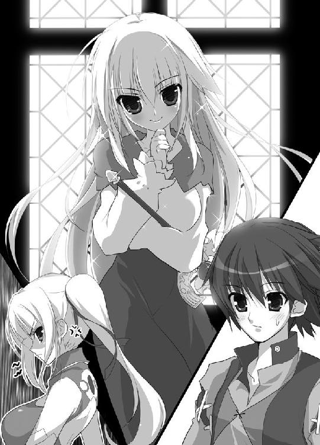

| 魔弾の王と戦姫 (MF文庫J) | |
| 川口 士 & よし☆ヲ | |
| メディアファクトリー (2011) | |
ＭＦ文庫Ｊ
魔弾の王と戦姫
川口士
口絵・本文イラスト●よし☆ヲ
長剣の切っ先を、突きつけられている。
剣を持っているのは、美しい少女だ。腰まで届く銀色の髪が印象的で、馬上から涼しげな眼差しで少年を見下ろしていた。
「弓を捨てろ」
少年は素直に、手にしている弓を地面に置く。
抵抗する気はない。もう矢も尽きていた。
周囲には無数の死体が転がっている。折れた剣や槍がさながら墓標のように突き立ち、吹く風には血の臭いが濃い。
「私はエレオノーラ＝ヴィルターリア。おまえは？」
その血の臭いを吹き消すような、少女の爽やかな声音。
凛とした、それでいて明るさも備えた不思議な紅の瞳。
少年は戸惑いながらも問いかけに答えた。
「......ティグルヴルムド＝ヴォルン」
さらにいくつかのことを聞いて、よろしいと彼女は剣を腰の鞘に納める。
少年に、にこりと微笑みかけた。
「おまえはいまから私のものだ」
１ 戦姫との遭遇
「ティグル様」
聞き慣れた少女の声とともに身体をゆすられる。
窓の外が明るいので、朝がきたのはわかっていた。
だけど、まだ眠い。
「もう少し......あとほんの少しだけ」
「もう少しっていつまでですか？」
「今日は狩りの予定もないし、昼になるまで......」
「いいかげんに起きてください！」
一喝。
毛布をはぎとられ、ティグルは肩をつかまれて乱暴に身体を起こされる。
目をあけると、怒りをたぎらせた少女の真っ赤な顔が間近にあった。
怒ってもいまいち迫力のない童顔。栗色の髪はツインテール。小柄な身体を包む服は黒の長袖と足元までのスカート、清潔感のある白いエプロンという侍女のそれだ。
「ああ......おはよう、ティッタ」
眠気の抜けていない間延びした声で、ティグルはひとつ年下の侍女の名前を呼んだ。とりあえず目を覚ましたらしいとわかってティッタは手を離す。
「兵士のひとたちはとっくに用意を終えて、ティグル様をお待ちしていますよ！」
ティグルはぼんやりと、彼女の言葉を頭の中で何度か繰り返した。
その顔から、一気に血の気が引く。
「......しまった！」
転げ落ちるようにベッドから出ると、ティッタがたたまれた服をさしだした。彼女の足元には、水を張った小さな桶がおかれている。
「ありがとう。いつもながら用意がいいな」
「こうなるんじゃないかと思っていましたから。あたしはお食事のご用意をしてきます。お顔を洗ってこれを着たら、おいでくださいな」
怒りをおさめ、ティッタは明るく笑って一礼すると、スカートをひるがえして小走りに部屋を去る。
顔を洗うと気分がすっきりして、ティグルはようやく完全に目を覚ました。服を羽織って部屋を飛びだし、廊下を走りながらボタンを留める。
「時間がないけど......すっぽかすわけにはいかないか」
まっすぐ食堂へと向かいたかったが、その前にティグルは廊下のつきあたりにある小さな部屋へと足を運んだ。
大人が三人も入れば座ることさえままならない小さな部屋だ。正面には立派な装飾をほどこされた台があり、一張の弓がたてかけられている。
弦はしっかり張られていて、その気になればいますぐにでも使えるようになっていた。
その弓の特徴を一言でいうならば、黒い。
ゆるやかな湾曲を描いた握りも、弓弦も、艶のない黒。
暗闇から弓の形を切りとってできたといわれても納得してしまいそうなほどだ。
――これを見ていると、息苦しさを感じるんだよな......。
どこか異様な雰囲気を帯びたこの弓は、狩人だった先祖が使っていたといわれるヴォルン家の家宝だ。
ティグルの父は、この弓について次のような遺言を残した。
「おまえが真にこの弓を必要としたときのみ、使え。それ以外で用いてはならぬ」
父の遺言と、弓から感じるなんともいえない薄気味悪さから、ティグルは先祖に対する敬意を忘れずとも、これにはできるだけさわらないようにしてきた。
姿勢を正し、呼吸を整えて、ティグルは胸の前で握り拳をつくって横に引く。代々の先祖に対する礼だ。
それをすませて静かに廊下へ出ると、ティグルはいそいで食堂へと向かった。
ティグルヴルムド＝ヴォルンは十六歳。ブリューヌ王国の伯爵家に生まれ、二年前に父を病で亡くして家を継いだ。
ややおおげさな響きの名前は伯爵の地位を得た先祖からとったものだが、長いのと仰々しく感じたのとで、親しい者にはティグルと呼んでもらっている。
ティグルが食堂に入ると、甘くて香ばしい匂いが鼻をつんとついた。
素朴なつくりのテーブルに、ハムを入れた卵焼きやライ麦のパン、ミルク、茸のスープなどが並び、湯気をたちのぼらせている。
テーブルのそばにはティッタが控えていた。
「スープだけでいいよ」
「だめです」
こと食事のこととなると、ティッタは頑としてゆずらない。
「みんなの前でおなかが鳴ったりしてもいいんですか。みっともないですよ」
両手を腰にあてて、まっすぐティグルを見据えるさまは、とても侍女とは思えない迫力に満ちている。さきほど起こしにきたときよりも怖い。
勝てないことがわかっているのでティグルはあっさり降参した。
パンをミルクで流しこみ、皿を持ちあげて卵焼きをかきこんで、あっというまにスープをたいらげる。
「ごちそうさま」
言葉と同時に立ちあがると、手にナプキンやらブラシやらを用意したティッタが歩いてきた。
「あとが残るので、ちゃんと拭いてくださいな」
少し怒ったように言って、ティグルの口元をナプキンで拭う。
「それに寝癖もついてます」
それからブラシを持った手をのばし、くすんだ赤い髪を丁寧に撫でつけた。
「ほら、襟も曲がってるじゃないですか」
ブラシとナプキンをテーブルに置いて、彼女はティグルの襟に手をもっていく。ティグルはされるがままだ。
「――ティグル様」
「どうした？」
急にティッタの声が弱々しいものになり、ティグルは優しく声をかけた。ひとつ年下の彼女を、ティグルは妹のように思っている。
「どうして、ティグル様が戦へ出なければならないんですか」
ティグルは少しだけ困った顔になった。くすんだ赤い髪をいじる。ティッタにはときどき、わかりきっていることを言ってティグルを困らせるところがあった。
「国王陛下の召集だ。ブリューヌ王国の伯爵ヴォルン家の当主としては当然だろう」
「で、でも」
泣きそうな顔でティグルを見上げ、ティッタは言い募る。
「うちは兵士を百人そろえるのもやっとなぐらいですし......」
貴族だ伯爵だといっても、ぴんきりだ。
そして、ヴォルン家は貧乏とはいわないまでも、質素とかつつましいという言葉が似合う類の貴族だった。
領土であるこのアルサスは中央から遠く離れた田舎で、小さいうえに森や山が多く、収入はすくない。
ティグル自身の生活も、貴族という言葉からイメージされる豪奢、豪勢といったものにはほど遠い。
屋敷がそれほど大きくないとはいえ、家事一切をこなしているのがティッタひとりだけという時点でうかがいしれるというものだ。
「それに、敵はジスタート王国だって聞きました。だったら、ティグル様はここにいるべきじゃないですか。このアルサスから山ひとつ越えればジスタートなんですから」
「そうは言うが、ここはどがつくほどの田舎だからな。ジスタートだってこんなところには攻めてこないさ」
ティグルとしては、戦場にならない方がよほどありがたい。
「そ、それに......ティグル様の弓だって、馬鹿にされているじゃないですか」
「武勲をたてるのは無理だろうな」
「武勲なんてどうでもいいです！」
ティッタは大声をあげ、すがりつくようにティグルの胸に顔をうずめた。
「ただ......無理をして怪我などなさらないよう、どうか無事に帰ってきてください」
自分の身を案じてくれる侍女の華奢な身体を、ティグルはそっと抱きしめる。
「心配するな。二年前の初陣でも、俺は五体満足で帰ってきただろう」
「あのときはまだウルス様が......」
いらっしゃいました、という言葉をティッタはのみこんだ。ウルスは二年前に亡くなったティグルの父だ。
ティッタを安心させるように、ティグルは彼女の頭をぽんと叩く。
「今度の戦では、俺の部隊は後方に配置されることが決まっている。安全な場所だ。何かあっても、まあなんとかするさ」
こぼれかけた涙を指で拭ってやると、はいとティッタはうなずいた。
「よ、よろしいですか、ティグル様。いつもと同じ感覚で、戦場で寝坊したりしないでくださいね」
「その言いかただと俺がいつも寝坊してるみたいじゃないか」
「事実です。ティグル様がちゃんと起きられるのは、狩りの日だけじゃないですか」
憮然とした反応にティグルは反論を封じられた。
それでも、ティッタが精一杯自分を励ましてくれているのがわかって、ティグルは彼女をもう一度抱きしめる。
ティッタも力を抜いてティグルに身体を預けた。
服を通して彼女のぬくもりが伝わり、栗色の髪からかすかに甘い匂いが香った。
もっと長くこうしていたかったが、そうもいかない。
名残を惜しみつつ、ティグルは彼女の身体をそっと離した。
「留守をたのむよ、ティッタ」
ごしごしと袖で涙を拭い、ティッタも笑顔を浮かべた。
「おまかせください。ティグル様もお気をつけて」
ティグルが弓と矢筒を背負って屋敷を出ると、兵士たちはすでに整列して待っていた。
革鎧を着た小柄な老人が進みでて、ティグルに頭をさげる。
「若。全員そろっとります。装備もばっちりですわ」
「ご苦労、バートラン」
この老人はティグルの側仕えだ。若いティグルよりも戦の経験が豊富で、この中で馬を駆ることができるのは、ティグルを除けば彼だけである。
他の者はすべて、槍を持ち、剣を帯びて革鎧で武装した歩兵だ。
「よく集まってくれた」
ティグルがねぎらいの言葉をかけると、古参の兵たちは陽気に軽口をたたいた。
「領主さま、気にすることはありませんや。戦は三年ぶりですが、畑仕事は毎日ですんで身体はばっちりでさ」
「国王陛下の命令に逆らうのは、うちのかかあに逆らうのとおなじぐらいおっかねえんでしょう？ なら仕方ありますめえ」
「そう言ってもらえるとありがたい。ついでに、おまえの奥さんに来てもらえないか？ 敵兵の千や二千ぐらい、怒鳴りつけて追いはらってくれそうだ」
兵たちの間から、どっと笑いがわきおこる。
「それはやめときましょうや、若。こいつのかみさんは敵も味方もおかまいなしですわ」
バートランがまぜっ返し、ティグルは肩をすくめることで話を終わらせた。
――士気は問題なさそうだな。
笑いの渦がおさまるのを待って、ティグルはあらためて敬礼を行う。バートランの引いてきた馬にまたがり、右手をかかげて号令を発した。
「我々の目的地はディナント平原だ。途中でマスハス卿の軍と合流する」
歩兵たちが軍旗をかかげる。
旗は二種類。青地に白い半月と流星を描いたヴォルン家のものと、紅馬旗――黒いたてがみに赤い体躯を持つ聖馬を描いたブリューヌ王国の象徴とだ。
「それでは出立する！」
ブリューヌ王国と、その東のジスタート王国が刃を交えるのは実に二十数年ぶりのことだった。
争いの原因は、国境線となっている川が大雨で増水し、氾濫を起こしたことだ。
まず、被害を受けた住民たちが「あいつらが川の管理をまともにしないから」とおたがいに非を押しつけあって、いさかいを起こした。
次いで、陳情を受けた国も「そちらの治水対策に問題があった」と言いはって譲らず、双方の軍に出征を強いることになったのだった。
しかし、それだけならティグルが戦に駆りだされることはなかっただろう。
「敵軍およそ五千に対して、こっちは二万五千以上か。心躍る話じゃのう、まったく」
ティグルの隣で皮肉げに吐きすてたのは、マスハス＝ローダントという初老の騎士だ。
マスハスはティグルの父の友人で、ティグルになにくれとなく世話を焼いてくれた恩人でもある。
「王子殿下の初陣だから、という話は本当なのですか？」
馬をならべて進ませながら、ティグルはマスハスにたずねた。
「事実じゃろうな。国王陛下が王子殿下を溺愛されているのは、誰もが知っておる」
ずんぐりとした体躯を鉄の甲冑で包み、マスハスは不機嫌そうな顔で灰色の髭を撫でている。
「今度の戦はこどもの喧嘩に親が渋々出てきたようなもので、国家の命運をかけた一大事というほどのものではない。そういう意味では、殿下――レグナス王子の初陣を飾るには......経験を積んでいただくにはちょうどいいものじゃが」
愛する息子の初陣を、華々しく飾ってやりたかったのだろう。
国王は、王国直属の騎士団だけでなく、戦場となるディナント平原に近い領土を治めている貴族たちにも出兵を命じたのだ。
ティグルやマスハスのような小貴族にさえも。
そうしてできあがった軍勢が、二万五千以上。
マスハスの率いている兵は三百弱。内、騎兵は五十ほど。
それなりのものだが、二万五千という数の中では完全に埋没してしまう。ティグルとあつかいがまったく変わらず、後方に配置されるのもそのためだ。
「敵より多くの兵をそろえるのは戦の常道です。それに、レグナス王子はいずれ国王となられる御方。陛下のなさりようは間違ってはいないでしょう」
なぐさめるように、ティグルは老騎士の肩をたたく。
いまの言葉は自分にも言い聞かせていることだった。そう思わなければやっていられないというのが本音だ。
「そうじゃな、わしらのような小貴族は後方でおとなしくしておればいい。勝てる戦だと踏んで、ここぞとばかりに武勲をもとめ、前衛をつとめたがる者の多いことよ......そういえばティグル。戦姫を知っておるか」
思いだしたように聞かれ、ティグルは首をかしげる。
「ジスタートの七戦姫のことですか？」
「そう、それよ。敵の指揮官は、その戦姫のひとりらしいぞ。十六という若さながら常勝無敗。剣士としても優れており、常に先頭に立って剣を振るうさまから『銀閃の風姫』や『剣の舞姫』などと呼ばれ恐れられておる」
ジスタート王国はひとりの王と、七人の戦姫によって構成されている。
王国の中に七つの公国があり、それぞれを、戦姫と呼ばれる女性が治めているのだ。
――俺と同い年か。
ティグルはまだ見ぬ敵将に、妙に感心してしまった。自分とおなじ年齢で、女性だというのに戦と勝利を積みあげ、五千もの軍勢を率いているという。
ティグルの生まれそだったブリューヌ王国では、女性の騎士は大貴族の令嬢であるなどよほどのことがなければ認められない。
今度の戦でも、女性の騎士などこちらにはひとりもいない。
それもあって興味がわいた。
「その戦姫はなんという名前なのですか」
「たしか、エレオノーラ＝ヴィルターリアといったの。たぐいまれな美貌の持ち主だそうじゃ。隣に宝石を置いたら、宝石の方が色褪せて見えたという話があるほどでな」
「それほどの美人なんですか」
「美女と聞いて心躍らせるのはよいが、ほどほどにしておけよ。ティッタが妬くぞ」
灰色の髭を震わせてマスハスは笑い、ティグルはむっとした。
「どうしてそこでティッタが出てくるんです。あれは妹みたいなもので――」
「小さな頃から、だらしのない兄としっかり者の妹のようだと言われておったな」
その通りなので、ティグルはぐうの音も出ない。くすんだ赤い髪をかきまわして、話を変えた。
「戦姫が話どおりの名将だとしたら、この戦は厳しいものになるでしょうね」
「とはいえ、さすがに数が違いすぎる。いかな戦の達人といえど、どうにもなるまい」
戦姫の武勇や才がどれほどのものであれ、五倍もの差をくつがえせるはずがない。
そうですね、とティグルは同意しようとして、言葉がうまく出てこなかった。
何か、いやな予感がするのだ。首筋のあたりがちりちりと焼けるような感覚。
ティグルは以前にもこんな感覚に襲われたことがあった。
森の奥で狩りをしていていつのまにか狼の群れの中にいたときや、山の中で竜と遭遇してしまったとき。
朝早く目が覚めたと思ったら隠しようもないほどに股間が覚醒しており、そこにティッタがいつものように起こしにきたとき。
とにかく、たいていろくでもないことが起こる。
「浮かない顔じゃな」
顔に出ていたらしく、マスハスが怪訝そうな顔で覗きこんできた。
「何か思うところでもあるのか？ 能天気なおぬしらしくない」
「能天気って......他に言いようがあると思いますが。泰然自若とか」
ティグルが不満そうに言うと、マスハスは目を細めて笑った。
「小難しい言葉を使って無理にかっこうをつけんでもよい。わしはいまでもしっかり覚えておるぞ。二年前、おぬしがウルスの後を継いだ日のことを」
「俺、何か言いましたか？」
「町や村の代表たちを前に、今後のアルサスをどうするのかと聞かれて『まあ、なんとかやっていきます』はなかろうが。あれを能天気といわずしてなんという」
ティグルは何も言い返せず、肩をすくめた。
マスハスの繰り言はまだ続く。
「生前のウルスはおぬしのことを、のんびりとしたおだやかな気性だの、楽観的なものの見方は悪いことではないだの、よく眠るのは健康にいいだのと褒めておったが、まったくもって親のひいき目じゃったわ」
「でも、俺なりになんとかやっていってるという自負はありますよ？」
マスハスの言葉が途切れるのを待って、ようやくティグルは言い返した。
実際、アルサス全体で特に問題は起きていない。
蓄えも徐々にだが増えているし、かつて能天気な挨拶とやらに唖然とした町や村の代表たちとも、いまはそれなりにうまくつきあっている。
「狩りの日以外に、自力で起きられるか？ ティッタの助けを借りずに」
「......いえ、それはその」
「これもティッタから聞いたことじゃが......二、三日ほど余裕ができると、弓矢を持って近くの森や山へすっ飛んでいくそうじゃのう。狩りをしに」
ティグルは無言で肩を縮めた。何ひとつ反論できない。
「とはいえ、まあ、領主としてやるべきことはやっておるようじゃな。あやつらの顔を見ればわかる」
後ろを振り返って、マスハスは肩越しに兵たちを見た。
後方に配置されることがわかっているので戦意にはとぼしいが、不平不満をあらわにしている者はいない。
「ティグル。わしらの役目は兵たちを無事に帰らせることじゃ。どう戦うかを考えたりすることではない。何を気に病んでおるのかはわからんが、どんとかまえておれ」
「ありがとうございます」
マスハスの気遣いに、ティグルは笑顔をつくって礼を述べた。
彼の言うとおり、あれこれ思いをめぐらせても無駄だろう。
虚しいことだが、王子に箔をつけるためだけに自分たちは集められたのだ。
戦力としてはまったく期待されていないし、そんな部隊の進言を受けいれるような人物の心当たりは、ティグルにもマスハスにもない。
数日後、ティグルたちはディナントに到着した。
主戦闘を務める前衛二万は丘のふもとに布陣する。レグナス王子のいる本隊を含めた後衛五千は丘の上に待機した。ティグルやマスハスは後衛だ。
戦わずにすむことも、ありえたはずだった。
◎
夜明け前の暗い空の下を、一千の騎兵が静かに進軍している。
剣や槍の穂先は光らないよう土で汚し、馬の口には板を噛ませ、馬蹄は綿入りの布で包むという用心深さだ。
そうして彼らは敵に気づかれることなく、小高い丘のそばまでやってきた。
なだらかな斜面を上った先には敵――ブリューヌ軍の後衛が夜営をしている。篝火の炎がちろちろと踊っていた。
「――休息。準備せよ」
騎兵たちの先頭に立っている銀色の髪の少女が、薄く笑った。兵たちはその言葉に従って休息をとり、馬の口から板をはずし、馬蹄から布を取り去る。
やがて、放っていた斥候が戻ってきた。
敵は寝静まっており気づいていないとの報告に、少女は騎兵たちを振り返る。腰の長剣を抜き放ち、高々と掲げた。長剣の周囲にかすかな風が吹く。
「目の前の敵はおよそ五千。我々の実に五倍だ。後衛とはいえ、総指揮官のいる本陣はさすがに精鋭で固めているだろう」
だが、と少女は紅の瞳を戦意で満たして続ける。
「私は行く。そして勝つ。おまえたちはついてくるか？」
騎兵たちは無言で、剣や槍を空に向かって突きあげた。
少女は敵のいる方角に向き直り、馬を走らせながら鋭く剣を振りおろした。
「突撃せよ！」
軍旗がひるがえる。黒竜旗――漆黒の竜を描いたジスタート王国の旗が。
空気がごうっと流れだす。騎兵たちは手に剣や槍をかまえ、あるいは弓に矢をつがえながら、少女に続いて丘を駆け上った。
地鳴りのような馬蹄の轟きに、見張りの兵たちもようやく敵襲に気がつく。
だが、もう遅い。
「敵――」
少女が剣を一閃させると、兵の首が悲鳴ではなく血飛沫をあげて飛んだ。
徐々に白みはじめた空を背景に、少女の率いる一千の騎兵が敵陣を蹂躙する。ブリューヌ軍は大混乱に陥った。狼狽のあまり武器を捨てて逃げだす部隊まで現れる。
果敢に抵抗する兵もいたが、勢いが違う。
しかも、ジスタート軍の先頭に立って剣を振るう少女の強さは圧倒的だった。
群がる敵をことごとく一撃で斬り捨て、あるいは馬蹄で容赦なく蹴散らす。それでいながら、血の一滴も浴びることがない。
長剣が風を唸らせるたび、地面に転がる死体がひとつ、またひとつと増えていく。
白銀の髪をなびかせて少女は敵陣を突き進み、一塊となった騎兵たちが続いた。
この時点で、ほとんど勝敗は決していた。
◎
耳鳴りがする。
いくつもの悲鳴、断末魔の叫び、馬蹄の轟きと剣戟のひびきが耳を蹂躙している。
「......ぅぁ」
目が覚めた。
視界に広がるのは吸いこまれそうな青空。
自分にのしかかっているものをおしのけて、ティグルは身体を起こした。
耳鳴りが消えると、聞こえるのは風の音とそれにかき消されそうなかすかなうめき声。折れた軍旗の小さなはためきと、踏み潰されるのをまぬがれた草のざわめき。
土ぼこりが地面を這い、血の臭いが鼻をつく。
「気を失っていたのか......」
よろよろと立ち上がり、首をめぐらせれば見渡すかぎり死体の山。
草を血で染めて、大地を埋めつくさんばかりに数百、数千もの死体が転がっていた。
吐き気をおぼえて口元に手をやると、ぬるりとした感触とともに手が赤く染まる。
――血......？
顔から頭までをなでまわすが、傷らしいものはない。
「他のだれかの血か」
ティグルはどうやらいくつかの死体に埋もれていたらしかった。敵の目にとまらなかったのもそのためだろう。
「バートラン！ マスハス卿！」
信頼する部下や親しい老騎士の名を呼んだが、返事はない。
自分に従ってきた兵士たちの名も呼んでみたが、やはり反応はなかった。
「逃げてくれたならいいんだが」
どこを向いても死体ばかりだ。その合間に剣や折れた槍、打ち壊された軍旗が捨てられている。
遠くは朝靄に包まれてよくわからないが、少なくとも見える範囲では動いている者はいなかった。味方も、敵も。
敵に対する怒りは湧かなかった。それ以上に疲労感が全身に重くのしかかって、口からため息がこぼれる。
「ひどい戦だった......」
夜明けとほぼ同時に、ブリューヌ軍は背後から奇襲をうけたのだ。混乱したところに正面からも攻めたてられて、二万五千もの大軍はあっけなく瓦解してしまった。
――昨日の日が暮れる前、我が軍は正面に敵がいることを確認している。つまり、ジスタートは部隊を二つにわけて、一方でまず後衛を襲い、それにあわせて正面からも攻撃してきたんだ。
ぞくりと、ティグルは背筋が寒くなるのを感じた。
策としては単純だ。こどもでも考えつくぐらいに。
――恐ろしいのは、五倍の敵に対してそれを平気で実行してしまう精神だ。
敵よりはるかに少ない兵を、さらにわけようというのだ。よほどうまく動かさなければあっけなく撃破されてしまう。兵の反発だって少なくないだろう。
――だけど、見事に成功した。
ブリューヌ軍は総崩れとなった。
浮き足立って潰走する味方の波に押し流され、ティグルはまともに指揮がとれなくなって落馬し、気絶してしまったのだ。
ティグルの部隊は味方にやられたようなものだった。
「それにしても......」
ティグルは思いだす。敵軍の先頭に立って長剣を振るい、ブリューヌ兵を次々に斬り伏せていた白銀の髪の少女を。ほとんど一瞬しか見えなかったが。
「あれが戦姫なのかな」
戦姫は常に陣頭に立つ、というマスハスの言葉を思いだす。
きれいだったという場違いな感想が浮かんで、ティグルは反省するようにくすんだ赤い髪をかきまわした。
幸い、自分の弓はすぐそばに落ちていた。
拾いあげて、わずかな緊張と不安に襲われながらも弓弦を弾いてみる。
「......問題ないな」
ほっと胸を撫でおろす。もし弓が曲がっていたり、弦が緩んでいたりしたら使い物にならなくなるところだった。
矢筒の中の矢も、何本か残っている。
空を見あげて、ティグルは太陽の位置で方角をたしかめた。
「あっちが西か」
この戦場から東へ向かえばジスタート。西へいけばブリューヌだ。
身体中に走る痛みをこらえ、のろのろと西へ向かって歩きだしたティグルは、視界の端に動くものを認めて足を止めた。
一騎の騎士が、剣を振りかざしてこちらへ駆けてくる。
ティグルは弓をかまえ、矢を一本引き抜いた。
騎士は地面に転がる死体を馬蹄で蹴りとばし、踏みつけながらティグルへと迫る。ふたりの距離が三十アルシン（約三十メートル）まで縮まったとき、騎士が吼えた。
「まだブリューヌの生き残りがいたか。その首もらったぞ！」
ティグルは黙って矢をつがえ、無造作にも見える動作で放つ。
大気がぶれた。
鈍い音がしたときには、騎士の喉を正確に矢が射抜いている。
驚くべき速さであり、冷静さだった。
まったく反応できなかった騎士の身体がぐらりとかたむいて、どうと地面に倒れる。
騎手を失った馬は甲高いいななきをあげて、ティグルが止める間もなく彼方へと走りさってしまった。
「まいったな......うまくはいかないもんだ」
ため息をこぼす。馬があれば、楽に戦場を脱することができると思ったのだが。
とぼとぼとティグルは歩みを再開したが、十歩といかない内に再び歩みをとめた。
「敵か？」
三百アルシン（約三百メートル）先に、騎士の一団が見える。見つかれば、すぐに追いつかれてしまうだろう。
「......七人もいる」
ティグルは生まれつき目がよい。その視力は狩りによってさらに鍛えられ、三百アルシンの距離までなら、ひとの顔を見分けることもできるほどだ。
矢筒の中身をたしかめる。残りは四本。
弓には自信があるが、一矢でふたりを射倒すことはさすがにできない。さきほどのように容赦なく斬りかかってこられたら、どうしようもない。
――味方であってくれ。
そう願いながら、ティグルは騎士たちを観察する。先頭の騎士を目にしたとき、おもわず目を瞠った。
「戦姫......」
奇襲を受けたあのとき、ジスタート軍の先頭に立っていた少女だった。
ティグルは呼吸すら忘れるほど、彼女に見惚れた。
自分と同い年くらいの若い娘で、朝の陽光を反射してきらめく白銀の髪は甲冑の外、腰まで届き、紅の瞳には明るさと凛々しさが輝いていた。
甲冑からのびた腕は年齢相応を思わせる華奢さで、しかし、その手に握られた長剣は不思議と似合っている。
――マスハス卿はたぐいまれなる美貌の持ち主と言っていたけど。
そのとおりだった、というべきか。たぐいまれなる、どころではないというべきか。
こうしてじっくり見れば見るほど、なるほどと唸らされてしまう。
そこで、ようやくティグルは我に返った。雑念を追いだすように頭を振ると、冷徹な視線で戦姫たちを見据える。
他の騎士たちは護衛なのだろう。彼女を守るように馬を進めている。
――戦姫を倒せば......。
自軍の惨敗はもはや覆しようがない。いまは逃げまどうブリューヌ兵にたいして大規模な追撃戦がおこなわれているはずだ。
「......でも、彼女が倒れれば追撃戦どころじゃなくなる」
マスハスやバートラン、アルサスから従ってきた兵たちが生きのびていたら、彼らの助かる確率ははるかに上がる。
闘争心が湧きあがってくる。弓を握る手に力が入る。
「やってやる」
ティグルは矢を一本引き抜くと、弓につがえる。
弦を引き絞った。無意識に、神の名を唱える。
「風と嵐の女神エリスよ......」
きりりと弦のきしむ音が鼓膜をくすぐった。
現在の大陸では、弓の最大射程は二百五十アルシン（約二百五十メートル）といわれている。
この数字はあくまで、どこまで飛ぶか、をはかったものだ。
狙った相手に傷を負わせるつもりならば、数字はもっと低く見積る必要がある。
戦姫たちはまだ三百アルシン（約三百メートル）ほど先にいる。
にもかかわらず、ティグルは矢を放った。
矢はひゅうと風を切って飛び、戦姫のそばにいた騎士の馬、その頭部に深く突きたつ。
馬が横転して騎士が地上に投げだされたときには、ティグルは二本目を放っていた。
それはやはり、別の騎士の馬の眉間を射抜く。
「よし」
ふたりの護衛が倒れたことで、ようやく道ができた。
銀色の髪と紅の瞳をした戦姫。彼女に矢を届かせる隙間を、つくることができた。
「ここからが本番だ」
ティグルは矢筒に手をのばす。呼吸が重く、熱い。
陽の射さない山奥で、体長四十チェート（約四メートル）以上の地竜と対峙したときでさえ、ここまで緊張はしなかったのではないだろうか。
――他の騎士たちが彼女を守ろうとしても、絶命した馬と、落馬した騎士が彼らの動きを邪魔する。それらを迂回しようとすれば時間がかかる。
それは本当にごくわずかな時間。
だが、ティグルにとってはそれで充分だ。
――この状況で彼女がとる行動は、馬首に身を伏せるか、おもいきって落馬するかのどちらかしかない。
左右は護衛にはさまれて動けず、数歩の後退は意味がない。正面には倒れた部下と馬がある。それを助走もなしに乗りこえるのはむずかしい。馬がいやがる。
できたとしても、跳躍から着地、そして矢から隠れるまでには隙ができる。
そこであらためて戦姫を見据えたティグルは、突然、猛烈な寒気におそわれた。
笑ったのだ。戦姫が。
あきらかに自分を見て。楽しそうに。
「くっ」
ティグルは歯をくいしばる。いま、自分はあきらかに、彼女に呑まれかけていた。
残りの矢を二本とも抜き取る。一本を口にくわえ、もう一本を弓につがえた。
しかし、そこでティグルは信じがたい光景を目にする。
戦姫の乗った馬が、ふわりと飛んだのだ。
倒れた部下たちのはるか上を。
その高さは、二十チェート（約二メートル）はあっただろうか。
まるで馬の背に翼が生えて、羽ばたいたとしかティグルには思えなかった。跳躍などというものではない。飛翔といっていい。
「何だ、いまのは......？」
戦慄と恐怖が、ティグルの全身を駆けぬける。自分の目がおかしくなったのかとすら思った。
ひとを乗せている馬が、助走もなしに二十チェートもの高さを跳べるはずがない。
しかし、戦姫はなにごともなかったかのように着地し、こちらへ向かってまっすぐに馬を走らせてくる。
――おびえるな......！
自分を叱咤する。いまのは何かの見間違いだ。
ティグルは彼女を睨みつけ、第三矢を放った。
矢は風に乗り、大気を裂いて空を走る。彼女の額へと吸いこまれていき――白銀の閃光に打ち落とされた。
「......嘘だろう？」
ティグルは目を瞠る。口の端が引きつった。
数百アルシンの彼方から高速で飛来する矢を、剣で打ち落とす。
そんなことができるのは、武勲詩に出てくるような伝説の勇者やら英雄やらだけだ。並の人間にできることではない。
最後の矢をつがえる。
弓にだけは、絶対の自信がある。ましてや相手はこちらへまっすぐ向かってきており、その位置はすでに三百アルシンを切っている。
――外すわけにはいかない。
矢はさきほどと同じく彼女の額を正確に狙い――同じように弾かれた。
その間、戦姫の駆る馬は一瞬たりとも脚を緩めず、猛然と走ってくる。あと十秒ほどでここにたどりつくだろう。
「ここまでか」
矢は尽きた。他に武器はなく、徒歩ではどうやっても馬からは逃げられない。
ティグルは弓を握りしめて、両足に力をこめてまっすぐ立つ。見苦しいふるまいはしたくなかった。
戦姫はティグルの前まで来ると、馬を止める。
血煙や砂塵をよせつけない白銀の髪。
故郷の山に降り積もる万年雪を想起させる白い肌。
すっきりとした輪郭、やや高く形の整った鼻、うるおいを帯びたあでやかな唇は最高級の彫刻を思わせるが、生命力にあふれる紅の瞳が、彼女が生身の人間あることをなにより強く印象づけている。
彼女は長剣の切っ先をティグルに突きつけた。
「弓を捨てろ」
仕方なく言われたとおりにする。戦姫は満足そうにうなずき、笑顔で言った。
「いい技量をしているな」
それが自分に向けられた言葉だと、ティグルはすぐにはわからなかった。
――褒められた......？ 自分を狙った人間なのに？
嬉しさよりも戸惑いが優る。
「私はエレオノーラ＝ヴィルターリア。おまえは？」
「......ティグルヴルムド＝ヴォルン」
「貴族か？ 爵位は？」
ブリューヌやジスタートをふくめた諸国では爵位名がそのまま姓となる。わずかな例外をのぞいて貴族以外が姓を持つことはない。
伯爵だと答えると、彼女の笑顔はますます嬉しそうなものになった。
「よろしい。ヴォルン伯爵」
長剣を腰の鞘におさめながら、エレオノーラは明るく告げた。
「おまえはいまから私の捕虜だ」
思いもかけない言葉にあっけにとられていると、彼女の護衛たちがようやく追いついてきた。
彼らはティグルを取り囲んで剣や槍を突きつけたが、エレオノーラが手をふると、意外そうな反応をしめしながらも武器を引く。
「リム、おまえの後ろにこいつを乗せてやれ。私の捕虜だ。多少は手荒にあつかってもかまわないが、大怪我はさせるな」
リムと呼ばれた騎士は黙ってうなずいた。頭部全体を覆う兜をつけているので、どのような表情をしているのかティグルにはわからない。
「早く乗りなさい」
リムはティグルを見下ろして、兜の奥から低い声を発した。声が怒りを帯びているのを感じとったティグルは、すぐにその理由を悟った。
ついさっき、自分が落馬させた騎士だった。
――他の騎士から馬を借りたのか？ だとすれば、護衛のなかでも偉い方なのか。
「弓を拾っていいか？」
ティグルは自分が地面に放った弓をゆびさして聞いた。
「大事なものなんだ」
空の矢筒も見せて敵意のないことをしめす。リムは馬上から手をのばした。
「いいでしょう。ただし、私があずかります」
ティグルはリムに弓をわたすと、後ろに乗る。腰に手をまわした。
いきなりリムは首をそらす。兜の後部がティグルの顔面をしたたかに打った。
「何をするんだ」
赤くなった鼻をおさえてティグルは抗議する。エレオノーラが肩を震わせて笑った。
「リム、そいつは一応私の捕虜だ。もうすこしやさしくしてやれ」
「......御意」
その声にはあきらかに不満がにじみでていたが、リムは従った。
「妙な動きをしたら、即座に振り落として馬蹄で踏み砕くので、そのつもりで」
ティグルはため息をついた。リムの自分に対する怒りのすさまじさにもだが、胸中に広がっていく未来への不安をおさえようがない。
騎士たちを振り返って、エレオノーラは意気揚々と告げた。
「つまらない戦だったが、最後になかなか楽しめた。――では、撤収する」
ディナント平原の会戦は、ジスタート王国の一方的な勝利で幕を閉じた。
ジスタートの被害は百に満たなかったのに対し、ブリューヌは五千を超える死者と、その倍以上の負傷者を生んだ。
これだけにとどまらず、ブリューヌは何をもってしても埋めがたい損失を被っていた。
総指揮官であり、次期国王と目されていたレグナス王子の戦死である。
２ ライトメリッツ
夢を見ている。ろくでもない夢だ。
小さな丘の上に、自分たちの部隊はいる。
いまは食事の時間だ。兵たちは土を盛って固めた炉に、桶のような深鍋をかけて魚肉のシチューをつくっていた。
ゆるやかな稜線を降りていった先には、起伏のないディナント平原が広がっている。
そこには二万のブリューヌ軍がいて、自分たちと同じように食事をとっていた。数千もの湯気がたちのぼり、兵たちはあたかも蒸気につつまれているように見えた。
ティグルとマスハスが鍋をかきまぜながら話していると、数人の若者たちが甲冑を鳴らしながら姿を現す。
「おまえも来たのか。ヴォルン」
あからさまに嘲る口調で声をかけてきたのは、ザイアン＝テナルディエだ。
テナルディエ家は公爵で、ヴォルン家などとは比べものにならない古くからの名門だ。親族に有力な貴族を数多くかかえ、所有する領土は広く、総動員できる兵は最大で一万に達するといわれる。
今度の戦でも、四千もの大軍を率いてはせ参じていた。
ザイアンはそのテナルディエ家の長男であり、次期当主だった。現在十七歳。
美々しい装飾の甲冑を着こみ、立派な造りの剣を腰に帯びて格好をつけているが、その表情に浮かんでいるのは他者を見下すことに慣れた不遜さだ。
彼の後ろには取り巻きの若者たちがつき従っていた。
ザイアンと同じく公爵や侯爵といった大貴族の生まれで、家紋の刻まれたきらびやかな鎧を身につけ、にやにや笑いながらティグルを眺めていた。
ティグルとしては無視することもできず、やむを得ず最低限の礼儀をしめす。
「......陛下の臣として忠節を尽くすべく、馳せ参じた次第です」
「殊勝なもの言いだが、おまえごときが何の役に立つというんだ」
嘲笑に、他の貴族たちの笑い声がかさなった。年齢が近いからか、ザイアンはこうしてティグルに突っかかってくることがたびたびあった。
「前にも言ったが、四、五代前は狩人なんぞをやっていた家の者など、貴族として認めんからな」
吐き捨てて、地面に置いてあったティグルの弓を踏みつける。
ティグルの動きはほとんど反射的なものだった。獣をおもわせる俊敏な動きで弓をつかみあげる。
「うあっ」
足をすくわれてバランスを崩し、ザイアンは取り巻きたちを巻きこんで派手に転んだ。
「ザイアン様に何をする、貴様！」
激昂し、つばを飛ばして吼える取り巻きたちに、ティグルも大声で怒鳴り返す。
「弓が曲がったらどうする気だ！」
「弓？ 弓がどうしたってんだ、この臆病者が！」
「そうだ。そんなものが壊れたところで、何を困ることがある。剣をとって前に出ればいいだけの話だろうが！」
「貴様のような者には、戦神トリグラフも加護をお与えにならんだろうよ！」
他の者たちも賛同の声をあげ、ティグルは歯噛みした。
ここでは――ブリューヌ王国では、彼らの言い分が正しい。
「弓は、白刃の前に身をさらす勇気をもたぬ臆病者の武器だ」
ブリューヌ軍には昔からそうした考えが根強くあり、弓を軽んじた。
弓兵の功績は一段低く見られるのならばまだいい方で、評価の対象にすらならないということがほとんどだ。
「弓兵は、徴兵した狩人、または自分の土地を持たない農民。兵士の中からは重い罪を犯したことのある者、剣および槍の技量について際だって劣る者から選ぶべし」
そのような基準があるほどで、正規の兵でありながら弓を使う者は「罪人と罵られるか下手糞と侮られるか選べ」ということになる。
武勲をたてて伯爵位と現在の領地をいただいたティグルの先祖は狩人だったのだが、マスハスは「狩人でなかったら、もっと高く評価されていただろう」とぼやいたものだ。
「落ち着け、おまえたち」
助けを借りてようやく立ちあがったザイアンが、取り巻きたちを制した。
仕方なくといった感じながらも、ティグルを責める声は止む。
甲冑についた土ぼこりをわざとらしくはらい、ザイアンは腕を組んでティグルをせせら笑った。
「おまえが弓にこだわる理由は、剣も槍も扱えないからだろう？ 弓を持って戦場にいれば、とりあえず戦士のふりができるなどとあさましいことを考えているのだろうが」
ティグルは黙っている。剣も槍も苦手なのは事実だ。
ここで反論すれば、ザイアンは自分に剣か槍を持たせて振るわせ、その動きを笑いものにするだろう。前に一度、そうしてきたことがあったからだ。
ザイアンの罵倒はつづいている。
「そもそもブリューヌ王国の伯爵たる者が、剣も槍も持たず、鎧すら着けないで戦場に赴くことを恥と思わないのか？ 見ろ、おまえたち。こいつのみすぼらしい格好を。革の鎧に革の籠手、革の脛当てと革尽くしだ。マントはそれなりのようだが、見るべきものがせいぜいそれだけとは。なんとも哀れな懐具合だな」
「――ザイアン卿」
それまで黙って事態を見守っていたマスハスが、むっつりと口を動かした。
「見事な雄弁ぶりですが、それだけ言葉をつむがれれば、さすがに喉がお渇きになったのでは。あちらで......」
ゆっくりとある方向を指さし、続ける。
「葡萄酒を配給しておりますれば、渇きを癒されてきてはいかがです」
丁寧でしずかな口調ながら、マスハスの態度には相手をひるませる圧力があった。
今年で五十五になるこの老騎士の貫禄に、ザイアンは呑まれた。
おもわず一歩さがってしまい、そのことに気づくとふん、とザイアンは鼻を鳴らし、おおげさな動きでマントをひるがえす。
「行くぞ、おまえたち」
歩き去っていくザイアンたちの後ろ姿を見送り、ティグルは弓の具合をたしかめたあとマスハスに礼を述べた。
「ありがとうございます。おかげで助かりました」
「いやいや。わしの方こそすまなんだの。もっと早く言ってやれればよかったんじゃが、なかなか間がつかめなんだ」
ザイアンから見れば、マスハスもティグルとなんら変わらない小貴族なのだ。
タイミングをはかって口をはさまなければ、同じように鼻で笑われて罵声を浴びせられていたかもしれない。
鍋をかきまわす作業にもどりながら、マスハスはなにげない動作でまわりをぐるりと見回す。
兵や、他の貴族らは、自分たちの鍋に集中したり、武具の手入れをし、あるいは雑談に興じていた。不自然なぐらい、誰もこちらを見ようとはしない。
ザイアンを恐れ、ティグルたちにかかわるのを避けていた。
「剣や槍をあつかえることが、勇気の証明にはならんというのがよくわかるわ」
皮肉を吐き捨てたマスハスに言葉を返そうとして、ティグルは口を閉じる。少し離れたところにかたまっている貴族たちの会話が、聞くとはなしに聞こえてきたのだ。
「そういえば、聞いたか。ガヌロン公爵のこと」
「この戦にかこつけて、臨時の税を徴収しているという話か」
「それだ。税をおさめられない家に若い娘がいれば、さらって自分の館へと連れ去り、いない場合は罰として家に火をはなつそうだ」
「うらやましいものだ。私にも臨時の税をかける権限があればな」
とくに義憤を感じる様子もなく、その貴族はぼやいた。
ガヌロン公爵は、テナルディエとならぶブリューヌ王国の大貴族だ。
テナルディエ家と同じく力のある貴族が親族に幾人もおり、その権力と権勢は、国王でも無視できない。
領土の統治について、ブリューヌの貴族は基本的に自治を認められているのだが、税の設定など、いくつかのことに関しては、国王の許可をとらなければならない。
ガヌロンはそれを堂々と破り、そればかりか領民に非道をはたらいているようだが、国王は黙認しているらしかった。
「そういう話なら、テナルディエ公も負けておらんぞ。なんでも、この戦が終わるまで、神々への誓約として、一切の酒を領民に禁じ、ことごとく供出させたそうだからな」
「ほう。しかし、酒なら隠し持ったり、新たにつくったりできよう。禁を破った者の家はどうなる？」
「若い娘がいれば連れ去るという点はガヌロン公と同じだが、こちらは見せしめとして、父と子、あるいは夫と妻にそれぞれ剣をもたせ、殺しあいをさせているらしい。どちらが勝つかの賭けもやっているそうだ」
聞こえてくる彼らの会話にティグルは拳を握りしめた。
立ちあがりかけた膝の上に、マスハスの硬い、しわだらけの手がおかれる。
「落ち着け」
「何を、落ち着けというのです」
「酷な言いかたになるが、おまえが何かを言ってもどうにもならんじゃろう」
その通りだった。ティグルはその場に座りなおしたが、腹の底には怒りが煮えたぎっている。
怒鳴りたくなる気分を、歯を食いしばって必死におさえた。
領民を人間と思っていないようなガヌロンやテナルディエに怒り、彼らの暴虐について周囲をはばかることもなく、その内容に感情をたかぶらせるでもなく話している彼らに怒り、そして、何もできないだろう自分に対して怒りと無力感をおぼえた。
「いまの話は、本当なのですか？」
「噂じゃが......似たような噂はいくつもあるし、当人たちは否定せん。おまえは中央にあまり出てこないゆえ、知らなかったじゃろうが」
仕方がないのかもしれなかった。
ティグルは自分の領土であるアルサスから出たことなど、ほとんどない。
出世欲や野心もないので、自分と縁もゆかりもない貴族に興味を持ったこともない。
ザイアンのことも、顔をあわせたくない大貴族の息子としか見ていなかった。
「陛下が、黙認されているというのも......？」
おそるおそる、たずねる。
できれば信じたくないことだった。
「たしかに、陛下はいまのところ彼らに何も言っておらぬが」
ずんぐりとした身体を不機嫌そうにゆらしながら、マスハスは首をふる。
「陛下にも思うところがあるのだと、わしは思っておる。いずれは......あるいは、陛下が無理でもレグナス殿下なら......」
かぼそい希望にすがるような目をしたマスハスは、ふと、顔をあげてティグルを見た。 手を伸ばしたかと思うと、きょとんとするティグルの口に指をつっこむ。
「ふぇ......？」
あまりに唐突すぎて、言葉が出てこない。
しかも、つっこまれた指はひやりとして、どこか鉄のような味がした。
◎
目が覚めた。ティグルの視界に薄暗い天井が映っている。
「――やっと起きましたか」
抑揚に欠けた声が聞こえた。ティグルの口から何かが引き抜かれる。
剣だった。
剣の持ちぬしは、金色の髪をした見たこともない女性だ。
「......めずらしい起こしかただな」
「このようなやり方でひとを起こしたのは、私もはじめてです」
冷淡な視線と言葉を返され、ティグルは言葉につまった。ひとまず挨拶を試みる。
「......おはよう」
「あと一刻（二時間）もすれば昼です」
頭をかきながらティグルは身体を起こし、あらためて女性を見上げた。
スカートと一体となっている形状の、赤い半袖の服に、肘の上まである長手袋と、膝上までの長靴という格好で、腰には手にしている剣の鞘がある。
おそらくティグルよりも背は高い。年齢も二つか三つほど上のように思える。
まちがいなく美人なのだが、硬質の美貌よりも感情の乏しさ、愛想のなさを印象づけられる、そんな女性だった。
特に目をひくのは三つ。
頭の右側でむすんで流している、艶のない金色の髪。
見つめられていると底冷えのする無機質な碧い双眸。
長身ながら均整のとれた、すらりとした身体つきににあわないほどの豊満な胸。
服を内側から押し上げている二つのふくらみを、つい、凝視してしまっていたティグルに、女性は剣をちらつかせて冷たい言葉をなげかける。
「――もう一度これをあなたの口に突きいれれば、しっかり目が覚めるでしょうか」
「......すまない」
顔を真っ赤にして、ティグルは素直に謝った。
室内を見回す。小さな部屋だ。あるのは自分が寝ていたベッドだけ。
ひとつだけの窓から陽光が射しこんで、部屋をぼんやりと明るく照らしている。床は石がむきだしで、扉は廊下に通じるもののみ。自分の弓は壁にたてかけられていた。
「まったく......どんなに呼んでも叫んでも起きてこないと兵たちがいうので、自殺でもはかったのかと思えば......。捕虜の身で、どうして熟睡できるのですか」
「特技のひとつなんだ」
「もうすこし口を慎まれてはいかがでしょうか。緊張感がなさすぎです」
冷ややかな声に怒りが混じる。ティグルは困ったように頬をかいた。
「そんなにだらしなく見えるか？」
「殺意を覚えるていどには」
突き放すように答えると、女性は背を向けて、扉を押しひらきながらティグルに呼びかける。
「エレオノーラ様があなたを呼んでおります。ついてきてください」
ティグルは急いでベッドの下に置いていた革靴を履き、彼女の後についていった。
「はじめまして。俺は――」
「はじめてではありません、ティグルヴルムド＝ヴォルン伯爵」
振り返りもせず、彼女は答える。拒絶するようなひびきの声で。
「私の名はリムアリーシャです。覚えてもらう必要はありませんが」
ライトメリッツはジスタート内にある、エレオノーラが治めている公国だ。
その公都にエレオノーラの軍が到着したのは昨日のことである。ディナントを去ってから、十数日が過ぎていた。
エレオノーラ自身は兵たちにねぎらいの言葉をかけたあと、軍を副官のリムアリーシャにゆだねて、数人の部下とともに王都へ馬を走らせている。
国王へ、戦勝の報告をしなければならなかったのだ。
公都への帰還中、ティグルは見張りの兵士に何度か話しかけてみたのだが、返事はいつも同じだった。
「おまえは戦姫様の捕虜だから、よほどのことがなければ相手にするなといわれている」
エレオノーラに会わせてくれと頼んでも、聞き入れてもらえなかった。彼女は軍を離れて王都へ向かっていたのだから仕方のないことだったが。
結局、おとなしくしている以外にティグルに与えられた選択肢はなく。
「......なるようになるか」
腹をくくったティグルは、夜は遅くまで空をながめ、昼は馬上でうとうとしながら過ごしたのだった。
リムアリーシャの後ろについて、ティグルは公宮の廊下を歩く。
「何をきょろきょろしているのですか」
おちつかない様子を感じとったらしい、振り返ったリムアリーシャがあきれた顔でティグルを見た。
「うん、立派な造りだなと思って」
「あなたは貴族でしょう。伯爵位の」
「貧乏貴族だからな。俺の屋敷はこことは比べものにならないくらい小さい」
恥じるふうもなく答えて、ティグルは天井や床を感心する顔つきでながめる。
これまでブリューヌ王国の外に出たことがないティグルには、公宮の造りも、床を飾るモザイク模様も、なにもかもがめずらしい。
中庭に面した側は壁ではなく列柱式になっており、やわらかな陽射しがふりそそいでいた。広大な中庭では兵たちが訓練にはげんでおり、活気に満ちている。
「いい雰囲気だな」
「ここはエレオノーラ様の公宮ですから」
当たり前だといいたげに、リムアリーシャは答えた。
廊下を巡回する兵士や、なんらかの仕事をかかえて歩きまわっている侍女や侍従たちの顔つきもいきいきとしている。
侍女の後ろ姿を見送りながらティグルは、自領の屋敷の留守をあずかっている、妹同然の少女のことを考える。
――ティッタは心配しているだろうな。
彼女に見送られたときは、こんなことになるなど思ってもみなかった。
――バートランやみんなも......何人が、無事に帰りつくことができただろうか。
胸中に、焦りが渦を巻く。
一刻も早く自領であるアルサスに帰りたいが、脱走した捕虜は死刑と条約でさだめられている。おとなしくしているしかない。
宮殿を出る。
しばらく歩いて、リムアリーシャは足を止めた。
「――ここです」
連れてこられたところは、城壁のそばにある屋外の訓練場だった。
三、四十人ほどの武装した兵士に混じってエレオノーラが立っている。青を基調とした服装で、腰に銀色の鞘をした長剣を帯びていた。
「すこしでもおかしな動きをすれば......いや、むしろしてくれた方がいいですね。いろいろと手間がはぶけそうです」
見せつけるように、リムアリーシャは腰に差している剣の鞘を鳴らす。
あからさまな敵意をぶつけられてさすがにおもしろくなかったが、ティグルは肩をすくめて受け流すことにした。
――仕方ない。いまは捕虜で、十日ほど前までは敵同士だったんだから。
「ん、来たか」
ティグルたちに気づいたエレオノーラは、上機嫌な様子でこちらへ歩いてくる。まずティグルに、次いでリムアリーシャに笑いかけた。
「ご苦労だった。しかし、思ったより時間がかかったな」
「申しわけございません。この男がなかなか起きなかったので......」
「起きなかった？」
首をかしげたエレオノーラは、剣を口に入れてやっと目を覚ましたという話を聞いてうつむき、肩を震わせてくすくすと忍び笑いをもらした。
「捕虜の身で熟睡とは、見かけによらずずいぶんと肝が据わっている」
「にぶいだけでしょう」
ようやく笑いをおさめたエレオノーラは、ティグルに向き直る。
「ティグルヴルムド＝ヴォルン、だったな。ブリューヌ人にしては長い名前だが、何か由来でもあるのか？」
「先祖の名前をいただいたものだ。呼びづらいと思ったならティグルでいい」
いちばん呼ばれ慣れている呼称をティグルは挙げる。ティグルヴルムド卿、とかヴォルン伯爵、といった呼びかたにどこかむずがゆさを感じることも理由だった。
すると、エレオノーラはぱっと顔を輝かせた。さきほどまで兵たちに向けていた、威厳のある戦姫の面影は微塵もなく、年齢相応の少女の表情になる。
「それなら私のことはエレンでいいぞ。私もこの方が慣れている」
ティグルはおもわずまじまじと彼女を見つめてしまった。捕虜に対してずいぶんと親しげである。悪くいえば、馴れ馴れしい。
「エレオノーラ様」
リムアリーシャがとがめるような声をあげたが、エレオノーラことエレンは悪びれる様子もない。
「こいつは私の捕虜だ。このぐらいはいいだろう、リム」
「リム？」
そのひびきに、ティグルはおどろいてリムアリーシャを振りかえった。
「一応言っておくと、おまえが落馬させた私の護衛のひとりで、かつ、ディナントからここまでおまえの面倒を見てきたのがこの娘だ」
言われてみると、たしかに体格が一致する。
ティグルはどう反応したものか戸惑ったが、率直に礼を述べることにした。
「おかしな言いかたになるけど、無事に連れてきてくれてありがとう」
護送中の捕虜が拷問まがいの暴行によって殺されたり、管理不行き届きで食事を与えられず死んだという話はティグルも聞いたことがある。
しかし、ディナントの戦場からここまで護送されている間、ティグルは一度も虐待されたことはなかったし、食事もきちんと与えられた。
エレンの捕虜だということが最大の理由なのだろうが、リムアリーシャ――リムの管理もしっかりしていたのだろう。
彼女はティグルに報復などをせず、やるべきことをやったのだ。
しかし、礼を言われたリムは怒りを押し隠したような顔になり、ティグルを無視してエレンに顔を向けた。
「エレオノーラ様。本日分のお仕事はまだ残っているのです。このような瑣末な用事は早くすませてしまうべきかと」
「わかったわかった」
エレンは苦笑して手をふると、ティグルを見て、ことさらにしかつめらしい顔をつくってみせる。
「まず、このことをはっきりさせておくとしよう。ティグル――いや、ヴォルン伯爵。あなたは我が国と貴国の間にむすばれている条約により、捕虜としてあつかわれる。すなわち、ブリューヌ王国に身代金の要求が届けられてから五十日以内に、私のもとへ身代金あるいはそれに相当するものが届けられない場合、あなたは条約に従い正式に私のものとなる。名誉と契約の神ラジガストの名にかけて。よろしいな？」
全然よろしくないのだが、ティグルは仕方なくうなずいた。
捕虜のあつかいに関する条約は、どの国でもむすばれている。
虐待や屈辱的なあつかい、殺害といった事態をできるかぎり避けるため、ということになっているが、本音は、話を効率よく進めるルールがあった方がいい、だ。
「さて、気になる身代金の額だが、次のようになった」
エレンの口にした数字を聞いたティグルは、ぽかんと口を開けてその場に固まった。
アルサスからあがる税収の、三年分に近い数字だ。
衝撃のあまり、めまいがした。
「......減額してもらえないか？」
「だめだ」
にべもない返事である。
――そりゃ、いいって言うわけないか。
敵を捕虜にするのは、多くの場合身代金が目当てだ。たのんで簡単に減るわけがない。
「あなたにはこれからしばらくこの公宮で暮らしてもらう。いうまでもないが、脱走を試みれば条約により死刑だ」
陸にうちあげられた死にかけの魚のように、うつろな目をしながら、ティグルは必死に記憶をさぐって自領の蓄えを思いだす。
税収の一年分ぐらいはあったはずだが、それではまったく足りない。
――ティッタやバートランの手に負える話じゃない。マスハス卿は顔の広い方だから、無事ならば、なんとか金を工面してくれるかもしれないが......。
身代金の用意は、絶望的といっていい。
暗澹たる未来が垣間見えて目の奥がちかちかと痛み、気が遠くなりかけたが、うちひしがれる寸前で、どうにかティグルは踏みとどまった。
手足に力をこめてよろめきかけた身体をささえ、黒い瞳に強気の色をやどしてエレンを見返す。
――俺は、アルサスに帰らなければならないんだ。
自分が生まれ育ち、爵位とともに父から受け継いだ大事な地。
兵たちの安否も気になるし、領民のことも心配だ。
なにより、ティッタに帰ると約束した。
その思いが、踏みとどまらせた。
「それで......俺をこんなところに呼んだ用事はそれだけか？」
ふてぶてしささえ感じさせるティグルの態度と台詞に、エレンはほう、と感心したような声をあげる。紅の双眸が楽しそうに輝いた。
「もちろん、これだけではないぞ。おまえにぜひともやってほしいことがある」
エレンが指さしたのは、城壁に沿って並んでいる弓の訓練用の的だ。
「ここから矢を射て、あれに命中させてくれ」
「それだけか？」
いったい何をいわれるのかと身構えていたティグルは、むしろ拍子抜けした。
的までの距離は三百アルシン（約三百メートル）ほど。弓に習熟した者でも、何の冗談だと呆れかえるだろう距離だ。
そこまで矢を飛ばすこともそうとうの難事だというのに、的に当てろとなればいやがらせ以外のなにものでもない。
しかし、ティグルにとってはたいした距離ではない。
――何をたくらんでいるのかはわからないが、さっさとすませてしまおう。
兵士のひとりが、弓と、四本の矢を持ってくる。秀麗な顔だちに、つややかな黒髪を肩までのばした優男だ。
彼から弓と矢を受けとったティグルは、わずかに眉をうごかした。
「ひどい弓だな......」
弓の素材としてはまるで適していないものを使っている上に、握りの具合が悪い。弦の張りもよくないし、反りも甘い。
――どういうつもりだ。
横目でエレンの様子をそっとうかがうと、彼女は離れたところから、こどものような期待に満ちた眼差しを自分に向けている。
――彼女の仕業じゃないのか？ とすると、まさか、ジスタートの弓はこんなものが標準だったりするのか。
いやな想像が頭をよぎったが、考えてみれば、ブリューヌの弓だって決していい出来のものではない。
――むしろ、悪い部類だな......。専門の弓職人なんて聞いたこともないし。
ティグルの弓は小さいころ父に作ってもらったもので、素材選びも製法も、ムオジネルやザクスタンといった他国の知識や技術を積極的に取りいれている。
矢がよく飛ぶのはティグルの技術だけでなく、道具のよさもあるのだ。
弓の調子をたしかめるふりをしながら、さきほど自分に弓を渡した兵を視界の端にいれると、数人の兵たちといっしょににやにや笑いながらこちらを見ていた。
「つまらない真似をするなあ」
腹がたつあまり、ついつぶやきがもれる。
「何か？」
そばに立っているリムが怪訝な顔をした。言葉の内容までは聞こえなかったらしい。
弓を見せつけて文句を言ってやろうかと思ったが、自分が捕虜であることを考えると、ことを荒立てるのは面倒な気がした。
「確認しておきたいんだが、この四本を、すべて的に当てなくちゃならないのか？ 一本だけでいいのか？」
「私の馬を一矢で屠ったひとにしては、ずいぶん弱気な発言ですね」
皮肉かとティグルは思ったが、無表情で、淡々とした声音ではあっても、悪意のようなものは感じられない。弓が粗悪なものであることにも気づいていないようだ。
「体調が悪いのならば、エレオノーラ様に申しあげて別の日に......」
「いや、やる」
強い口調で応えて、ティグルは弓をかまえる。
「ただし、的に当てるのは一本だけにさせてくれ。自分の弓じゃないからあまり自信がないんだ」
リムはわかりましたとうなずき、一度エレンのところへ走っていくと、すぐに戻ってきた。了承は得てくれたようだが、自分を見るエレンの目はあきらかに不満そうだ。
「はじめてください」
ティグルは一本目を弓につがえ、放った。
それは的に届く前に失速し、地面にぽとりと落ちる。二百アルシンも飛ばなかった。
兵士たちの間から、嘲り混じりの失笑がもれる。
気にせず二射目を放つ。
矢音をひびかせて弓なりに飛んだ矢は、失速こそしなかったが、的を大きくはずれて城壁に当たり、かつんと硬い音をたててはねかえった。
兵士たちの笑いは露骨なものになり、口を手でおさえる者や肩を震わせる者が、何人も現れた。哀れみと蔑みの視線が、いくつもティグルに突きささる。
「真面目にやっているのですか？」
リムは苛立たしげな声をかけながら、気遣うような視線をエレンに向けていた。
そのエレンはとても困った顔をしている。問題を正しく解いたのに、教師に叱責されている生徒のような。
「やっているさ」
とくに気負いもせずにティグルは言い返し、三本目の矢を手に取る。
「おいおい、まだ続けるのか？ これ以上恥をさらす気かよ」
「オレが代わってやりたいな。さすがに的に届きはせんが、あいつよりは矢を飛ばすことができるぞ、まっすぐにな」
「戦姫様もなんだってこんなやつを捕虜にしたんだ？」
「見世物としてはなかなかじゃないか。明日はちがう芸を見せてくれるんだろうよ」
兵士たちが聞こえよがしに陰口をたたくが、ティグルには気にならなかった。
罵倒には慣れている。いま聞こえているものとは比べものにならないほどの誹謗中傷を受けたことも、何度もあった。
一度、深呼吸。気分転換のために空を見上げて、首をぐるりとまわしたそのとき。
ティグルの視界に、黒い影のようなものが映った。
――なんだ？
首を止めて、目を凝らす。
それの正体がわかった瞬間、ティグルの背筋に悪寒が走った。エレンに向かって叫ぶ。
「伏せろっ！」
――弩だ......！
ティグルの使っているような弓とはちがう、機械仕掛けの弓だ。巻き上げ機をつかって弦を引き、引き金によって太矢を放つ。
扱いが難しく、故障もしやすいが、射程は最大で三百五十アルシン（約三百五十メートル）に達し、盾も鎧もたやすく貫いて、鏃が背中まで抜けるほどの威力を持つ。
それを、城壁上に隠れていた黒ずくめの人影が手にしていた。
弩から太矢が放たれた。
豪速の唸りをあげて、まっすぐエレンへ飛んでいく。狙いは正確で、もはや避けようとしても間に合わないかと思われた。
しかし、エレンはうろたえず、その場から動こうともしない。
「――アリファール」
呪文のようなつぶやきとともに、腰の剣を抜きはなちざま、一閃させる。斬り裂かれた大気に白い軌跡が描かれ、銀の粒子がまき散らされた。
刹那、空気が急激に膨れあがり、爆発でも起こしたかのように、白い軌跡を中心に暴風が吹き荒れる。
長い白銀の髪は風に流されて踊り狂い、エレンの目の前で、太矢は強烈な風に絡めとられ、軌道から大きくはずれた。
彼女から離れた何もない空間を通過して、力なく地面に突き立つ。
――......いま、何が起きた？
ティグルは呆然として、エレンを見つめていた。
偶然などではない。決してない。
弓を学ぶ過程で、ティグルは弩を学んだこともある。太矢の威力はよく知っている。
その軌道をねじまげるほどの強風が、都合よく吹くはずがない。
「あの賊を捕らえよ！」
リムが叫び、弓を持つ兵たちは、次々と城壁上の影に向かって矢を射放つ。しかし、そのどれも影に命中するどころか、城壁にすらとどかない。
剣や槍を持っている者たちは城壁へと駆けていく。
この騒ぎに、城壁上を警備していた兵も事態に気づいた。影を追って走りだす。
――俺には関係のないことだ。
口には出さず、ティグルはつぶやいた。反射的に叫んでしまったが、自分はエレンの部下ではない。ジスタートの人間でもない。
そう考えかけて、ふと、ティグルはエレンとはじめて会ったときのことを思いだした。
『いい技量をしているな』
彼女は笑顔でそう言った。
ティッタ、バートランや兵士たち、亡き父などの身近なひとをのぞいて、弓の腕を素直に褒められたのは、いつ以来だっただろうか。
「――あいつは、生かして捕らえるのか？」
弓に矢をつがえながら、ティグルは平坦な口調でリムにたずねた。
「そんな贅沢がいえる状況ですか......！」
手が白くなるほどに剣を握りしめて、くやしそうにリムは城壁上の影を睨みつける。
気持ちとしては兵たちの先頭に立って追っていきたいが、彼女がエレンのそばを離れるわけにはいかなかった。
影は城壁上をすばやく駆けぬけて、塔に飛びつく。そこから外へ逃げるつもりなのだ。
「わかった。足にする」
なんでもないことのようにティグルは言って、弓を強く引き絞る。
先の二射で、この弓の具合は完璧に把握している。
――このぐらいの距離ならば、わけはない。
リムの目が何を、という不審から、まさか、という疑いに。
そして、驚きへと変わった。
弓弦がふるえた。
放たれた矢はするどい羽音を響かせ、大きく弧を描いて影の脚を射抜いた。
影が、城壁上に落ちた。追いついた兵たちによってたかってとりおさえられる。
「なん......だと？」
城壁を見上げて走っていた兵のひとりが、ティグルを振り返り、愕然とした面持ちでつぶやいた。それ以外に言葉がでてこないとでもいうかのように。
他の兵たちも、みな、あっけにとられた顔でティグルを見つめていた。
「馬鹿な。あの位置から城壁までは三百アルシン（約三百メートル）以上あるぞ......！」
「いや、塔の高さを考えれば、それどころの問題ではない。ありえん」
「信じられん......人間の技なのか？ それとも、ブリューヌ人はみなこうなのか？」
口々に言葉を発するが、共通しているのはその目にも、声にも、驚愕と衝撃、感嘆が満ちていることだ。
言葉もなくその場に立ち尽くす者もいれば、額に手をやって空をあおぐ者、神々の名を唱える者もいる。
訓練場にただよっていた悪意は、もはや一片も残っていなかった。
「で、でたらめだ......あんな粗末な弓で......」
ティグルに弓を渡した兵たちは一様に、恐怖に顔を青ざめさせている。
「――まいったな」
ティグルは肩をすくめた。胸のすく気分ではあったが、戸惑いもある。このような視線を、一度に、一斉に浴びたことはいままでなかった。
四本目の矢を手にとって、リムを見たが、彼女の様子も兵たちとあまり変わらない。目が合うと、緊張に身体をこわばらせたのがわかった。
エレンを振り返る。
「一応聞くが、四本目を射つのか？」
「これで充分だ。あとは嫌味にしかならない」
銀色の髪を静かに揺らして、エレンは首を横にふる。
「よくやった」
心から嬉しそうな顔でエレンはティグルに笑いかけながら、腰の鞘に剣をおさめた。
どこからか吹いた風がティグルの髪をくすぐる。
――いまのは......。
ティグルはおもわず髪に手をやった。いまの風は、ティグルにはなんとなくエレンの長剣が起こしたものに思えたのだった。
３ 戦姫の誘いと侍女の祈り
ティグルがエレンに呼びだされたのは、翌日の昼前のことだ。
昨日はあのあと、すぐに部屋に戻されてしまい、それきりだった。
リムに先導されて公宮内を歩きながら、ティグルは困ったように、くすんだ赤い髪をかきまわした。
「......落ち着かないな」
視線が気になる。巡回している兵士も、すれちがう侍従や侍女たちも、自分に奇妙な眼差しを向けてくる。
それは畏敬だったり興味だったりするのだが、これまで、そうした目で見られたことがないティグルにはわからない。ただ戸惑うばかりだ。
「なあ、どうして俺はじろじろ見られているんだ？」
たまりかねて前を行くリムにたずねると、彼女は首を少しひねって横目でティグルを見たあと、実にそっけない口調で答えた。
「エレオノーラ様が説明してくださいます」
――まあいいか。こっちも聞くことはやまほどある。
やがて、リムはある扉の前で足を止めた。
「エレオノーラ様。ヴォルン伯爵をお連れしました」
扉をノックしながら彼女が言うと「入れ」とすぐに答えが返ってくる。
リムは扉を押し開き、ティグルも彼女に続いて中へとはいった。
執務室のようだった。
自分があてがわれたのと同じくらい小さな部屋だが、こちらには床に豪奢な絨毯が敷かれ、黄金造りの燭台や書見台、籐を編んだ椅子などが置かれている。窓も大きい。
「もう終わるから少し待て」
エレンは執務机の前にすわって、書類にペンを走らせていた。
机の端にはすでに処理されたのだろう書類が山のように積まれている。その膨大な量に、ティグルは感嘆のため息をもらした。
彼女の後ろの壁にはふたつの旗が飾られている。
ひとつはジスタート王国の象徴である黒竜旗。
もうひとつは黒地に銀の剣をあしらった旗で、こちらはエレン個人の旗なのだろう。ディナントの戦場で、ティグルは見た記憶があった。
旗の下には、鞘に納まった一振りの長剣が立てかけられている。瞬時に対応するためなのか、エレンが手をのばせば容易にとどく位置だ。
書類に視線を落としていたエレンが、不意に眉をひそめた。
書き損じたらしい。書類を乱暴に丸めると、手慣れた動作で部屋の隅にあるくずかごへ放る。
丸められた紙はくずかごの縁に当たって床に落ちた。
「............」
失敗するとはまったく思っていなかったのか目を丸くしてエレンは紙を凝視する。
ティグルは素の表情を見せたエレンにおもわず噴きだしそうになったが、どうにか堪えて、表情を見られないよううつむいて紙を拾った。それをリムが受け取る。
「紙は貴重なのですから、無駄遣いはなさらないでください」
気をつける、と叱られたこどものような顔と声でエレンはぽつりと言った。
気を取り直してエレンは書類の処理に戻り、ほどなく仕事を終えた。
「今日も起こすのに手間取ったか？」
「いえ。今日は声をかけたときには起きておられました」
リムの返答に、ティグルは気まずそうに視線をそらす。
実際は、リムが部屋の前に立った瞬間、飛び起きたのだ。
――あれと同じなんだよな......。狩りに出て山や森の中で夜をすごしたとき、物騒な獣の気配を感じて自然と目が覚めるのと。
つまり、ティグルの中の本能のようなものが、彼女を危険な存在と認識したらしいのである。もちろん、こんなことは言えないので黙っておく。
「捕虜としての自覚が出てきたのかな」
エレンはくすりと笑って椅子から立ちあがった。長剣を手にとると、執務机をぐるりとまわってティグルの前まで歩いてくる。
「昨日はすまなかったな」
神妙な態度で頭をさげられ、ティグルはおどろいた。おもわずリムを振り返るが、彼女は無言で顎をひく。いいから向き直れといいたいらしい。
「何のことだ？」
「おまえに貸した弓だ。特に考えず兵にまかせたのだが、まさかあんな出来の悪いものをわたすとは思わなかった」
――やっぱりジスタートでも出来の悪いものだったんだな。
どうでもいいところでティグルは安心したが、続く台詞に仰天した。
「あれを考えつき、実行したのは三人だ。首をはねておくから――」
「いや、ちょっと待て」
あわててティグルはエレンの言葉をさえぎる。
「たしかに性質の悪いいたずらだけど、そこまですることはないだろう？」
「いたずら、って......おまえは怒っていないのか？」
エレンはむしろ不思議そうにティグルを見返した。
「あの三人は、多くの者が見ている前でおまえを笑いものにし、不名誉と屈辱を与えようとしたのだ。死をもって償わせるべきだろう」
――そんなおおげさな。
たしかにあのときは腹が立ったが、過ぎたことだ。
だが、エレンのまっすぐな視線を向けられると、ティグルはそう言えなかった。とはいえ、あのようなことで死なれるのは気分のいいものではない。
「一度はゆるしてやってくれないか」
エレンは不満げに口をとがらせたが、拒みはしなかった。
「おまえが言うならそうしよう。二度はないがな」
スカートをひるがえし、窓へ歩みよると窓枠に腰をおろす。エレンは長剣を腕でかかえて形のよい脚を組んだ。
白い太腿に目が引きつけられそうになり、ティグルは意識して視線をあげた。
腹のあたりはスカートが視界に入ってしまう。胸をじろじろ見るわけにはいかない。
――しっかりしろ、俺。俺は捕虜で、ここは敵地なんだ。
ティグルはさらに視線を上昇。端整な顔を見つめることにした。
「ところで、どうして昨日あんなことを俺にやらせたんだ」
「そう、それも話していなかったな。――リム」
主に名前を呼ばれたリムは、愛想のない表情ながら、青い瞳に憮然とした色をおどらせて、渋々といった感じで口を開く。
「私をはじめ、将軍や部隊長が、あなたを捕虜とすることに不満を表明したのです。エレオノーラ様は戦姫となられる以前から、幾多の戦を駆け抜けてきましたが、これまで敵を捕虜としたことは一度としてありませんでした」
「俺がはじめての捕虜ってことか」
「はい。そのためか、兵士たちの間にくだらない噂がながれたのです」
「噂？」
「私がおまえに一目惚れしたとか、そういう噂だ」
エレンの言葉にティグルは目を丸くした。
「戦場での恋だとか、敵同士の間にうまれた愛だとか......武勲詩や戯曲を見ればいくらでもあるものだが、みな、そういう話が好きなのだな。まああながち間違ってはいないか。惚れたといえば惚れたからな」
「惚れた、って......俺に？」
「おまえの弓の技量にだ。残念ながら、おまえ自身ではない」
にこやかな笑みを絶やさず答えたエレンに、ティグルは肩をすくめて軽口で返す。
「ありがたいな。ろくに話もせずに好きになられても困る」
「じっくり話さなければ女ひとり惚れさせることもできないのか？」
「俺のよさをわかってもらうには時間がかかるんだ」
「寝坊癖のような悪いところはすぐにわかりましたが」
リムの容赦ない言葉にティグルは脱力しかけ、そこにエレンがたたみかけてくる。
「それで、おまえはいままで何人を惚れさせたことがある？」
ティグルは無言で両手をあげて降参した。
とくに美形というわけでもなければ、さほど裕福でもない田舎貴族だ。ただでさえ若い娘との出会いが少ないのに、そんなことなどあるわけがない。
「ともかく、そうした噂に過剰反応した部下たちが、噂の元を断つためにいっそおまえを殺してしまえと言ってきてな」
エレンは意地の悪い、それでいて楽しげな目をリムに向ける。ネズミをなぶる猫のようだった。
「まちがったことを進言したとは、いまでも思っておりません」
無表情をかけらほども変えず、リムはエレンの視線を受け止めて応えた。
「こんな連中ばかりでな。おまえの技量を見せてやるのが、彼らを黙らせるにはいちばん手っ取り早いと思ったんだ。予想以上の効果だった」
「それならそうと説明してくれればよかったのに」
「結果としてうまくおさまったのだから、いいだろう。誤解のないよう、これも言っておいた方がいいか。私がディナントでおまえを捕虜にしたのは、身代金めあてではない。もちろん慈悲心から殺さなかったというわけでもない。ひとまず楽しませてもらったから、というところだ」
「楽しませた？ 俺が？」
思いもよらないことをいわれて顔をしかめるティグルに、エレンは心からそう思っているという顔でうなずいた。
「そもそもあの戦はひどいものだった。まったくもってつまらなかった」
失望を顔いっぱいにはりつけて、エレンは吐き捨てる。窓から吹きこんだ風が、白銀の髪をふわりと揺らした。
「こちらは五千で援軍のあてなどない。敵は五倍の二万五千。私は戦場につく前に、ない知恵をしぼっていくつもの策を用意した。厳しい戦いになると思っていた。ところが、ふたを開けてみれば、たったの一日、いや半日で終わってしまった」
「楽に勝てたのなら、よかったんじゃないか」
「リムもおなじことを言った」
エレンに半眼で睨みつけられ、ティグルはリムを見る。不本意だといいたげな視線を向けられた。
「私としても、楽に勝てるに越したことはない。だが、最初の策だけで瓦解、潰走というのはあまりに興醒めというものだろう」
「最初の策というのは、夜明けに背後から奇襲をかけたやつか」
これは、質問というより確認だった。おそらくそうだろうとあのときの状況からティグルは判断したのだが、戦場全体を見渡していたわけではない。
はたして、エレンはうなずいた。
「事前に偵察はしていた。ブリューヌ軍は前衛と後衛にわかれており、前衛は士気が高いが、後衛はそれほどでもない。そこで、こちらは軍を二つにわけて四千ほどで前衛の注意を引きつけ、残りで後衛を突いた。予想以上にもろくて突破、分断までできた上に、王子の戦死というおまけまでついた」
「王子殿下が亡くなられたのか......!?」
ティグルは目をみはって、おもわず大声を出す。このとき、はじめてティグルは王子の戦死を知った。
「親しかったのか？」
「まさか」
気をとりなおして、ティグルは首をふる。
「昔、一度だけお声をかけていただいたことはあったが、それぐらいだ」
辺境に住む伯爵と、一国の王子が親しいわけがないが、そうはいっても自分の国の王子のことだ。ティグルは少なからずショックを受けていた。
――戦には向いておられないような方だったが。
今回の戦でもちらりと遠くから見たが、中性的でやさしげな顔だちの、昔と変わらず華奢な印象を与える王子だった。
「私を、恨んでいるか？」
その声音と眼差しがあまりに真剣なものだったので、ティグルはおもわず目を瞠る。彼女の視線を受けとめて、誠実に答えた。
「ないといえば嘘になるが、戦場でのことだ。俺だってジスタートの兵を殺している」
だけど、と内心で考える。マスハスやバートランが死んだと聞いたら、おそらく自分はこうも毅然とした態度をとることはできなかっただろう。
――ブリューヌの貴族としてあってはならないことだが、俺は、王家に対する忠誠心がうすいのかもしれないな......。
「そうか」
エレンはほっとした表情になって、小さく息を吐いた。
「話を戻そう。王子の戦死がつたわると、ブリューヌ軍の前衛も崩壊した。我先にと逃げる敵を、背後から攻めたらたちまち総崩れだ。拍子抜けした」
身勝手なとは思ったが、彼女のいだいた失望がまったく理解できないというわけでもない。ティグルは小さくうなずいた。
「そんなときだ。おまえに会った」
紅の双眸が、やわらかな感情を湛えてティグルを見つめる。
「三百アルシンもの距離から正確に矢を放ってきたことにも感心させられたが......味方がことごとく死ぬか逃げ散っているというあの状況で、戦意を失わず、かといって自棄になるでもなく、冷静に、確実に私をしとめようとしていたことにおどろかされた。本当に、気に入った」
その台詞を聞いたリムが聞こえよがしにため息をつく。
「だからといって、単騎で飛びだしていかれるような真似はなさらないでください」
「いや、しかしな、リム。あのときは、誰かが危険を承知でこいつに接近しなければ、私たちはいい的だったぞ？ まさか、矢がたった四本しかないとは思わないからな」
「おっしゃる通りですが、それはエレオノーラ様の役目ではありません」
エレンの抗弁を、冷然とリムははねのけた。
白銀の髪の戦姫は困ったように眉をさげて、ティグルに助けをもとめる。
「私以外の者が向かっていたら、あくび混じりにでも勝っていたよな？ な？」
――表情がころころ変わるな。
さきほどまでは戦慣れした凛々しい指揮官としか見えなかったのが、いまはいたずらの仲間を求めるこどものような表情だ。
「この状況で俺に何を言わせる気だ、おまえ」
「我が弓から放たれる矢はこれ一発必中なり、ぐらいは言ってくれてもいいだろう」
「俺が言ってもおまえが言っても皮肉になるぞ、それ」
エレンが言えばティグルへの皮肉になり、ティグルが言えばリムへの皮肉となる。
無言で強烈なプレッシャーをかけてくるリムに、ティグルは勘弁してくれと視線で訴えたが、黙殺された。頬をかきながら、ティグルはエレンを見る。
「誰が向かってこようと、俺のやることは変わらなかったよ。おまえだけを狙って、射った。あの場から動かなかったとしても、矢を届かせることはできたからな。だから、結果は変わらない。俺の完敗だ」
「ずいぶん素直に負けを認めるのだな」
「剣で矢を打ち落とす人間なんて、はじめて見たよ。あんなのは、勇者や英雄と呼ばれる人物の昔話だけだと思っていた」
「リムの馬が受けた矢を見て、額を狙ってくると見当をつけることができたからな。思ったとおりに矢は飛んできた」
勝ち誇るかと思ったが、そんな態度はかけらも見せず、エレンは腕の中にかかえている剣の鞘を愛おしそうに撫でる。
「一矢目を打ち落としたとき、胸がはげしく高鳴った。二矢目のときは、寸分たがわぬ位置を狙ってきたおまえの技量に感心を通り越して、感動した。もしも三本目があったら、どうなったかわからん。距離も縮まっているし、さすがに射たれたかもしれないな」
そこで息をつき、喉がかわいたなとエレンはつぶやいた。
リムが執務机の脇に置かれている水差しから陶製のコップに水を注ぎ、さしだす。それを一息に飲み干すと、エレンはあらためてティグルに向き直った。
「おまえを殺すのが惜しいと思った。だから、このライトメリッツまで連れてきた。戦場で悠長な話しあいをする趣味はないのでな」
組んでいた脚をおろして床にとんと降りたち、エレンは口元に微笑を湛えて、紅の双眸をまっすぐティグルに向けた。
「私に仕えないか？」
今度こそ、ティグルは呆然とした顔でエレンを見つめる。

「ブリューヌと同じ伯爵位をもって遇しよう。爵位に応じた俸給も与える。領土はやれないが、今後の働きしだいでは検討する。昇給や上位の爵位もだ。ブリューヌ人だからといって戦での勲功に差をつけるようなこともしない」
「......本気か？」
あまりにも魅力的な提案だった。にわかに信じられないほどの。
緊張と興奮で、顔が赤くなっているのがわかる。
てのひらに汗がにじみ、胸が激しく高鳴っている。
エレンは小さく、しかししっかりとうなずいた。
「私はおまえがほしい」
ティグルは顔をさらに赤くして、それを隠すように前髪をかきむしる。
エレンの言葉に嘘はないだろう。
これが偽りだとすれば、あまりにも手間をかけすぎている。
――ブリューヌでは、まず望めない待遇だろうな。
あの国では、弓に対する蔑視が、巨大でぶあつい壁となって立ちはだかっている。
かつて敵国との戦で、ある貴族のつくりあげた弓兵部隊がおおきな戦功をあげたことがあった。
しかし、戦が終わってみると、彼らには褒美どころかねぎらいの言葉すらなかった。
「敵の剣や槍のとどかぬ遠くから、矢を射かけただけではないか。敵と直接剣をまじえた兵たちにくらべれば、どれほどのことをしたというのか」
弓兵部隊を組織できるほどの貴族でも、その状況を覆せない。
ましてや小貴族であるティグルに、どれほどのことができるというのだろうか。
だが、この国では。
すくなくともエレンは、公正に評価してくれるだろう。
弓の使い手としては願ってもない話だ。
「断る」
けれど、ティグルはそう答えた。
「ありがたい話だとは思うよ。こんな誘いは、あと百年生きても二度とないだろうな」
「では、なぜ私の手を拒む？」
エレンの顔に落胆の色はない。ただ冷静に、理由を問うた。
「俺には帰るべき、そして守るべき場所がある」
強い意思を感じさせる口調でティグルは続けた。
「アルサス。父から受け継いだ俺の領地だ。中央から遠くはなれた田舎で、小さい上に山と森ばかり、町がひとつに村が四つしかないようなところだが......俺は、自分からそこを放りだすつもりはない」
「アルサス......？」
その単語に、エレンは美しい眉をほんのすこしひそめた。
「そこは、我が国と国境を接しているか？」
「山ひとつ隔てちゃいるが」
ティグルの答えにふむ、とひとつうなずくと、エレンは再び窓枠に腰かける。
「おまえの気概はたいへんけっこうだが、先のことを考えて言っているのだろうな？」
突きはなすような言い方で、エレンはたずねた。
「これからおまえはここで、虜囚としての生活を送ることになるが......もし期限までに身代金かそれに相当するものが支払われなかったら、私はおまえをムオジネルの奴隷商人に売りとばすぞ」
ティグルの額に冷や汗がにじんだ。
ムオジネルは、ブリューヌの南東、ジスタートの南に位置する暑熱の王国だ。
人々の肌は浅黒く、ブリューヌやジスタートでは百年以上前になくなった奴隷制度が、いまだに存在している国でもある。
殺してしまうよりは、すこしでも金の足しにしようというわけで、ムオジネルに売られるのは身代金が用意できなかった捕虜の定番だ。
「奴隷としてみじめに生きる覚悟ができている、という理解でいいのだな？」
「み、身代金が支払えないと、決まったわけじゃない」
強がろうとして、ティグルの声はうわずった。
「ほう。昨日、減額を要求してきたのは交渉術の類だったのか。あのときのおまえの顔は実に必死で、同情心がわくほど悲壮感あふれるものだったのだがな。おそれいった」
完全に優位を確信し、剣を抱えながら腕を組んで、エレンはティグルを睥睨する。もはや返す言葉もない。
「......形だけでも頭をさげておいて、あとで隙を見て逃げるなりすればよいのでは」
見かねたのか、黙って控えていたリムがそっと口をはさむ。
エレンの言葉攻めで疲れきっていたティグルだが、めずらしいものを見るような表情をリムに向けて何度かまばたきをした。それから無言で肩をすくめる。
ふたりのやりとりを、エレンは一瞬だけさぐるような目で見たが、そのことについては何も言わなかった。
「私の用件は以上だ。何か聞くことはあるか？」
たずねられて、ティグルはいくつか思いだしたことがあった。
「昨日、俺が射ったあいつは何者なんだ？」
「私の命を狙う暗殺者だ」
こともなげに答えたエレンに、ティグルはあんぐりと口を開ける。
「めずらしいものではない。一ヶ月に一匹はああしてあらわれる。たいていは退屈しのぎにもならんのだがな」
「暗殺者が退屈しのぎ扱いか......」
飄々としたエレンの態度を見るかぎり、本当によくあることのようだった。一匹、などと呼ぶあたり虫か何かとしか思っていないのだろう。
昨日、あれだけ緊張した自分がなんだか滑稽に思えた。
「だが、昨日のはけっこう危うかったかな。おまえには感謝している」
「黒幕は誰なんだ？」
「あのあと自害されたので、わからない。せっかく生かして捕らえてくれたのに、すまないことをしたな」
「たいしたことじゃない。それより、だいじょうぶなのか？ 相手がわからないって」
「心配してくれるのか」
意外だといったふうに、エレンは紅の瞳をしばたたかせる。それからにっこりと笑った。
「かわいいな、おまえ」
「いや......その、そんなことはどうでもいいから、相手をだな......」
恥ずかしかったのと、笑顔に惹きこまれそうになったのとで、ティグルは彼女から顔をそらした。うろたえ気味になんとか話を戻そうとする。
「そういわれても、心当たりは複数あるからな。国王以外から命令されることのない戦姫の権勢は、大きい。まして私は、誰からも恨みを買わぬように生きているわけでもない」
――度胸というか、覚悟というのか......たいしたもんだな、つくづく。
ティグルは感嘆のため息を漏らした。当事者の彼女がこう言うのならば、このことはこれ以上追及することもない。
「最後に......暗殺者の撃ったあの太矢が、おまえに当たらなかったのはなぜだ？」
「さて？」
エレンはかわいらしく首をかしげてとぼける。
「見ていたのならわかるだろう。運よく風が吹いて、矢がそれたのだ」
「じゃあアリファールとやらは、運よく風を起こしてくれるおまじないか何かか」
しっかり聞いていたんだぞ、とティグルはエレンの双眸を見返したが、彼女は怯むどころか小揺るぎもしなかった。
「興味があれば自分で調べろ。私は優しい教師ではないのでな、できの悪い生徒になんでも教えてやったりはしない」
「......それは、行動の自由を与えてくれるということか？」
「部屋から出さずにいて、病気になられても困るからな。公宮内で、かつ監視つきならば歩きまわることを許そう。ただし、公宮を囲む城壁に近づいたら脱走と見なす。他にはあるか？」
ティグルは首をふる。とにかく自分の状況と、絶望的な未来が待ち受けていることはわかった。しかし、ここにいる間、閉じこめられっぱなしではないというのはありがたい。
「そうか。では部屋に戻るといい」
◎
ティグルが執務室を出ると、リムもついてきた。
「ああ、部屋まで送ってくれるんだっけ」
「いえ。私はエレオノーラ様と話があるので、それは他の者にまかせます」
愛想のない顔をわずかも動かさず、リムは否定する。
「ひとつだけ教えてください。なぜ、形だけでもエレオノーラ様にしたがうと言わなかったのですか」
疑問の色をにじませた青い瞳をまっすぐぶつけられたティグルは、不思議そうな顔でリムを見たあと、真顔で答えた。
「それだと俺はまずアルサスを裏切り、次に戦姫を裏切ることになる」
「あなたは捕虜であり、あなたにとってエレオノーラ様は敵です。裏切りにはならないでしょう」
「騙しあいならな」
でも、とティグルは肩をすくめる。
「彼女は真剣だった。俺にはそう思えたし、あの提案はまっとうなものだったよ」
「そうですか」
青い瞳から疑問が消え、別の感情が彩る。
リムは廊下を巡回している兵を呼びとめた。ティグルを部屋まで送るよう命令し、彼女自身は執務室へ戻る。
エレンは執務机の前にすわり、水差しから陶杯へと水を注いでいた。
「ティグルヴルムド卿を送ってきました」
「ご苦労」
水を一口飲んで、エレンは部下にねぎらいの言葉をかける。それに対して一礼すると、前置きもせずリムは主に問うた。
「彼に自由な行動をゆるして、よろしいのですか？」
疑問に眉を寄せて、エレンは愛想のない部下の顔を見つめる。
「この公宮内にかぎると言ったぞ。何か問題があるのか？」
「彼の領土であるアルサスと、このライトメリッツはヴォージュ山脈をはさんで隣接しております。脱走するかもしれません」
ティグルが絶対に脱走するとまでは、リムも考えていない。
――思った以上にまっすぐなひとだ。
エレンや自分との話から、リムはティグルにそのような感想を抱いた。よほどのことがなければおとなしくしているだろうと思う。
しかし、先のことはわからない。
「たしかに隣接しているが、一日や二日で行ける距離ではない。それに、あいつは地理もろくに把握してはいないだろう」
「捕虜になった彼を、ディナントから公宮まで連れてきたときのことですが、彼は毎晩、寝るまでずうっと空を......星を、見ていました」
「星空を眺めて詩のひとつでも詠ったか？」
からかうようにエレンは笑ったが、リムの言葉の意味は正しく理解している。
毎夜の星の並びから、現在地を常に確認していたということだ。
「あとは地図を調べれば、道はわかります」
「しかしな、脱走とおまえは簡単にいうが、けっこう面倒だぞ？ まず、この公宮を抜けだすのが容易ではない。自由な行動とはいえ、監視はつけているのだからな」
「監視の目をかいくぐって公宮を抜けだせたとしましょう。そうしたら？」
「次は城下町をふくむ、この公都全体を囲む城壁が立ちはだかる。あいつが逃げたことがわかったら、私は即座にすべての門を閉じさせる」
「その門も突破できたとします」
「......できたとしても、ここからヴォージュ山脈までは歩いて十日はかかる。しかも、ヴォージュは山道が辛うじてひとつあるだけの、険しい山々の連なりだ。私はさきほど言った門の封鎖と同時に、追っ手を山に向かわせて山道をふさぐ。このていどの想像を、あいつができないとは思わないが」
そこまで説明してもリムは引き下がらなかった。
内面をまったく表に出さずに淡々と言い募る。
「ですが、領地を想うあまり、彼が暴走しないとは言い切れません」
「きりがないな。ようするに、最悪の事態にそなえておけといいたいのだろう。あいつが脱走したら、理由がどういったものであれ斬る。これははっきりと決めている。――これでいいか？」
「ありがとうございます」
深く頭を下げるリムを、エレンは身を乗り出し、目を大きく開けて観察する。
「何でしょうか？」
「いや、おまえはよほどティグルのことを嫌っているのかと思ったのだが......最初の印象もいいものではなかったしな。しかし、どうもそういう感じはしないな。悪くは思ってない、というあたりか」
「............」
リムはとっさに答えられなかった。たしかにエレンの言う通りで、彼女の眼力の鋭さにはあらためておどろかされる。
「それよりも確認しておきたいのですが」
話を変えることで、リムは返答を避けた。
「彼を本気で部下にするつもりなのですか？」
「何か不満か」
「彼がすぐれた弓使いなのは認めますが、弓は数をそろえてこそ役に立つもの。たったひとりでどう役立てるつもりなのか、私には見当がつきません」
前哨戦において、弓兵をずらりと並べて、ありったけの矢の雨を降らせるというのが常道だ。そうして両軍は接近し、剣や槍を用いての白兵戦に移行する。
その中で遠くの敵に矢を射ることもあるが、あくまで主体は剣をはじめとする近接戦用の武器だ。弓矢は主力になりえないというのが多くの人々の認識である。
「聞きたいか？」
エレンは楽しい遊びを思いついたこどものような顔になり、得意げに説明する。
「あいつを一千ぐらいの兵で守らせてな、敵の部隊に突撃させる」
「はい」
「そうして、兵が敵をくいとめている間に、敵の将軍や隊長をかたっぱしから射倒させ、頃合いを見て引きあげさせる。これをくりかえせば、敵が何千何万いようと、あっというまに烏合の衆だ。指揮官のいない軍など、羊飼いのいない羊の群れと変わらん。ちょん、とつつけば一気に崩壊するぞ」
口元をゆるませて、すでに勝ったような顔である。
「本気でおっしゃっておいでですか？」
リムの表情は変わらないものの、声音には呆れと、突き放すような冷たさが混じった。エレンはまったく気にせず、腕を組んでこれ見よがしにため息をつく。
「いつの世も、革新的な戦術は理解されないものだな」
「先人たちが使えないと判断して不採用にした戦術、の間違いでは」
「......まあ、いまのは半分冗談としてだ」
むしろ、半分は本気であることをほのめかしつつ、エレンは執務机の前で直立不動を崩さないリムを見上げた。
「私の戦いが、常に軍と軍のぶつかりあう戦場とはかぎらない。個人の武勇を必要とする局面も出てくる。リム。おまえ、矢はどこまで飛ばせる？」
「ただ飛ばすだけなら百六十アルシン。敵に傷を負わせるつもりなら百アルシンに届かない、といったところでしょうか」
「この公宮でもっともすぐれた弓の使い手は？」
「ルーリックですね。二百七十アルシンの距離まで飛ばした記録を持っています」
ルーリックは、軽い悪意からティグルに粗悪な弓をわたした男だ。
「つまり、おまえもルーリックも、弓の技量においてはティグルに劣るわけだ」
冷厳な事実を突きつけられて、リムは黙りこんだ。
実際、その腕前はディナントで体験している。
ティグルが遠くから放った矢に、リムはまったく気づけなかった。そのために馬を死なせ、落馬してしまったのだ。
――気づいたとしても、エレオノーラ様のように打ち落とすことは無理だったでしょうけれど。
「弓を馬鹿にしてやまないブリューヌに、あんな逸材がいるとは思わなかった。いや、馬鹿にしている国だから埋もれていたのかな。何にせよ、私は本気でティグルをほしいと思っている。あいつは強い。手元におく価値は充分にある」
「ティグルヴルムド卿は」
「ティグル卿でよくないか？ あいつもそれでいいと言っている」
「......ティグルヴルムド卿は」
ややとげのある、強い口調でリムは繰り返した。
「エレオノーラ様よりもアルサスを選びましたが」
「いっそ、アルサスを攻め奪るか」
リムは嘆息した。彼女の主は、こういうことを平然と口にするからたちが悪い。
しかも、笑顔で言うから本気かどうかわかりにくく、始末におえない。
「しばらくは様子を見よう。ティグルの反応を見るかぎり、身代金をすぐに用意できるというわけでもなさそうだから時間はある。あいつのことももうすこし知りたいしな」
「......御意」
一礼してリムが執務室から去ったあと、エレンはなんとはなしに壁に立てかけていた長剣を手に取った。
鞘を撫でると、それに反応して剣が小さな風を起こし、エレンの頬をくすぐる。
「一目惚れ......か。まさかな」
自分の思いつきに苦笑して、エレンは剣を壁に戻すと仕事に戻ることにした。
◎
遠く西の果てにひろがる森の向こうに、日が沈もうとしている。
「......今日も、ティグル様はお帰りにならなかったな」
屋敷の二階、ティグルの部屋から外側に張り出している半円形のバルコニーに立って、茜色に輝く空をながめながらティッタはため息をこぼした。
ここはブリューヌ王国アルサス。ティグルの屋敷だ。
ティッタひとりで留守をあずかる生活が、もう二十日以上続いている。
食事も洗濯も自分の分しかないからすぐにすむし、掃除も昼前には終わる。食糧も、水も、酒も、備蓄は完璧だ。
ティグルが姿を見せれば、すぐに「お帰りなさいませ」とスカートの両端をつまみあげて侍女らしく出迎え、ばっちり掃除してある部屋でくつろいでもらい、食事なり酒なりを用意できる。
怪我をしている場合を考えて薬箱の中身も確認してあるし、汗を流したいといえばすぐに湯をわかせる。
しかし、今日もティグルは帰ってこなかった。
バルコニーの柵に手を置いて、血のような色の太陽を見つめていると、ティッタは猛烈な不安に襲われる。
――もしかして、ティグル様は......。
死んでしまったのではないか。
もう帰ってこないのではないか、と。
ブリューヌ軍が、ジスタート軍とディナントで戦い、大敗したことは、すでにここにもつたわっている。レグナス王子が戦死したという話も。
「だいじょうぶよ。ティグル様は、安全な後方だっておっしゃっていたもの......」
そう言い聞かせても、不安は消えない。
やがて、日が沈みきると、ティッタはランタンを持って屋敷を出た。
戸締まりは事前に確認してある。
ティグルの屋敷があるこのセレスタの町は、アルサスの中心である。町とはいってもこの場合は、村の規模が少々大きくなったというだけのものだが。
夜空の下、薄闇に包まれつつある町の中を、ティッタはしずかに歩いていき、小さな神殿の前で足を止めた。
木製の扉をノックすると、巫女衣に身をつつんだしわだらけの老婆が顔を出す。
「よく来たね、ティッタ」
「今日も、お世話になります」
栗色のツインテールを揺らしてティッタが頭を下げると、老巫女はひとのよさそうな笑みを浮かべた。ティッタを神殿内へ招きいれる。
石と木を組みあわせて建てた、こじんまりとした神殿だ。老巫女に先導されて、ティッタはちいさな部屋にはいる。
部屋の中には、清められた水を満たした桶と、厚地の布、そして清潔な純白の巫女衣がたたまれて置かれていた。
扉を閉めると、ティッタは着ていた侍女の服に手をかける。
しゅるりとエプロンの帯を解き、次いで長いスカートと、長袖の上着を脱いだ。
白い裸身が、ランタンの光に照らされてぼんやりと浮かびあがる。
同年代の娘たちの中では小柄ながら、身体つきは相応に発達した女性のものだ。腕や脚は日々の生活で引き締まっているが、女の子らしいやわらかさも感じさせた。
「......っ」
冷たい夜気がまとわりつき、おもわず身体を震わせる。
毎日やっていることだが、いまだに慣れない。
下着も取りさって、ティッタはほぼ生まれたままの姿になった。身につけているのは、栗色の髪を左右で結んでいるリボンだけだ。
布を水でしぼり、身体を丁寧に、丹念に拭いていく。
それがすむと、ティッタは裸身の上から純白の巫女衣を身にまとった。
この巫女衣は、老巫女が着ていたような日常衣とはちがって『祈り』のためのもので、身体の線が出るほどに生地が薄い。
わずかにましになったとはいえ、冷たい空気がティッタの身体をさす。
自分を抱きしめるように、ティッタは部屋を出た。
神殿の奥にある祭壇へと向かう。
祭壇は半球形にくぼんでおり、十体の神像が湾曲に沿うようにして立っていた。
「天上の神々よ」
祭壇の前にひざまずき、巫女としての修養を修めた者にしかできない拝礼を正しく行ってから、ティッタは神像に手をあわせる。
「ティグル様に、ご加護を。どうか無事に、お帰りになられますよう」
この祈りは、ティグルが屋敷を発ってから、ティッタの日課となっていた。
ティッタは巫女の娘として生まれたが、神殿で読み書きを学んだり、神への賛歌を詠ったりするのはあまり好きではなかった。
それよりは、領主の屋敷で、侍女としてはたらいている伯母のところへ行くことを好んだ。理由は単純で、伯母はかならずティッタにお菓子をつくってくれたからだ。
また、その仕事ぶりをながめるのが、なんとなく好きだった。料理や掃除、裁縫といった作業の方が、ティッタにはあっていたのだ。
そうして屋敷へ何度も足をはこんでいたティッタは、ティグルに会った。
屋敷に、こどもはティグルだけしかいなかったこともあって、ふたりはよく話すようになった。
ティッタは屋敷へ毎日遊びにいくようになり、いつのまにか、ティグルを起こすのは彼女の役目になっていた。ティグルが昼まで寝ているのは、こどものころからだった。
「ティグルさま。伯母さんの手伝いでお菓子焼いてみたんだけど、食べてくれる？」
ティッタのさしだすちょっと生焼けで焦げ目のついた菓子を、ティグルはうまいと言ってすべて食べた。
その数日後、狩りから戻ってきたティグルは「この前のお礼だ」と言って、狩ったウサギの毛皮から手袋をつくってティッタに贈った。
巫女としての修行がつらいと、ティッタはティグルに愚痴をこぼしたりもした。
ティグルにだけ愚痴をこぼすことができた。
「ティグルさまは、領主としてのお勉強がつらかったりしないの？」
「つらいことだけでもないし、親父の後を継ぎたくないとは思ってないからなあ」
息子は俺しかいないしな、と冗談めかしてティグルはつけくわえた。
巫女としての修行を重ね、その一方で、伯母の仕事ぶりをながめてときには手伝ったりもしていたティッタは、十一歳になったとき母に言った。
自分は巫女になるのではなく、侍女として屋敷につとめたいと。
当然、母は強く反対したのだが、そのとき口添えをしてくれたのがティグルだった。
「いいんじゃないか？ ティッタしか巫女のなり手がいないわけじゃないんだろう」
領主の息子の発言は、無視できない。
結局、巫女として必要な学問や作法、祈りの術をすべて修めること、巫女としての聖性を保つため十日に一日は神殿に祈りを捧げにくること、というふたつの条件をのんで、ティッタは侍女となった。
それ以前から、ティッタはティグルに対して、淡い想いを漠然といだいていたのだが、それが形になったのはこのときだったろう。
祈りを終えて、侍女の服に着替えると、ティッタは神殿を辞した。
金色の月が煌々と輝いて、冷たい光を地上に投げかけている。
毎日祈っても、神々にそれが届いているかはわからない。でも、不安はわずかにやわらいだ気がした。
「きっと、明日にはお帰りになる」
つぶやいて、ティッタは家路をいそぐ。
夜空を背景に、黒いシルエットとなっている屋敷が見えてきたところで、ティッタは足を止めた。
屋敷を囲む柵の前に、ふたつの人影が見える。
ティッタは警戒したが、しばらく様子をうかがって、相手の正体がわかると喜色をうかべて飛びだした。
「バートランさん！ マスハス様！ お帰りなさい！」
天井から吊りさがっている青銅製のシャンデリアに明かりを灯し、ティッタはふたりの老人を居間へと招きいれる。茶が沸くまでの間にと、とりあえず水を出した。
「うむ。ありがとう、ティッタ」
マスハスもバートランも、着ている服は泥とほこりで汚れ、灰色の頭髪はにじんだ汗がかわいて、こわばっている。
彼らがセレスタに帰りついたのは、ティッタが神殿へ向かったすぐあとだった。入れ違いになったらしい。
バートランが、ティグルに任されていた予備費から俸給を兵たちに支払って解散させたあと、ふたりはここでティッタの帰りを待っていたそうだ。
「兵は七人死んで、三十人ほどが負傷しました。敵にやられたってえよりは、逃げる味方につぶされたんですがね」
バートランが力なく笑う。
「埋葬や、兵の手当てなどはわしがすませておいたから、そのあたりの心配はいらん」
マスハスはそう言ってから、バートランと顔を見合わせた。
ティッタは強い不安におそわれる。
ふたりを居間に通してから、彼らの話にはティグルの名前が出てきていない。彼らがどこか言い難そうな顔をしているのは、それだと思った。
おもわず、身を乗りだしてたずねる。
「ティグル様は、どうなさったのですか？ まさか......」
「死んではおらぬ......と思う」
マスハスの顔には大量の汗が浮かんでいた。返事もあいまいだ。
「ごめんなあ、ティッタ」
しわだらけの顔に涙をうかべて、バートランが頭をさげた。
「若は、敵に捕まっちまった」
ショックのあまりティッタはよろめいたが、両手でエプロンをぎゅっとつかんで、どうにかこらえる。
「つ、捕まったって......どういうことですか!?」
「わしから説明しよう」
うなだれているバートランを気の毒そうに見やって、マスハスが口を開いた。ジスタート王国の戦姫エレオノーラからとどいた要求を、仔細に語る。
身代金の額を聞いて、ふたたびティッタは卒倒しかけた。
「そんなお金、どこをどうひっくりかえしても出てきません！ このお屋敷を、中にあるもの全部ひっくるめて売ったって、無理です！」
アルサスの税収の、三年分に近い額だ。一年分の蓄えがあるが、それとて少ない税収からこつこつと貯めてきたものである。
しかも、時間がない。
エレオノーラの要求がブリューヌ王国に届けられてから、すでに十日がすぎている。
あと四十日しかないのだ。
「もし、お金を用意できなかったら、ティグル様はどうなってしまうんですか？」
「......捕虜の中には、その人柄や武芸の技量をみとめられて、敵に仕え、現地の妻を娶って一生を終えた者もいる」
たいていは異国の奴隷商人に売られて、その後の行方はわからなくなる、などとはさすがに言えず、武勲詩に載っていそうな、非常にまれな例をマスハスは挙げた。
「そんなのだめですっ！」
ティッタは大声でテーブルをたたいた。マスハスとバートランの陶杯が小さく揺れる。
「そんな、ティグル様が帰ってこなくなるなんて！ それに、現地の妻とか......」
「ま、まあ、なんじゃ、期限がすぎたからすぐ殺される、というわけでもないと」
ティッタのすさまじい剣幕におどろきつつ、マスハスは弱々しくつけくわえた。
「......どうすりゃあ、いいんでしょうかねえ」
バートランが暗い声を吐く。
「あ、あの、国王陛下は？」
思いつくままに、ティッタはマスハスに聞いた。
「国王陛下は、ティグル様を助けてはくださらないのですか？」
苦い顔になって、マスハスは黙りこむ。それが、答えだった。
マスハスとてなんとかしてやりたいが、正直にいえば余裕はない。
今度の戦では彼の兵にもかなりの死傷者が出たし、その後、ブリューヌの貴族のひとりとして、レグナス王子の葬儀にも参列しなければならなかった。
重苦しい沈黙が、空間を支配する。
「――わかりました」
その沈黙を破ったのはティッタだった。
「あたし、村や町をまわって、お金を借りてきます」
強い決意を帯びた言葉に、ふたりの老人が顔をあげる。
「銅貨の一枚でも、たくさんあつめれば銀貨にも、金貨にもなります。ティグル様はまだ領主になって二年ですけど、みんなのためになるよう、務めてきたと思っています。それをわかってくれて、力を貸してくれるひとも、きっといるはずです」
ふむ、とマスハスがうなずく。
「わかった。では、ティッタとバートランにはそれをたのもう。わしは、知りあいをいくつか頼ってみる」
「ありがとうございます、マスハス様！」
笑顔になって、ティッタは深く頭を下げる。
希望が見えた気がした。
――ティグル様。きっとお救いしてみせます。待っていてください！
４ 公宮での生活
ティグルがエレンの誘いを断った日から、十日ほどがすぎた。
捕虜としての生活は平穏で、そして単調なものである。
まず、昼ごろにようやく目を覚ます。
見張り役の兵士を呼んでもらい、彼とともに厨房へ向かう。
兵士の名はルーリックといい、訓練場の一件でティグルに粗悪な弓をわたした男だったのだが、その頭部にはどういうわけか一本の毛髪もない。
訓練場で見たときには、優男然とした顔だちによく似合う、艶のある黒髪が肩までのびていたのに、見事なほどの禿頭であった。
「ティグルヴルムド卿。今後はこのルーリックが、あなたの監視役を務めさせていただくことになりました。とはいえ、この公宮におられる間、不自由で不快な思いをさせるつもりはございません。なんなりとお申しつけください」
聞いているティグルがあっけにとられるほどのさわやかな笑顔で、ルーリックは一礼した。いくばくか迷ったのち、ティグルは率直にたずねることにした。
「ええと......髪は？」
「剃りました」
明快な返事だった。
「戦姫様に、命の次に大事にしているものをさしだすよう命じられまして。本来なら死ぬはずだったところを、ティグルヴルムド卿の慈悲によって生きながらえることがかなったのだからと」
――俺のせいか。
なんとなく申し訳ない気分になってティグルが声を出せずにいると、突然ルーリックはその場に膝をついた。
「いまさらながらではありますが、あのような恥知らずな行いをお許しいただき、感謝の言葉もございませぬ。そして、あの弓の神技。まことに感服いたしました。このルーリック、弓にはいささか自信があったのですが、いまはただ己の未熟を恥じるばかりです」
本気で言っているようだった。
「......そ、そうか。まあ、よろしくたのむ」
そのときはどうなるのだろうかとティグルは不安を覚えたのだが、ルーリックは細かいところに気がつき、ささいな用事でも面倒な顔ひとつせずについてくる。
予想外に好意的な見張りだった。
厨房につくころには、ちょうど昼食が終わっていることが多い。ティグルは残りものをもらって、その場で食べる。
厨房つきの侍女などは、ちゃんとまともなものを作ると言ってくれるのだが、ティグルにとってはこの方が簡単にすませられるし、時間も考えずによいので気が楽だった。
「ティグルさん。申し訳ないんですが、また手伝ってもらえませんか？」
たまに、厨房長からたのみごとをされたりもする。手伝いというのは野鳥や野ウサギ、大鹿などの解体で、ティグルはこころよく引き受けた。
「今回は何だ？」
「大鹿です。今夜のシチューに使います」
ティグルは厨房の奥に案内され、刃物を渡される。
大きなテーブルには角ぶりも立派な鹿が横たわっており、ティグルはすばやく、丁寧にそれを解体していく。
毛皮をはぎ、肉を一定の大きさに削いで、臓物類は選りわける。
獣の体臭にも血の匂いにも眉ひとつ動かさずティグルは作業を進め、そこから離れたところで、厨房長とルーリックはその手際のよさに感心して見入っていた。
「何度見てもほれぼれする作業ぶりですよ。どうやって身につけたんです？」
「慣れかな。何日も山の中に入っていると覚えるから」
持ち帰ることもかなわないので、その場でてっとりばやく胃袋におさめてしまおうというわけである。
実際、牛や豚などの家畜をさばくのは、ティグルはそれほど得意ではない。同じ要領でやれるとはいっても、やはり違いは出てくる。
それがすむと、駄賃をもらってティグルは厨房をあとにする。駄賃は銅貨だったり、菓子だったり、秘蔵の葡萄酒だったりとさまざまだ。
それから公宮内の散策をはじめる。
ルーリックが「それより先に行くことは禁じられております」というまで歩き続け、公宮の造りを少しずつ、しかし確実に覚えていく。
日がかたむきかける頃になると、弓の練習をするため訓練場へ向かう。
「厨房のときもだけど、捕虜にそんな簡単に武器や刃物を持たせていいのか？」
弓の練習は、駄目でもともとだと思いながら出した要望だった。
あっさり許可がおりたことに、ティグルはむしろ戸惑いを覚えたほどだ。
「これを告げるのは心苦しいのですが、もしあなたが誰かを人質にとったりした場合、人質ごと容赦なく斬るよう言われております」
真剣な顔でルーリックが教えてくれた。
「ティグルヴルムド卿のことですから気づいておられたでしょうが、あなたが獣をさばいているときは、厨房長を決して近づけさせていないのです。もしもあなたが襲いかかってきたとしても、間に私が入れるように」
「それだと、君が危険じゃないのか？」
「承知の上です」
禿頭を陽光に反射させて、さわやかにルーリックは笑った。
「しかし、あれほどの腕前をお持ちながら訓練を欠かさないとは。このルーリック、あらためて感服いたしました」
「ああ、うん......」
こうまで持ちあげられると、ティグルとしてはいささか照れくさく、軽口もなかなか出てこない。
ティグルが弓の訓練をしているのは、腕を鈍らせないためと、いつかエレンに勝つためだ。ディナントでの敗北は、ティグルにとってかなりの衝撃だった。
弓の訓練には、ルーリックや他の弓兵も混じることがある。
そうなると、ティグルは教える立場にまわるのだった。弓をかまえる姿勢や視点からはじまり、弓の素材や手入れにまで話はおよぶ。
「ティグルヴルムド卿のような方ならば、弓にこだわらないと思いましたが。粗悪な弓だろうと命中させるのが、すぐれた弓使いというものでは」
「そうはいっても、やっぱりいい素材を使った方が矢はよく飛ぶからな。出来の悪いものだと、弦を引きすぎたら弓そのものが折れた、なんてこともあるし......」
「高価なものほどいいんでしょうか」
「あまり手に入りにくいものを使っても、手入れとか修理がしんどいぞ？ 竹って知ってるか？ 海の向こうのヤーファ国にしか生えてないものらしいんだけど」
「一度だけ見たことがあります。よくしなるのですが、木だかなんだかわからないものでしたな」
「あれは素材としてはかなりいいんだが、値段が高い上に滅多に手に入らなくてな......」
「竜から造られた弓が欲しいものですな」
ルーリックが苦笑し、ティグルも肩をすくめる。
竜から造られた、というのは存在しないもののことをいう表現だ。
竜それ自体は存在する。
高い山や深い森の奥など、人気のないところに棲息しているのだ。
人里に姿を見せることはまずなく、五十年以上生きているバートランやマスハスも、野生の竜を見たことは一度もないと言っていた。
竜というのは実在せず、伝説やおとぎ話の存在でしかないと思っている人々は決して少なくない。
ティグルは狩りの途中で一度、竜に遭遇したことがある。いまでも思いだすと寒気がするほどの体験だった。
竜の身体は、硬いなどというものではない。
角も、爪も、牙も、鱗も、どんなにやっても加工できないのだ。斧で切ろうとすれば刃が欠け、鎚で叩けば柄が折れ、何十日と熱しても何も変化が起きなかった。
それゆえに、竜から造られたものは地上に存在しない。
登場するのは伝説やおとぎ話の中だけだ。
半刻（約一時間）ほどで訓練を終える頃には、他の兵たちが声をかけてくる。
「おう、ルーリック、ティグルさん。このあと手が空いてるかい？」
遊びの誘いだ。遊びには、チェスやトランプ、ダーツの他に、九本のビンを並べ、木製の球を転がして倒した数を競う九柱戯などがある。
基本的にものを賭けるので、ティグルは最初、ルーリックにいくらか金を借りたことがあった。
「有り金全部、泣いてさしだす用意ができてるなら、つきあうぞ」
「ティグルさんこそ、ルーリックに金の無心をする準備はすんでるか？ 厨房から酒や菓子をくすねてくる覚悟でもいいがね」
「おまえ、ティグルヴルムド卿と呼べと何度言ったら......。この方は戦姫様の捕虜だというのに」
ティグルはべらぼうに強いというわけではないが、勝ったり負けたりをくりかえしながら、どうにかルーリックに金を返し、そこそこ小銭をためている。
ブリューヌのことは聞かない。
一度だけ、それとなくたずねてみたことがあったのだが、
「悪いな。ブリューヌに関わるような話は、あんたの前ではするなってリムアリーシャ様に言われているんだ」
悪びれる様子もなくそう言われてしまったので、あきらめたのだ。
それに、聞いてみたところで何かができるわけでもない。
日が沈むころになると遊びをきりあげて、訓練場に近い井戸で身体を流す。
浴場も公宮内にあるのだが、そこは使用時間が決まっている上に、自分たちで水と薪を運んで沸かさなければならない。そのため、ティグルたちは井戸をよく使った。
そのあとは、みなで食堂へ行って夕食にし、食事を終えるとそれぞれの部屋へとひきあげる。
おおむねこんな調子で、ティグルは捕虜の生活にすっかりなじんでいるように見えた。
楽しんでいるのは間違いないが、ティグルはそれほど捕虜の日々になじんでいるのかというと、そうでもない。
心の奥底にあるのは常に、この状況をどうするか、だった。
――俺がアルサスに戻るには、選択肢が二つ。
身代金を払うか、脱走するか。
人質をとって逃げるという手段は、すでに封じられている。
また、いくら弓の技量が卓越しているからといって、公宮内の兵士たちを倒して突破するのは不可能だ。それだけ大量の矢を用意することがまずできないし、エレンが出てくれば、勝てない。
「金、か......」
自分の部屋で、ベッドの上にすわり、十数枚の銅貨をじゃらじゃらともてあそぶ。身代金の額にはとうてい足りない。
おもいきってエレンのところへ行ったこともある。
「何か、金を稼げそうな仕事はないか？」
「私の部下になる以外でか？ ムオジネルが所有するガレー船で、一年間、ひたすら櫂を漕ぎ続けるという仕事なら紹介できるが。もし死んでも、俸給から身代金を差し引いた残りは遺族のもとへ送ってやるから安心するといい」
「......部下にもならず、死なないような仕事はないのか」
「あとどれぐらい捕虜でいられると思っているんだ、おまえ？ 間に合わないぞ」
結局、何もいい案はうかばず、ティグルはエレンのもとを辞するしかなかった。
――もしかしたら、ティッタやバートラン、マスハスが身代金を用意してくれているかもしれないけど......いや、あてにするべきじゃないな。
ティッタたちを信用していないのではない。
それだけの額を短期間で用意するというのが、どだい無理な話なのだ。
――やっぱり脱走しかないけど、それも難しいんだよなあ。
毎日のように公宮内を散策しているのだが、いまのところ要所要所の警備の厳重さを見せつけられるだけに終わっている。
さらに、城壁付近は近づけないので、そこの警備の様子はわからない。
それに、城壁はひとつではなかった。
公宮を囲む城壁を越えることができたとしても、城下に出られるというだけだ。その次は、城下町を囲む城壁を越えなければならない。
そこまでやって、やっと公都の外に出られるのだ。
――機会は一度しかないんだ。もうしばらく調べよう。
期限日まで、まだ時間はある。ティグルは自分にそう言い聞かせた。
◎
「ティグル。おまえ、弓以外には何が使えるんだ？」
ある日、執務室に呼びだされたティグルは何の前置きもなくエレンにたずねられた。
「他に得意な武器はない」
「本当か？ 隠してもためにならないぞ」
小首をかしげてティグルを見上げるエレンの声は、疑っているというよりもからかっているかのようだった。
「こんなことで嘘をついても仕方がないだろう。もし俺が剣や槍を使えたら、ディナントで矢が尽きたあともそのへんの武器を拾って、おまえを迎え撃っていたさ」
ティグルは肩をすくめる。もし自分が剣や槍に熟練していれば、自国で笑われ、馬鹿にされるようなこともなかっただろう。
「すねるな。それだけ、おまえの弓の技がこの公宮の者たちに衝撃をあたえたんだ。おまえにつけたルーリックの変わりようなど、私もおどろかされた」
「あいつか......」
困ったようにティグルはくすんだ赤い髪をかきまわす。
「あんな頭にする必要は、あったのか？」
「けじめは必要だろう。ルーリックはむしろ喜んで髪を剃ったぞ」
「喜んで？」
「理由としてはふたつある。ひとつは、おまえがあいつを助命するようたのんだことだ。えらく感激していた。もうひとつは、おまえの弓の腕前に敬服したのだろうな。ルーリックは、公宮でもっとも弓のあつかいに長けているからな」
弓に習熟しているルーリックだからこそ、わかる。あの粗悪な弓で、城壁上の敵を狙うことの絶望的な困難さが。
そして、それを苦もなくやってのけたティグルのすさまじさが。
敵だとか捕虜であるとかいった要素をすべて無視して頭を垂れさせるほどの衝撃を、ルーリックは受けたのだった。
「おかげで、公宮内の女性たちの人気は急降下してしまったらしいが。本人が気にしていなければよかろう」
「ああ、まあ、それならいいか」
ぞんざいな口調でティグルは同意する。僻みがなかったとは言い切れない。
「あいつはおまえの監視役も自分から進んで受けた。もっとも、監視役の方は志願者がけっこういたがな」
ティグルは首をひねった。ルーリックの態度も口調も、ついでに頭部も明るいので誤解しそうになるが、本来、監視役などというものは陰鬱なイメージしかない。
それに、よけいな仕事がふえるのは誰だっていやではないのか。
「みな、おまえに興味があるんだ。もちろん私もだ」
おもわず見惚れてしまいそうな笑顔をエレンはうかべた。
「おまえのことをもっと知りたい。案外、他にも隠れた才能があるかもしれないからな。明日、いろいろ試そう」
断れないわけでもないが、捕虜の身で逆らってもいいことなどない。
そして翌日。
すっかりなじみになってしまった訓練場に、ティグルとエレン、それからリムの三人がいた。
ティグルの目の前には、槍を無造作な姿勢でかまえているエレンが立っている。
彼女と相対しているティグルも、両手で槍を握りしめていた。どちらの槍も、穂先を外した練習用のものだ。
リムは離れたところで二人を黙然と見守っている。
彼女のそばには槍に投槍、手斧に戦斧、大鉈、矛鎚、連接棍棒、大鎌、鉾槍、鉄鎖、弩、ヤーファでのみ造られているカタナなど、公宮内にある武器が一通り用意されていた。
「......どうすればいい？」
「好きにしていいぞ」
戸惑い気味にたずねるティグルに、エレンは笑顔で返す。
とりあえず、ティグルは基本として習った型に沿って、彼女に槍を突きこんだ。エレンは軽く手首をかえしてそれを受ける。
がん、という硬い音とともに、重い衝撃が手の中につたわった。
「もっと激しく突いてかまわないぞ？」
かまえをくずして挑発され、むっとしたティグルは矢継ぎ早に攻撃をくりだす。
上から叩きつけ、横から薙ぎ払い、正面から突く。
しかし、それらはことごとくエレンに受け止められた。
――剣だけじゃないんだな。
ティグルは感心したが、やられっぱなしはやはり悔しい。
――でも、槍は得意じゃないからなあ。基本の型しか知らないし、あとはヒグマを仕留めるときとかに使う狩猟用の槍しか扱ったことはないし......。
ふと、ティグルの頭の中にひとつの考えがひらめいた。
訓練中ということもあるのだろうが、いままでの攻防でエレンはティグルの実力を悟ったらしく、余裕に満ちた態度でいる。
――エレンは油断している。いける......！
「うおおおっ！」
ティグルは槍を腰だめにかまえ、気合いの声をあげて突進する。間合いに入ったところで鋭く突きだした。
エレンは苦笑を浮かべ、すくいあげるような一撃でティグルの槍を空高くはねとばす。
しかし、ティグルは足を止めない。
槍をはねとばされた衝撃でよろけたものの、肩からエレンに体当たりをしかけた。
意表をつかれたエレンはよけきれず、二人は重なりあうようにして地面に倒れる。
「どう......だ？」
エレンに馬乗りになったティグルは勝ち誇ろうとして、失敗した。
すぐ下に、びっくりしたエレンの顔がある。頬を赤く染めて、まじまじとティグルを見上げていた。
それから、ティグルの右手に伝わってくるふにょんとしたやわらかい感触。
――まさか。
おそるおそる視線を動かすと、右手は、エレンの胸をわしづかみにしていた。
「あ、いや、違うんだ、これは......」
言い訳の言葉をさがすが、出てこない。
直後、駆け寄ってきたリムが剣の鞘でティグルの後頭部を殴りつけた。
後頭部をおさえてその場にうずくまり、ティグルは悶絶する。
それを複雑な表情で見ながらエレンは立ち上がると服についた土をはらった。
「エレオノーラ様、いますぐご命令ください。この男の首をはねろと」
「べ、別に、それほどたいしたことはしていないだろう」
平静を装おうとしてエレンは失敗した。声がうわずっているし、頬も赤い。服についた土をはらう動作も、ティグルの手が触れたあたりをやけに強くこすっている。
「戦姫を押し倒したのですよ？ 極刑にしても足りないほどです」
リムは冷たい殺意を帯びた視線でティグルを見下ろしている。
「いまのは私の不覚だ。腕試しのつもりで甘く見ていたからな。ここで必要以上に怒りを示せば、笑いものになるのは私たちだ」
「......エレオノーラ様がそう仰るのでしたら」
不承不承といった態でリムは引き下がった。エレンはようやく身体を起こしたティグルに手を差しだす。
「立てるか？」
「......ありがとう」
左手で痛む後頭部をさすりながら、右手でつかまってティグルは立ちあがった。
「頭を割られるかと思った」
「我慢しろ。あいつも悪気があっておまえを殴ったわけではない」
「殺気はあったけどな」
「それは仕方ないだろう」
くすりと笑って、エレンはティグルにだけ聞こえるような小さな声でつぶやく。
「女性の胸を触っておいて、無事にすむわけがないからな」
ティグルは顔をそらしてうつむいた。エレンの顔をいますぐ正面から見るのがちょっと辛い。
「よし。では、次にしよう」
ようやく落ち着きを取り戻したエレンが言い、ティグルは我に返った。
「おまえといるとどうにも気が抜けていけないな。反省して、容赦なく攻めるとしよう」
武器の山を見ながら、エレンは嬉しそうに、どこか意地悪い口調で言った。
すべての武器を試し終えると、ティグルは大の字になってその場に寝転んだ。
身体中汗びっしょりで、息が荒い。胸が大きく上下している。普段しないような動きをしたり、腕や脚を容赦なく打ち据えられたので全身が痛かった。
「弓以外はてんでだめですね」
「だから......そう言った、だろ......」
冷たい眼差しでティグルを見下ろすリムに、疲れきった声で返す。
「ここまでひどいとは思っていませんでした。これでは新兵も同然です。もしあなたが私の同僚か部下ならば、つきっきりで一から鍛えなおしたいくらいに」
「いじめるのはそのへんにしておけ、リム」
辛辣な言葉を投げつけるリムの肩を、エレンが軽くたたく。ふたりとも、顔にうっすらと汗をにじませていた。
ふたりは交代でティグルの相手をしていたのだ。エレンもリムも、ティグルほど疲れていないのはそのためだった。
「それに、やはり弓はすばらしかった」
腕を組んで、エレンは嬉しそうにうなずく。
弓の技量はわかっていたので、今日はティグルに連射と速射をやらせたのだ。
連射は、三十本の矢をいかに早く射ち尽くし、どれだけ正確に的に当てるかを見るもので、速射は、矢を矢筒から抜いて弓につがえ、弓弦を引き絞って矢を放ち、的に当てるまでの時間をはかるものだ。
いずれも、ティグルは公宮内の誰もがかなわないほどの結果を出してみせた。
「私はこれらをかたづけてきます」
エレンとティグルに背を向けて、リムは並べてある武器へと歩きだす。
「手伝おうか？」
「......けっこうです」
寝そべりながらの申し出は、背中にあたってはねかえされた。
リムの後ろ姿を見て、エレンはくっくっと肩を震わせる。ティグルに苦笑を向けた。
「気を悪くするな。いまのは意訳すれば『変な気を遣わないでおまえは寝ていろ』というところだな」
「いつもと変わらないように見えたけどな」
「リムは、あいつなりにおまえを評価している。おまえが正式に私の部下になれば、もっと素直な面を見せるぞ」
見てみたくないか、と聞かれ、ティグルは返事がわりに大きく息を吐いた。そういわれると興味がないわけではないが、さすがにそのために部下になる気にはなれない。
エレンは小さくうなずき、スカートをひるがえした。
「私はリムを手伝ってくる。おまえはしばらく休んで、部屋にもどれ」
「......ひとりでか？」
脱走するかもしれないぞ、とティグルは遠回しに言ってみた。
監視役を務めるルーリックは、いまここにはいない。いろいろな武器を試す前に、リムに何事かを命令されて去ってから、まだ戻ってこないのだ。
そして、日はかたむきかけている。
あと半刻（一時間）とたたずに、空は暗くなるだろう。
「道は覚えているだろう。迷ったら、兵なり侍女なりをてきとうにつかまえて聞け」
エレンは笑って歩き去っていく。
茜色に染まる空を見上げて、ティグルはため息をついた。
「......まいったな」
いま一瞬、気を許してしまいそうになった。
ここは居心地がいいと、思ってしまった。もちろん、アルサスを無条件で最高位に置いた上での感想だが。
捕虜ではある。公宮内を歩きまわるのに制限があるし、監視役もついている。
しかし、虐待などは一切されていない。いやがらせなども、あの弓の一件以来ない。
部屋もしっかり掃除してもらえるし、服も洗ってもらえる。
昼まで寝ていても、何も言われない。リムが憮然とした顔をするものの、文句までは言ってこない。
食事は、兵士たちのものと同じだ。
たとえば、今日は運よく昼食に間に合ったのだが、食べたのは柑橘汁をしぼったマスの塩焼き、ピクルスのスープ、牛肉入りのジャガイモの団子にリンゴのバター焼きだった。
豪勢ではないが、こうした素朴で、あたたかみのある食事の方がティグルの好みだ。
マスの塩焼きの塩加減と香ばしさに、ほどよい酸味。
また、ジャガイモのホクホクとした熱さに牛肉の歯ごたえは絶妙だった。
「あれはうまかったな、いつかティッタに作ってもらうか......」
そんな感想が出てくるほどだ。
そして、何より、ここでは自分の弓の技量が認められている。
ティグルを嫌い、警戒しているリムでさえ「弓以外は」と言ったように。
エレンの言葉を思いだす。
自分の部下になれ、と言ったときの顔つき。眼差し。
持ちあげすぎじゃないかと思うぐらい、自分の技量を評価してくれた。
――俺には、弓しかない。
認められるところにいたいと思うのは、不自然なことではないはずだ。
「まあ、でも、ないな」
やはり、ティッタたちが、アルサスの地が、自分にとっては大切だ。
「それに、部下になったら朝、たたき起こされるようになるかもしれないし」
リムあたりは容赦なくそうしてきそうだ。それに、仕事もあるだろうから、そうなったら狩りにもおちおち行けなくなる。
そんな想像をして苦笑し、ティグルは身体を起こす。ようやく汗が引いてきたが、服は濡れてべっとりと身体にはりつき、気持ち悪い。
――身体を流すか。
訓練場の近くの井戸に、ティグルは向かった。兵たちはみな、訓練を終えるとそこで簡単に身体を流す。
公宮内にも兵たちのための浴場はあるが、そこは使用時間が決まっている上に、自分たちで水を運んで、沸かさなければならない。
そのため、井戸はよく使われていた。
井戸が見えてきたところで、ティグルは足を止める。
ちょうど訓練を終えたところらしく、二、三十人の兵たちが井戸のまわりに集まっていたのだ。十人以上が順番待ちで並んでいた。
――場所を変えるか。
ティグルは彼らに見つからないように、そっと足を進める方向を変える。
兵士たちと遊んだり、賭け事をしていたりするティグルだが、当然というかすべての兵士たちと仲良くやっているわけではない。
彼らにも温度差はあり、ティグルの存在をこころよく思っていない者も当然いた。
いま水浴びをしているのは、どちらかといえばそうした連中だ。無用な摩擦は、避けるべきだった。
建物の角をまがって、目立たない小道にティグルは入る。
この先に、別の井戸がある。公宮内を散策しているときに見つけたのだ。
小道のあたりは背の低い木が茂っていて、見通しは悪い。
そろそろ井戸かと思ったとき、ざあと水を流す音が聞こえた。
「先客がいるのか」
そう思いながらティグルは井戸にたどり着き、おもわず息を止め、目をまるく見開いて全身を硬直させた。
エレンが、一糸まとわぬ姿で水浴びをしている。その足元には緑青色をした、ごつごつした外観の物体があった。
「ん？ ああ、おまえか」
気配を察して振り返ったエレンは、立ち尽くすティグルを見て恥じらうでもなく、身体を隠そうとするでもなく小さく笑う。
ティグルは声も出ず、指一本も動かせずに、まじまじとエレンの肢体を見つめている。
銀色の髪は妖艶な模様をえがいて白い肌にはりつき、形のよい乳房は水を弾き、引き締まった腰からやわらかな丸みをおびた尻へのラインは扇情的で、そのせいか、いつもの笑みさえなまめかしく見えた。
水が一筋、首筋から胸元をつたい、谷間へと流れこむ。
「......そんなに見つめられると、さすがに恥ずかしくなってくるのだが」
困ったようなエレンの声。頬がほんのりと染まっている。
ようやくティグルは我に返り、弾かれたように慌てて彼女に背を向けた。
「す、すまない。誰かいるのは音でわかっていたんだが、まさか、いや......」
まくしたてるように言ってから、なんとも聞き苦しい弁解だとよけいに焦る。
顔が火照り、心臓が激しくおどる。
うろたえるあまり目をぎゅっとつぶると、いましがた目に焼きついてしまった白い肢体がまぶたの裏にくっきりと浮かびあがる。
――さっき、あれに触ったのか、俺は。
右手から伝わったやわらかい感触を思いだして、ティグルは頭を抱えたくなった。
いろいろと強烈すぎる。
「別に謝ることはない。おまえも身体を流しにきたのだろう。背を向けていないで、来たらどうだ」
ティグルにはわけがわからない。
「その、ジスタートでは、なんだ、男女がいっしょに水浴びをするのはふつうなのか？」
熱で正常な稼動ができない頭を必死に動かして、どうにか言葉を絞りだした。
「おかしくないのはせいぜい六、七歳ぐらいまでだな」
あきらかにおもしろがっている声。怒るにも怒れずティグルは頭を抱え、背中を丸めて黙りこむ。
「さっきも言ったが、恥ずかしくないわけではないぞ。だが、私は戦姫だ。この公宮に務める者たちの、ライトメリッツに住む者たちの主として、その立場にふさわしいふるまいをするようこころがけている。不意打ちで裸を見られて、呼吸が止まるほど恥ずかしかったとしても、生娘のように縮こまったりするわけにはいかない」
「あ、ああ......なるほどな」
もう少しティグルが冷静ならば、エレンが水をかぶる音がやけに早いペースであることに気づいたかもしれない。彼女も、言葉ほどには堂々としていなかった。
「おまえ、ひとりなのか？ 見張りとか護衛は？」
「いまは外してもらっている。四六時中はりつかれては、息がつまるからな。水浴びくらいは気ままにしたいだろう」
「だからって、さすがに無防備すぎないか？ この前、暗殺者に襲われたばかりだろう」
暗殺者など話でしか聞いたことがなく、実際に見たことはなかったティグルにとって、あの一件は衝撃的だった。
「無防備ではないぞ。私の剣はそばにいる」
言われてみれば、井戸に、あの長剣がたてかけられていた気がする。言い方が少し気になったが、聞くのはなんとなくはばかられた。
ふと、エレンは何かを思いついたような声を出した。
「おまえ、もしかして、ここの井戸は女性専用だということを知らずにきたのか？」
「そう......なのか？」
「執務室や私の部屋に近いのでよく使っていたら、兵たちが私に遠慮してここには近づかなくなってな。それを知ったリムや侍女たちも使うようになり、いつのまにか女性専用になった。これは教えておくべきだったかもしれないな」
「本当に、ごめん。次から気をつける」
「うん、そうしてくれ。私だけならいいが、リムがいたら間違いなく悲鳴をあげて井戸の陰に隠れるだろうからな。そうなると私もさすがに擁護できん」
リムの無表情を頭の中に思い浮かべる。悲鳴をあげるところが想像できなかった。
再び、水音。
「来ないのか？」
「おまえがすませたらな」
からかっているのだろうと思うが、それにしては声音が自然でそう聞こえない。ろくに言葉が思い浮かばず、ぶっきらぼうに答えるのが精一杯だ。
「わかった。ではもうしばらく待て」
水音が続き、ティグルはなんとはなしに薄暗くなってきた空を見上げる。
振り向けば、そこにエレンの裸身があるのだと思うと、なんだか落ち着かない。水音がやけに大きく聞こえる。
――一言謝って、すぐに立ち去るべきだったな。
しばらく待て、と言われてしまった以上、いまさら動くのは気が引けた。
背後からがさがさという音が近づいてきて、自分の足元に何かが身を寄せてくる。体長四チェート（約四十センチ）ほどのずんぐりとした幼竜だ。
「竜......？」
体格はトカゲに似ているが、頭部に生えた二本の角と、身体のほとんどを覆っている、ごつごつした緑青色の鱗、背中でぱたぱたと揺れている蝙蝠のそれに似た翼が違う生き物であることを証明していた。
竜は首をもたげ、鋭い目でティグルを興味深そうに見上げている。
「ルーニエ。私の飼っている竜だ」
後ろからエレンの声がした。そういえば、さっき彼女の足元にこんなのがいたような気がする。
ルーニエという名の竜は、鋭い目を細めて、ティグルの脚にざりざりと自分の身体をこすりつけてきた。
「おまえが珍しいんだろうな」
竜は知能が高く、幼い竜でもかなり正確に人間の顔の識別ができるという。
ティグルは幼竜を見るのははじめてだった。もっとよく見てみようと、静かに腰を下ろす。すると、ルーニエは動きを止めてじっとティグルを見つめる。背中の翼だけがふわふわと揺れた。
――翼がしっかりと動いてる。飛竜という種だっけか。
「竜を見るのははじめてか？」
「いや。二年前に、狩りをしていた山奥で見たことがあるよ。こんな可愛いもんじゃなくて、六、七十チェート（約六、七メートル）ぐらいある地竜だったけど」
竜は、最終的には百チェートから百五十チェートまで成長する。幼い内から人間に飼われる場合は半分ぐらいだが、それでも五十チェート以上という大きさだ。
「運がいいな。私はいままでルーニエ以外の竜を見たことがないんだ」
「俺もこの竜で二頭目だ」
ルーニエを撫でてみようとして手を伸ばすと、するりと逃げられた。幼い竜はティグルに尻尾を向けて、主のところへ帰っていく。エレンは幼い竜を抱きあげると、子供をあやす母のような笑顔を浮かべた。
「一頭目はその地竜とやらか。そいつはどうした？」
「襲われて、逃げながら戦ってなんとか倒した。あのときは本当に死ぬかと思ったな」
竜の戦闘能力は他の獣とは比較にならない。
大地を踏み鳴らし、木々を薙ぎ倒して突き進んでくる巨大な竜に、ティグルは何度も死を覚悟しながら機会をうかがい、地形を利用してどうにか倒したのだ。
「竜と戦って勝つとはたいしたものだ。ところで、そいつの鱗は何色だった？」
「黄銅色だったけど、それがどうかしたのか」
「ああ、それならいいんだ。我が国では、幼い竜と、黒い鱗を持つ竜は殺してはならないと定められているのでな」
その台詞でティグルが頭の中に思い浮かべたのは、黒竜旗だ。
竜たちは、諸国の神話に出てくる竜の眷族とされている。ジスタートに棲息している竜ならば、ジスタートの神話に出てくる黒竜ジルニトラの眷属というわけだ。
黒い鱗を持つ竜を、ジルニトラに近い者として保護しようとするのはわかる話だった。
「俺の国にはそういったものはないな。ジスタートは、竜を飼ったり調教したりしているのか？」
「個人では知らないが、国、あるいは軍として竜を飼ったりはしていない。こいつらは気まぐれだし、大食らいだからな」
言葉の後半は、ルーニエに向けられているのだろう。
「しかし、竜を倒してもおまえは認められなかったのか？」
「死体を見せられなかったからな。一部を切り取るなんてことは不可能だったし、俺も疲れてた。出直そうと思って山を出たら、そのあと土砂崩れが起きて流された」
「残念だったな」
「いや、いいさ」
沈黙が流れ、水音だけが響く。
「......ひとつ、聞いていいか？」
空を見上げなら、ティグルは漠然と気になっていたことを口にした。
「暗殺者のことだけど、国王陛下とかを頼れないのか？」
「うん？」
首をかしげるような反応に、ああ、と納得するようつぶやきが続いた。
「あいにく陛下は日和見がお好きでな。よほどしっかりした証拠がなければ動いてはくださらない。向こうもそれをわかっているからしかけてくる。黙らせるなら、直接叩きつぶすぐらいの覚悟と用意がいるんだ」
「......大変なんだな、おまえも」
ティグルは複雑な顔になった。ジスタートの王も、ブリューヌの王におとらず腰が重いらしい。
「私からも聞いていいか」
苦い現実を噛みしめていたティグルに、今度はエレンがたずねる。
「アルサスというのはどんなところだ？」
「気になるのか？」
「少しな。私としてはかなりいい条件を出したつもりだったのだが、ああも迷わずにふられると、いささか傷つくし、興味もわく」
「お世辞抜きにいい条件だとは思ったぞ」
そう答えてから、ティグルは口元をゆるめた。
「一言でいうなら田舎だ。森と山ばかりで、主要な街道は一本も通っていない。王都ニースへ向かうには、隣接している領地の街道まで出なければならないし、何日もかかる」
「だが、それがいい、と言いたそうな口振りだな」
生まれ育った大切な故郷だ。
欠点を挙げても、つい口調は誇らしげになる。
「森や山にはいれば狼やヒグマがいる。たまにジスタート方面からヘラジカや雪豹なんかも姿を見せる。木の実や山菜はたくさん採れるな。冬以外なら、多少の知識があれば食糧をもたずに入っても食いつなげる。領民はいいやつばかりで、おおむね平和だよ。冬は少し厳しいが、その分暖炉の前で毛布にくるまって寝るときは最高だな。逆に夏は涼しくてな、天気のいい日なんかは、見渡す限り緑の広がる丘の上で、日がかたむいて風が出てくるまでひなたぼっこをしていたもんだ」
「寝てばかりだな」
エレンは苦笑した。
「中央......王都にあこがれたりはしなかったのか？」
「なかったわけじゃないが、ちょっと夢を持ちすぎたな」
田舎者と笑われるのは、腹がたつが、まだ我慢できる。事実なのだから。
しかし、それを除いてもいい思い出はない。
「弓が蔑まれているというのは聞いていたんだ。でも、そんなのは噂がおおげさにつたわったものだぐらいに思ってた」
アルサスでは、ティッタをはじめ周りのひとも、領民たちも、まったくそんな素振りを見せたことがなかった。
だから、ニースでも同じだとティグルは勝手に信じこんでいた。
「想像以上だった。武器や武芸の話で、弓のことを口にするだけで空気ががらりと変わるんだ。高潔さや勇猛さでアルサスにまで名前が聞こえてくるような貴族や騎士が、あからさまに軽蔑した目で見てくる。貴婦人やら令嬢やらまでが臆病者だと嘲笑ってくる。他に取り柄があればまだよかったんだろうが、俺は弓以外何もなかったからな。あのときはさすがにへこんだ」
そう言いながら、言葉ほどにはティグルの声に暗さはない。
「おまえの父君はそんな状況でよく弓を教えたものだな」
「覚えていないんだが、物心つく前によくいじってたらしい。それを見た父が、そんなに興味があるなら覚えさせようってさ。先祖が狩人だったというのもあるんだろうけど」
「では、その父君に感謝しなければならないな。それがなければ、おまえに会うことはなかった――押し倒されたり、裸を見られることもなかっただろうが」
台詞の最後はやや意地の悪い口調で、ティグルはおもわず唸った。
「終わったから、もうこちらを向いてもいいぞ」
言われて振り返ると、短衣を身につけて腰に長剣を帯びたエレンがそこに立っていた。 長い銀色の髪は頭に厚手の布を巻いてまとめている。短い袖と裾からのびている白い手足に奇妙なほどの色気があり、結局ティグルは直視できず、彼女の足元にうずくまっているルーニエを見た。
「なかなかおもしろい話だった。では、またな」
手をふりながら木陰の中の道へ消えていくエレンと幼竜の後ろ姿を見送って、ティグルはため息をついた。さっさと身体を流してしまおう。
服をぬいで放り捨て、桶に水をくんで頭からかぶる。さきほどの光景を忘れてしまおうと、勢いよく何度も身体に水を浴びせた。
だからだろう、近づいてくる足音に気づくのが遅れた。
「エレオノーラさ......？」
背の低い木々の向こうから姿を見せたのは、厚手の布や石鹸を入れた桶を持った、短衣姿のリムだった。
様、を言い終える前にリムはティグルの姿を認め、言葉を失う。
普段、感情のとぼしい顔には、呆然という感情がはりつけられていた。
ティグルも石像と化したかのように立ちすくんだ。その下半身は、さっきエレンの水浴びを見てしまったせいでなんというか、恥ずかしい状態になっている。
「あー......」
数秒の沈黙の後にティグルは言葉を発したが、頭の中はまだ混乱していた。
適切な言葉を導きだそうとする意思が、迷走と暴走の果てにたどりついたのは「立場にふさわしいふるまいを......」という、さきほどのエレンの言葉だった。
「俺のことは気にしなくていい」
隠そうともせず、堂々と、かつ毅然とした態度で言ったティグルは、直後、悲鳴とともに桶を投げつけられた。
◎
「ほう、あいつのを見たのか」
幼竜のルーニエを厩舎に戻し、執務室で仕事をしていたエレンは、はちきれんばかりの胸を揺らしながら訪れたリムの話を聞いてたいそうおもしろがった。
水浴びをすませたばかりの白銀の髪は、潤いを帯びて輝きを放っている。
「私もまだ見たことがないのだが、どんな感じだった？」
「感想などありません」
青い双眸に憤怒の色を上塗りして、リムは熱を帯びた息を吐きだした。
「彼の行動はもっと制限するべきです」
「ようやくここでの暮らしにもなじんできたというのにか？ あいつとうまくやっている兵や料理係なんかもいるのだぞ」
「捕虜がここでの生活になじんでどうするのですか」
「やっぱり部下にしてくださいと言ってこないか待っているのだが」
リムはため息をついた。
「彼の行動に反感を覚えている者もいます。兵たちの間に閥ができるかもしれません」
ティグルに好意を抱くグループと敵意を向けるグループとにわかれて対立するかもしれない、とリムは説明した。
「ティグルを部屋に閉じこめたところで、それが解決するとも思えないが」
「いずれ、彼はこの公宮からいなくなります。身代金が支払われればブリューヌへ帰りますし、支払われなければムオジネルの奴隷商人行きです」
「だから、私の部下になるという選択肢もあるだろうに」
エレンは執務机に積まれた書類の中から一枚を取りだして、リムに見せる。訝しく思いながらもそれに目を通したリムの目から、怒りの感情が消えた。
「......ブリューヌは、ずいぶんひどい状況のようですね」
「私もおどろいた。ディナントから一ヶ月しか過ぎていないというのに、このざまだ」
それは、ジスタートの大使としてブリューヌに逗留している者や、情勢をさぐるために行商人に身をやつしてブリューヌ国内を旅している者からの報告をまとめたものだった。
一言でまとめるならば、次のようになる。
『ブリューヌに内乱の兆しあり』
「王子を失った国王は抜け殻状態。政務を放りだして部屋に閉じこもって出てこない。それをいいことに大貴族がほしいままにふるまい、止める者はいない」
「そして、国内で一、二を争う貴族であるガヌロンとテナルディエは昔から険悪な間柄であり、日を追うごとにふたりの対立は激しくなっている、ですか......」
エレンたちにとっては他人事ではない。
ライトメリッツはブリューヌ王国に隣接している。
ブリューヌが戦火につつまれれば、巻きこまれないにしても火の粉が降りかかる可能性は充分にあるのだ。
「彼らにはティグルにかかわっている余裕がない。ティグルの反応を見る限り、アルサス単独では、とうてい身代金を用意できないだろう」
「そういえば、なぜそれほどの高額になったのですか？」
「弓だ」
執務机に頬杖をついて、エレンはため息をつく。
「たとえば優秀な剣士を捕虜にしたとき、その腕前に応じて金額を上乗せすることがあるだろう？ あいつの身代金額を決めるときにあらためて条約を見直したのだが、弓の技量についての取り決めがひどいことになっていた。ブリューヌとしてはどうでもいいと思っていたのだろうが」
エレンが口にした額を聞いて、リムは無表情のままに顔を青ざめさせた。
「額を下げてもいいが、わざわざ条約に反するには理由がいる。同情でくだらぬ前例をつくる気は、私にはない」
「......それでは、ティグルヴルムド卿はおそらく身代金を払えないでしょう」
「ムオジネル云々は半分脅しのつもりだったが、このままでは本当にそうなるだろうな」
「だから、部下にすると？」
「あの弓の技量は惜しい。人格的にもさほど問題はない。このまま育てていけば、私の側近ぐらいは務まるだろう。あるいは、もっと化けるかもしれないが」
エレンはくすりと笑って続ける。
「いま私が考えているのは、期限日にもう一度手をさしのべるかどうかだ。一度ははねつけられたからな。二度も断られれば私の名誉にもかかわる」
ようやく気を取り直したリムは疑問を呈した。
「ですが、本当に支払われないでしょうか？ 私がガヌロンなりテナルディエであれば、むしろこれを好機ととらえます。身代金を肩代わりしてティグルヴルムド卿に恩を売りつつ、自分は小貴族を見捨てない人間であると周囲に喧伝するのです」
「私としては、ガヌロンやテナルディエのような輩にティグルを渡したくはないな。もったいないし、ティグルのためになるとも思えん。ふたりの領民に対するあつかいの酷さを知っているか？ それに、やつらは生粋のブリューヌ貴族だからな。弓への蔑視もそうとうなものだろう」
井戸でのティグルとの会話を思いだしながら、エレンは難しそうな顔をする。
「ともかく、あいつにはいままで通りにさせてやれ。不満があれば私が聞いてやると兵たちには伝えろ」
◎
「ほう。ヴォルン伯爵が......」
マスハスから話を聞いたその貴族は、気の毒そうな顔をしてみせた。
「ディナントは、近年でもまれに見る大敗だったそうですな。兵の損害がはなはだしかったというだけでなく、名のある貴族も幾人か討ち死にしたとか」
「うむ。だが、ティグルヴルムド卿は、捕らえられたとはいえまだ生きている。わしは、彼の亡き父の友としても、なんとか彼を救ってやりたいのだ」
ここは、マスハスの知りあいの貴族の屋敷だ。
なかなか羽振りのよい暮らしをしており、マスハスが通された客間には、ムオジネル産の高価な絨毯が敷かれ、壁には黄金造りの鳥の像が飾られていた。椅子には雪豹の毛皮が張られ、マスハスに出された葡萄酒も水晶の杯に注がれたものだ。
――これで五人目。ここが駄目なら、もうあてがない......。
他に頼れそうなところは遠すぎて、期限日までにまにあわない。
心の中で神々に祈りながら、マスハスは目の前の貴族に頭を下げる。
「たのむ。どれだけの時間をかけても必ず返すゆえ、金銭を用立ててもらえぬか」
沈黙がおとずれる。
「申し訳ない」
その貴族は同情の視線をマスハスの後頭部に投げかけていたが、沈黙を破り、静かにその言葉を吐きだした。
マスハスは年甲斐もなく泣きだしたい気分になったが、拳を握り締めて必死に堪える。
「ディナントの戦が起こる前でしたら、他ならぬマスハス卿のたのみだ、私は何も言わずにお力になれたでしょう。ですが......最近の情勢は、あなたもご存じでしょう」
そこで一度ためらったものの、その貴族はおもいきったような口調で続けた。
「――この国に内乱が起こる。それも、そう遠くない内に」
「......ガヌロン公とテナルディエ公との間に、だな」
そう答えるマスハスの顔は疲れきって、目にも声にも力がない。
最近は、どこへ行ってもその話を聞かされる。
レグナス王子の戦死が国王に与えたショックは、大きすぎた。政務を捨て、心を閉ざして部屋に閉じこもってしまうほどに。
そして、それをいいことに大貴族が王宮でほしいままにふるまっている。
とくに国王の遠戚であるガヌロンとテナルディエは、日増しに対立を深めていた。
こうなると、普段から彼らにつき従っている貴族たちはともかく、そうでない者は慎重な行動を要求される。行動を誤れば、最悪の場合、家の断絶すらありうるからだ。
情報収集や他の貴族とのつきあい、緊急時の兵の備えなど、金はいくらあってもたりない。よけいな出費はおさえたい。
親しい友人のたってのたのみとはいえ、金を出すことはできなかった。
マスハスは礼を言って、足取りも重く屋敷を辞した。
「......駄目だった、か」
ふりあおいだ空は濃灰色に染まっている。見ているだけで不安がわきおこりそうな、厚く黒みがかった雲が幾重にもわだかまっていた。まもなく雨が降るだろう。
彼らを責めるつもりはない。マスハスとて、ティグルを助けるために全財産をなげうっているわけではないからだ。
家族や彼の屋敷で働いている多くの者たち、兵士たちをまず守らなければならない。領地を治める者として、できることに限度があった。
――ティグル、すまん......。ティッタ、バートラン、すまん......。ウルス......。
降りだした雨の中を、マスハスは無言で屋敷へと帰りついた。
５ 城下の戦姫
ジスタートは一年中雪の消えない高山を北に持ち、東には蒼海、西と南はブリューヌとムオジネルにそれぞれ接している。
気候は冷涼で、冬が他国より若干長い。針葉樹の森が点在しているため『雪と森の国』と呼ばれることもある。
ジャガイモやリンゴを産し、中央には魚のよく獲れる内海があり、金、銀の鉱山を多数有している。
ジスタートができたのは、およそ三百年前のことだ。
そのころ、この地には五十を超える部族が覇権を賭けて争っていた。
百年におよぶ戦いの中で、滅亡や離散、他部族への吸収といった過程を経て部族の数が三十ほどになったとき、ひとりの男がこの地にふらりと現れた。
「俺は、黒竜の化身だ」
自身をそう称した男は、自分を王として従うならば、勝たせようといった。
ほとんどの部族が彼を笑ったが、七つの部族が彼の言葉を信じ、従った。
忠誠の証として、部族の中からもっとも美しく、かつ武芸に長けた娘を妻としてさしだしたのである。
男は、七人の妻に『竜具』と呼ばれる力ある武器を与え、厳かに告げた。
「おまえたちは、たったいまより『戦姫』だ」
その後、男に率いられた七部族は、他の部族との戦にことごとく勝利をおさめた。
男は統一後も戦を続け、周辺諸国を滅ぼして領土を大きく広げていく。
そうしてついに、ジスタート王国を確立した。
王となった男は国内に七つの公国をつくり、自治や徴税、徴兵などのさまざまな特権とともに、それぞれを妻たちに与えた。
「戦姫より上位にある者はただジスタート国王のみ。誰が、いかなる功績をあげようとそれが崩されることはない」
国王はそう明言し、戦姫たちに告げた。
「戦姫は、王に跪き、王を護り、王のために戦うものだ。それを忘れるな」
玉座のそばに置かれた燭台の炎が哄笑する王を照らし、濃い影を床に落とす。
影はひとの形ではなく、竜のそれに見えた。
◎
「......神話とはいっても、どうにも要領を得ないな」
ジスタートの歴史書を読み終えたティグルの第一声は、それだった。
公宮の屋根の上である。
空はよく晴れて、ほどよく暖かいという日だ。
公宮内の書庫にあったものを借りてきたティグルは、屋根の斜面に腰をおろし、あぐらをかいてそれを読んでいた。
屋根にあがった理由は単純で、書庫内が薄暗かったのと、天気がよかったからだ。
見下ろせば、周囲を丈の高い木で飾り、花壇と長椅子を配した中庭がある。
公宮のまわりは城壁と塔に囲まれてその先は見えないが、果てなく続いている空は城壁を越えて涼しい風を送りこんでくれる。
充分に睡眠をとっていなかったら、ティグルは間違いなく昼寝をしていただろう。
「これで、いちばん簡単な歴史書なのか......」
苦い薬を飲まされたような顔で、ティグルは膝のうえに広げた書物を見る。
ティグルはもともとジスタート文字について詳しくない。読み進めるのは想像していた以上に困難な作業だった。
それに、歴史書にありがちな専門用語や古い言葉、小難しい言いまわしなどの読めない部分はどんどんとばしたので、実質半分読めたかどうかといったところだ。
監視役のルーリックは、ティグルが座っている屋根の真下にある廊下に立っている。彼に手伝いをたのんだところ、次のような言葉がかえってきた。
「ティグルヴルムド卿のたのみとあらば、このルーリック、協力を惜しみませんが、私も難しい言葉はわかりません」
そうして実際に読んでもらったら、まがりなりにも伯爵としての教育を受けてきたティグルの方が、まだましというくらいである。
「申し訳ございません」
「いや、気にしなくていい。俺の注文が無茶だった」
兵士の仕事ではなく、学者の領分である以上、仕方のないことだった。
「こういうのを読むのが得意なひとに心当たりはないか？」
「ないわけではないのですが」
ルーリックは難しい顔をした。
「その、言い辛いことですが、彼らはティグルヴルムド卿を好いておりません。いっそ、戦姫様やリムアリーシャ様にたのんでみては」
「そうするかなあ......」
半分は興味から、もう半分は暇つぶしでやっていることなので、迷った。
ただ、文中にいくつか気になる単語があったので、エレンに聞きたいことはある。
腕を組んで考えていると、小さな影が屋根の上に飛んできた。幼竜のルーニエだ。
ティグルは笑顔で竜に手を伸ばしたが、ルーニエは興味なさげにそっぽを向いて屋根をのぼっていき、日当たりのいいところで身体を丸めてひなたぼっこをはじめた。
――つくづく猫みたいな竜だな。
邪魔するのも悪いかと思い、ティグルは立ちあがる。
何気なく眼下の光景をながめると、視界の隅にエレンの姿が映った。
人目につくことを警戒しているような様子で、彼女は木々の間をすばやく移動して、城壁へと近づいていく。屋根の上でなければわからなかっただろう。
「ルーリック。俺、エレンに聞いてくるから、部屋に戻っててくれるか？ 俺も話が終わったら部屋にもどる」
「かしこまりました」
廊下を歩き去っていくルーリックを見送ると、ティグルは歴史書を小脇にかかえ、屋根を蹴って空中に身をおどらせる。
真下にそびえている木の中に突っこむと、うまく枝をつかんで衝撃をやわらげ、反動を利用してふたたび跳躍、地面に降り立った。
身体を起こすと、花壇の手入れをしていた庭師の娘が、あっけにとられた顔でティグルを見ている。
苦笑をうかべて、ティグルは小走りに中庭を去った。茂みや木々の間を抜けて、エレンの後ろ姿をとらえる。
「何やってるんだ？」
声をかけると、エレンは肩をびくりと震わせて振り返った。
「ど、どど、どうして、おまえがここにっ......!?」
顔を真っ赤にして自分を睨みつけてくるエレンを、ティグルはおどろきの視線で見つめた。声をどもらせるほど動揺した彼女を見たのははじめてだ。
そして、その姿。長い白銀の髪は首筋のあたりで束ね、着ている服も清潔感はあっても飾り気のまったくない麻の服。
腰に剣を帯びてはいるようだが、鞘と鍔に上から布をかぶせて目立たなくしてあった。
まるで市井の娘だ。これほど美しい娘はなかなかいないだろうが。
「聞きたいことがあってな。ちょうど見かけたから」
彼女の格好と態度を不思議に思いながらも、ティグルは素直に答える。
「見かけた？」
エレンはいぶかしげな顔をしたが、それどころではないと考えたらしい。ティグルの腕をつかむと、有無をいわせず引っ張って城壁の方へ歩きだした。
「仕方ない。おまえも来い」
「どこへだ」
「外だ」
城壁の外側に出て、なだらかな坂を駆け下りる。半ベルスタ（約五百メートル）ほど走った先に、城下町があった。
立ち並ぶ家々は石造りで、屋根は黒か褐色が多い。
街路は大型の馬車でも楽に通れそうなほど広く、それでいながら石畳できちんと舗装されている。
旅人や市民、商人や役人、職人などさまざまな人々が行き交い、通りにはいくつもの露店が軒をならべていた。
主婦たちはよりあつまって談笑し、商人は声をはりあげ、通りの角では吟遊詩人が三弦琴を弾き鳴らしていた。
「ニースよりにぎやかかもしれないな」
一、二度おとずれたことのあるブリューヌ王都とくらべて、ティグルは顔をほころばせる。ジスタート訛りの言葉や文字、銅貨や銀貨が飛び交っている光景もめずらしい。
さまざまな形をしたガラス細工や素焼きの陶器をティグルは感心の面持ちでながめた。
木箱からあふれんばかりの新鮮な果物や、吊るされた肉のかたまりを見ていると腹が鳴る。そこから離れると、今度はバターをのせたジャガイモの匂いがただよってきておもわず唾をのみこんだ。
ふと、自分と同じくらいの年齢の少女たちがそばを通りかかる。彼女たちは、ティグルを見てくすりと笑いながら通りすぎていった。
「そんなにもの欲しそうに見えたかな」
「それもあるだろうがな」
隣のエレンがすました顔で応じて、ティグルの頭に白い指先をのばす。
「こんなものを頭に乗せているからだ。城壁を出る前からずうっとだぞ？」
揶揄するように笑ったエレンの手には、一枚の葉があった。
ティグルは髪をかいてありがとう、と礼を言う。まったく気づかなかった。
「どこでつけたんだ？ 茂みに頭を突っこむようなことでもしたのか」
そこではじめて、ティグルは自分がどこでエレンを見つけて、どうやって追ってきたのかを話した。
城下町に入るまでのエレンは無言で、なにか質問をしても返事をしてもらえるような雰囲気ではなかったのだ。
「猿か、おまえは」
あきれた顔でエレンは冷たく言い放ち、ティグルはさすがに傷ついた。
「しかし、屋根か。今後はそこも計算に入れて考えるべきか......いや、そんなことをするのはこいつぐらいだろうから......」
「いろいろ聞きたいことがあるんだが、いいかな」
うつむいてなにやら考えごとをはじめたエレンに、ティグルは遠慮がちに声をかける。
「なんで、あんなこそこそと隠れるように公宮を出たんだ？」
ティグルの質問に、エレンは質問の意図がわからないというふうに首をかしげる。
「なぜ、って当然だろう？」
今度はティグルが首をひねる番だった。
ジャガイモの露店の前で、不思議そうに見つめあう二人に、ジャガイモ売りが聞こえるように咳をする。
ひとまずティグルはジャガイモをふたつ買って、エレンとともにその場をはなれた。兵士たちとの賭けにそこそこ勝っておいてよかったと思う。
素焼きのカップに入っているジャガイモにはたっぷりとバターがのせてあり、熱でほどよく溶けている。
バターの甘い匂いはたちのぼる湯気に混じって、ティグルの食欲をさそった。
ひとつをエレンにわたし、近くの広場にはいる。花壇の縁に並んで腰をおろした。
小さな口でジャガイモにかじりつき、エレンはおいしそうに顔をほころばせる。
「いいものを選んだな。褒めてつかわす」
芝居がかった口調で言う彼女の笑顔に、ティグルはどきりとさせられた。
「......いいとか悪いとかあるのか？」
ジャガイモに集中することにして、ほくほくとした食感を味わいつつ、熱さに舌を火傷しそうにしながらティグルはたずねる。
「悪いのはいくらでもあるだろう。ジャガイモが小さかったり、蒸し加減が足りなかったり、冷めていたり、バターの量が足りなかったり......。これはバターの溶け具合といい、なかなかいい。ジャガイモに少しだけ塩がふってあるのも好印象だ」
「好きなんだな」
ああ、とエレンは満面の笑みで肯定し、どこか懐かしがるように遠くを見た。
彼女の視線の先では人形使いが芝居をしており、そのまわりに小さなこどもたちがあつまっている。
「ジスタートの冬はな、ときに凍死者が出るほど寒い。夜になると冷気が石造りの厚い壁をすり抜けて、容赦なく忍びよってくる。こどもたちは赤々と炎が燃える暖炉の前に集まると、身をよせあって毛布にくるまり、温めたミルクと、よく蒸したジャガイモにバターをたっぷりのっけたものを食べるんだ。そうして冬の夜を乗りきる」
暖かでほほえましい光景が、ティグルにも見えるようだった。
しかし、ティグルは不思議そうな目でエレンの横顔を見る。
遠い過去を懐かしむかのような彼女の表情に、違和感を覚えた。
――まるで、町や村で育った娘みたいな話をするんだな......。
これが戦姫――公国の令嬢として育てられた者の体験だとすれば、素朴すぎる。
――それとも俺の思いこみかな。自分のことだとは一言も言っていないし。
しばらくの間、ふたりは無言でジャガイモをかじっていたが、食べ終わったところで思いだしたようにティグルは聞いた。
「......もしかして、城下の視察に来たのか？」
「やっと気づいたのか」
いまさら何をと言いたげな顔でエレンはティグルを見る。
「ティグルはお忍びで城下に出たことはないのか？」
「馬を飛ばしてふつうに見てまわってたな。こそこそする必要がなかった」
「うらやましい話だ」
心の底からそう思っているような顔で、エレンは嘆息した。
「いまの私には、これは数少ない楽しみのひとつなんだ。ただの娘のふりをして、町を歩きまわるのは」
エレンの生活は、暗殺者に狙われるのがめずらしくない。
町を歩くといえば、多数の護衛がつくのだろう。
「だから、俺が声をかけたときあんなに慌てたのか」
「おまえには本当に、いろいろとおどろかされっぱなしだな」
「......ごめん」
申し訳ない気がして、ティグルは謝った。
エレンがティグルをなかば強引につれてきたのは、ティグルの口から彼女の行動が発覚するのを避けるためだろう。おそらくはリムあたりに。
彼女も、気ままにひとりですごしたかったに違いない。
「これで貸し借りなしにしておく。気にするな」
笑って、エレンはジャガイモを食べ終えると、素焼きのカップを地面に放りなげて立ちあがった。
「道端に捨てていいのか？」
ブリューヌの王都ニースでは、はしたない行為とされているので、ティグルは一応そうたずねる。
「石畳の上はだめだが、土の上ならかまわない。こういうのを拾いあつめて小銭をかせぐ者もいるからな」
「ああ、それは知ってる。割れていて使えないようなものは、粉々になるまで砕いて粘土に混ぜるんだろう」
エレンの言葉に応じながら、ティグルも空になったカップを捨てた。
「ティグル、おまえは私に何の用があったんだ？ 大事そうに抱えているその本と関係があるのか」
「いくつか聞きたいことがあったんだが、今度でいい」
そうかとうなずくと、エレンは振り返ってティグルにまっすぐ手をのばす。
「では、私が満足するまでつきあってもらうぞ。ふたりで歩くというのも案外新鮮だ」
ティグルとエレンは、町の中のさまざまなところを見てまわった。
アルサスからほとんど出たことのない身には、目に映るもののほとんどがめずらしい。
活気に満ちたこの町には、なにもかもがそろっているようにすら思えた。
「これは？」
「ライ麦酒だ。強くないからこどももよく飲む。飲んでみるか？」
大きな陶杯になみなみと注いでもらったライ麦酒を一息で飲み干して、ティグルは別の露店に目を向ける。
「あれは？」
「茸とジャガイモの蒸し焼きだ。添えてあるのはキュウリのピクルスだな」
湯気にはふはふいいながら蒸し焼きを胃袋におさめ、ピクルスで口直しをする。
「こっちは？」
「サケを炒めて揚げたものだ」
揚げものをばりばりとむさぼる。
「これ」
「パンに蜂蜜とリンゴのジャムを塗ったものだ......しかし、なんだ、おまえが興味を向けるのは食べものばかりだな」
パンをかじるティグルを、呆れたようにエレンは見た。なにしろティグルの行動は質問をしては食べる、の繰り返しである。
「どれもこれもおいしいからな。おまえこそ、よく食べるな」
「私の金だ。何を食べようとかまわないだろう」
ティグルに教えてやりながら、エレンも同じものを食べている。ふたりで仲良くわけているのではなく、それぞれ一人分をたいらげていた。
「いや、俺もけっこう食べてるのに、同じ量だけ腹にはいるというのが......」
「昔、城下でジャガイモの大食い大会があってな。さっき食べたバターのせジャガイモと同じぐらいの大きさのものを、三十個食べたことがある」
とくに誇るでもなくさらりと言ってのけたエレンに、ティグルはくわえていたパンを落としそうになった。
その小さな口と、無駄な肉のない身体つきからは想像できない。
「......厨房から食材がなくなったりしたら、まっさきに疑われただろう、おまえ」
「くすねたことは一度あったのだがな。その後、厨房長がうやうやしく頭を下げて言ったのだ。ここにあるものはすべてエレオノーラ様のものでございますゆえ、こそこそなさらずに堂々と食べる、とおっしゃってくださいと」
それでやめた、とエレンは悔しそうに口をとがらせた。
「いいひとじゃないか。俺はちょっとつまみ食いしただけで、えらく怒られるのに」
「そちらこそいい厨房長ではないか。そういう率直さは好ましい」
――侍女なんだが。年下の。
しかし、しきりに感心しているエレンを見ると、言いだし辛かった。
「言っておくが、いつも食べられるだけ食べているというわけではないぞ」
揚げものに使われていた串を振りながらエレンは力説する。
「公宮での食事は常に控えめにしているからな。城下にはそう頻繁に来れないから、新しい料理はその日のうちにおさえておかなければならん。少々きつくても、領民たちの生活をくわしく知るためには必要なことなのだ」
「ジャムをつけたまま言う姿に説得力があると思うのか」
ほら、とティグルはハンカチを取りだしてエレンの頬をぬぐう。
エレンはびっくりしたように目をまるく見開いたあと、真っ赤に染まった顔を慌ててそらした。
「どうした？」
「い、いや、なんでもない......まったく、どうしてこう、こちらの気が緩んだときに」
ぶつぶつつぶやいたあと、気を取り直すように首を激しく振ってエレンはティグルに向き直る。
「あ、ほら、おまえも口元にジャムがついている」
紅の瞳を輝かせて嬉しそうに笑うと、エレンは白く細い指をのばした。
ティグルの口の端についていたジャムをすくいとり、そのまま口に運ぶ。
その仕草に可憐さと妖艶さを同時に感じ、恥ずかしくなってティグルは顔をそむけた。
「よし、次はあれだ」
ティグルの反応にかまわず、快活な声でエレンが指さしたのは、すこし離れたところにある的当ての露店だった。
おもちゃの弩を使って木の実の弾を飛ばし、台の上に並んでいる騎士の人形を打ち倒すと、倒した人形に応じてなにかしらの景品がもらえるという仕組みだ。
騎士たちは大きさやポーズがそれぞれ違っていて、高価な景品ほど倒れにくくなっているようだった。
「どれを倒せばいいんだ？」
おもちゃとはいえ弩は弩。弓に次ぐ得意分野だ。
武器としての弩は機械的に過ぎてあまり好きではないが、遊びではそれほど気にならない。ティグルは我知らずはりきった。
「ん、あれとあれだな」
エレンが指先で示したのは、他の人形にくらべて一際大きな、木の実ごときでは倒れそうにない人形だった。足は大きく、腰を低くかまえさせ、どっしりとした安定感がある。
「ふたつか」
「一回で四発まで打てる。おまえならなんとかなるだろう？」
台のそばに座っている男に銅貨を渡しながら、あたりまえのことのように言うエレン。
「まあ、それなら......」
ティグルはおもちゃの弩を受け取った。
無造作に一発目を打つ。
人形たちのはるか頭上を飛び越えて、露店の後ろにたれさがっている幕にぶつかった。これは弾道を知るためのものだから、別にかまわない。
二発目で、ティグルはエレンが指定したふたつの人形のうち、小さい方を狙う。
ぱす、と軽い音ともに放たれた木の実の弾丸は、見事に人形の顔を直撃したものの、人形はぐらりと揺れただけで倒れなかった。
「むう、惜しいな」
口元に手をやって、エレンは本気で悔しがる。
――気づいてないのか？
ティグルは一瞬、疑念に満ちた目をエレンに向けたが、怪訝そうな顔で見返されて、なんでもないというふうに首を振った。人形たちに視線を戻す。
――本当に気づいてないみたいだな。どうでもいいところでは、けっこう抜けているのかもしれない。
心の言葉を口には出さず、三発目の木の実を観察しながら、どうしようかとティグルは考える。
いまの人形の揺れ具合から、細工がしてあることをティグルは見抜いたのだ。おおかた客には見えないように、人形の後ろに支えがあるのだろう。
――倒すのはそう難しいことじゃないけど......問題は倒してからだ。
三発目を打つ。それは狙った人形の両足の間をすりぬけて台にあたり、はねかえって人形を打った。
後ろから押される形になった人形はあっさり前のめりに倒れ、台から落ちる。
「おお、見事だ！」
やったやったとこどものようにエレンははしゃぎ、一方、店の男はいまいましげに舌打ちをしながら人形を拾いあげた。ティグルを睨みつける。
「あんた、いまのは後ろに倒れなかったから無効......」
男の台詞を無視してティグルは四発目を打った。
それは狙っているふたつめの人形よりも左に飛び、台にはねかえって横から人形の肩を打つ。ぐらりと揺れて、その人形も台から転げ落ちた。
「............」
あっけにとられた顔で、男は台と人形を交互にいそがしく見つめる。
ティグルはさわやかな笑顔で男の肩をたたくと、そっと耳打ちをした。
「俺はこのふたつしかいらない。だから、あんたも引き下がらないか」
「......どういうことだ？」
「いかさまをしてるって騒がれたくはないだろう？ おとなしく景品を渡してくれれば、知らないふりをする。あんたは何食わぬ顔で店を続けりゃいい。言っちゃなんだが、俺がやったようなことを、誰でもできるとは思わないだろう」
「......ひとつ、教えてくれ」
冷や汗をかきながら、男はばつの悪そうな顔でティグルを見る。
「たった一、二発打っただけで、どうしてわかった？」
「こういうことをする人間は、いつでも、どこにでもいるからな。俺ももっと小さいころは、悔しがったり、悩まされたりとさんざんお世話になったよ」
ティグルは肩をすくめて、男と笑いあう。
取引が成立した。
景品は、こどもほどの大きさの熊のぬいぐるみと、華麗な装飾のほどこされた紫色のリボンだった。
「安い割に、かなり出来がいいものじゃないか」
感心してティグルが言うと、店の男はははっと笑った。
「いいものを景品として掲げないと、お客さんが来ねえんでな」
――なるほど。はじめから渡す気がないから、いいものを餌として見せつけるか。
ぬいぐるみは大きな麻袋にいれてティグルが背負い、かかえていた歴史書もいっしょに放りこむ。リボンはエレンがその場で髪に結んだ。
「どうだ？ 似合うか」
ティグルはとっさに言葉が出なかった。流れるような白銀の髪に、紫色のリボンはこれ以上ないくらい似合っていたからだ。
「うん、きれいだ」
素直な言葉が口をつく。ありきたりな言葉しか浮かばない自分が、少し悔しかった。
「そ、そうか。案外やってみるものだな」
リボンにそっと触れて、エレンは頬を染める。
「こういうのにはあまり興味がなかったし、ひとりで来るから、誰かに見せるというようなこともなかったが、うん、たまにならやってみもていいかもしれないな......」
照れ隠しなのか口早に言葉を並べる様子が、ティグルにはかわいらしく、微笑ましい。
「それにしても、ぬいぐるみが趣味だなんて意外だな」
「あ、それはリムのものだ。私のではない」
もっと意外な台詞が返ってきた。
「......え？」
「帰ったら怒鳴られるのが目に見えているからな。多少はご機嫌をとらなければならん」
「これでとれるのか？」
「とれるとれる。ぬいぐるみをもふもふしながら、今後は気をつけろと顔だけはしかつめらしく言うリムの顔が浮かぶようだ」
ティグルにはまったく想像できなかった。
ふたりは別の通りに入り、人ごみを避けながらしばらく歩く。
エレンはある酒場の前で足を止めた。
「この店はいい料理を出す。空いているかどうか見てくるから、ちょっと待っていろ」
ティグルをその場に待たせて、エレンは扉を押し開く。
天井から汚れたランプがいくつか吊りさがっているだけの、薄暗い店内は、カウンターもテーブルもほとんど埋まっていた。三十人近い客たちの陽気な話し声が、店中を騒々しさで埋めつくしているように思える。
エレンは店内をぐるりと見回して、小さなテーブルがひとつ空いているのを見つけた。自分とティグルだけなら問題ないだろう。
ティグルを呼ぶために外に出ようとしたエレンだが、動かしかけた足を止めた。すぐそばの客たちの話し声が耳に入ってきたのだ。
「ブリューヌはどうだった？」
「いやあ、ありゃいつ内乱がはじまってもおかしくないな」
聞かれた男は話にならないというように首を振る。身なりからして、ふたりとも商人のようだった。
「もともと、ガヌロン公とテナルディエ公は、王さまを無視して好き勝手にやっていたわけだが、それがよりひどくなっている。さからう村は焼くし、町も荒らす。これは噂だが、従う姿勢を見せた貴族たちには勝手に官職や新たな爵位を授けたりもしているらしい。すっかり王さま気取りさ」
「だから、おまえももう帰ってきたわけか」
「ああ。巻きこまれるのはごめんだからな。しばらくは見合わせた方がいいぞ」
エレンは無言で店を出た。ティグルに肩をすくめて笑いかける。
「満席だった。よそへ行こう」
結局、よさそうな店が見つからず、ティグルとエレンはてきとうな広場で、ライ麦酒と焼きリンゴの軽い食事をとった。
「そういえば、おまえが聞きたいことというのは何だ？」
話題が尽きて一段落したところで、エレンがライ麦酒を飲みながらたずねる。
ティグルはぬいぐるみと歴史書の入った麻袋を一瞥してから、エレンの腰のあたりに黒い瞳を向けた。すこし迷ったが、おもいきって聞くことにする。
「歴史書を一冊だけ読んだ。気になる単語がいくつかあったんだが......アリファールっていうのは、その剣の名前なのか？」
「そのとおりだ」
白い布に包んだままの剣をエレンは持ちあげ、指一本分ほど鞘から抜いてみせる。
鍔と鞘の間にわずかに覗いた白刃が淡い光を帯びて、空気が不自然にうねった。
風が、じゃれつくようにティグルの髪にまとわりついてくすぐる。
「おまえを気に入ったらしいな」
「......まるで、その剣に意思があるみたいな言い方だな」
風に撫でられた髪をかきながらティグルが言うと、剣を鞘におさめてエレンは笑った。
「あるとも。二つ名を『降魔の斬輝』。戦姫だけに許された剣。それがこれだ」
ティグルはすぐには言葉を出せなかった。とうてい信じがたいことだが、ティグルはすでに二度、異質な体験をしている。いまのを含めれば三度目だ。
「歴史書には『竜具』とか『風』とかいう言葉もあった。前後がさっぱりなんで詳しいことはわからなかったけど......。その剣は、風を起こせるのか？」
「正確には、操れる、というところだな。おまえに見せたのは馬ごと高く飛んだとか、太矢をそらしたぐらいだが、やり方次第ではいろいろとできる」
「......なんで、ディナントでは、俺とやったときそれを使わなかった？」
命がけの戦いだった。だからこそ、手を抜かれたと思うと腹立たしい。
「楽しかったからだ」
渋面をつくったティグルに、エレンは即答した。
「あの場にあれ以上いては、他の者も射たれるかもしれないと思ったのでな、抜けだすのにだけは使わせてもらった。ただ、おまえの弓とは私の力だけで競ってみたかったんだ」
「危なっかしいことをするなあ」
俺が言うことじゃないだろうけどさ、とティグルは呆れた顔をする。
「まあいいだろう。気にするな。それで、他に聞きたいことはあるか？」
「他の戦姫たちも似たような武器を持ってるのか？」
「ああ。『竜具』に同じものはひとつもない。どれひとつとっても魔術めいているというか、理解を超えるものばかりだ」
笑みを消し、エレンはまるで戦場にいるときのような真剣な顔になる。
「戦姫は一騎当千などといわれるが、実際、戦士として優れた戦姫が『竜具』を振るえば一千騎ていどでは相手にならんぞ。単騎で三千だの五千だのを一掃した話もあるしな」
化け物だ、という台詞が喉元までこみあげたが、ティグルはどうにかそれをおさえた。
「おかしな質問だけど、それならどうしてブリューヌやムオジネルに攻めこまない？」
文字通りの一騎当千の将が、七人。
ならば、防衛のために半数を国内に置いておくとしても、三人ないし四人で攻めれば、領土を大きく広げることができるはずだ。
侵略も、勝てば非難はされない時代である。
――それとも、ジスタートの王はそういうことをあまり望まない方なんだろうか。
エレンは腕を組んで、考えるように視線を宙にさまよわせていたが、
「つきつめると、国王がたよりないからだな」
とんでもないことをさらりと言ってのけた。ティグルは口を半開きにして絶句する。
不敬罪間違いなしの台詞であった。しかもその口調には冗談や揶揄ですませられるような一片の好意も敬意もない。
「......ジスタート王を、嫌っているのか？」
「嫌いではないが、好きでもない。とりあえず王だから、王として接しているだけだ」
話しているうちに何か気に入らないことでも思いだしたのか、エレンの美しい顔がしかめっ面へと変わっていく。
「我が国はひとまずの安定と平和を保っているが、それだけだ。ここ百数十年間、領土の拡大には成功していない。歴代の国王はみな、それなりに優秀だったのかもしれないが、七人の戦姫をすべて従わせることはできなかった。それどころか、戦姫の力を恐れるあまり、戦姫同士を争わせたりする始末だった。そうなると、戦姫の方でも表向きは従うふりをしながら、自分に都合のよい王を据えようと画策したりする」
「ひどいな......」
眉をひそめた。それ以上の言葉が出てこないほどの泥沼だ。
「戦姫が王になる、ということはなかったのか？」
「戦姫は王に跪き、王を護り、王のために戦うものだ。王にはなれない」
その答えに、ティグルは首をひねる。
――何かしらの制約が働いている、ということか？
理解を超えてはいるが、ありえない話ではないと思った。
常識を超えた力の存在を、ティグルはすでに目の当たりにしている。
「いまの国王もそういう男だ。形だけなら戦姫を跪かせることはできるが、心から従わせるだけの器量はない。そうしようという意志もない。疑い深く、陰険で、いかに私たち戦姫の力を削ぐかということばかり考えている。その力が自分に向けられるのではないかと恐れながら、たとえば他国へ向けさせようとするだけの知恵も度胸もない」
エレンは銀色の髪を揺らして重いため息をこぼした。
「智勇を兼備し、政戦両略に長け、優しさと厳しさを兼ね備え、情に目を曇らせず、かといって理に傾くでもなく、正義感にあふれた王を......」
「さすがにそれは贅沢にもほどがあるだろう」
「――などという世迷言を吐くつもりはないが、それでももうすこしまともな王をほしいとは思うぞ」
「......そうだな」
――国王陛下がもう少しまともな方であれば、か......。
ティグルにしても他人事とは思えなかった。
「とはいえ、その現状を改めるために何かをしているのか、と問われれば、私も何かをしているわけではないがな。このライトメリッツに生きる民に平和な生活を与えること、力を蓄えておくことぐらいはやっているが、自分に有利な国王をたてようと考えたことはないし、いまの国王をまともにしようと思ったこともない」
「自分を卑下するようなことは言うなよ」
自嘲気味の台詞に、たまらずティグルは口をはさんだ。
「うちの家訓に『狩人は、矢を抱えすぎず、獣を狩りすぎず』っていうのがある」
「どういう意味だ？」
エレンは目を見開いて興味ぶかげにティグルの言葉に耳をかたむける。
「矢は狩りに必要だけど、持ちすぎれば動きづらくなる。獣を狩るのは大事だけど、持ち帰れないほど狩るのは山や森をおかしくする、って意味でな」
「......つまり、何事もほどほどが一番だと？」
「えらそうな言い方になるけど、おまえはできることをしっかりやっているよ。公宮とこの町を見れば、わかる。それ以上のことがやれていないからって、それは悪いことでも駄目なことでもない」
真剣な表情のティグルを、エレンは紅の双眸に不思議そうな色を湛えて見つめた。
「おまえ......」
そのつぶやきは、ざあっと吹いた風にかき消される。
冷たい空気をともなった風は、銀色の髪を撫でながら夜が迫っていることを教えた。
「いま、何て......？」
ティグルは顔をしかめて聞き返すが、エレンは答えずに勢いよく立ち上がる。
「おまえになぐさめられるとは思わなかったな」
いつもの活力に満ちた笑みを浮かべて、ティグルを振り返った。
「だが、礼を言うぞ。少しだけ元気が出た」
そうか、とだけ答える。立場を考えればおかしなものだったが、彼女を元気づけることができてよかったと、ティグルは素直に思った。
焼きリンゴの芯を捨てようとしたエレンだったが、猫の鳴き声がしておもわず手を止める。視線を動かし、近くの木の根元に黒毛の小さな猫がいるのを見つけた。
エレンは嬉しそうな表情を浮かべてその場にしゃがみこむと、リンゴの芯を猫にちらつかせる。
「猫が好きなのか？」
「昔、飼っていたことがあってな。ネズミ捕りに重宝したものだった。いまはルーニエしかいないが......おまえは何か飼っていたことはないのか？」
「飼っていたというか、小さい頃、引退した牧羊犬を引き取ったことがあったな」
首をかしげながらティグルは当時のことを思いだす。
「身体がでかくて、もふもふしててな。いつも寝ているようなやつだったよ」
「どうせ昼寝の枕には最適だったとかいう話だろう」
「どうしてわかった？」
「そのくらい――」
得意げな顔をして口を開きかけたエレンだが、続きの言葉は出てこなかった。
「ひゃうっ!?」
かわいらしい悲鳴をあげてエレンはその場から飛び退き、ティグルにしがみつく。抱きつかれて、うろたえたあまりティグルはついよけいなことを言ってしまった。
「な、なんだ。その似合わない声は？」
足をおもいきり踏みつけられた。
「そこの裏通りに入れ。舌を切りとって、失礼な台詞を二度と言えなくしてやる」
腰の剣をがちゃりと鳴らし、エレンは真っ赤な顔でティグルを睨みつける。
「いや、ごめん。いまのは本当に失言だった」
「まったく......私がクマやイノシシのような悲鳴をあげるとでも思ったのか」
「............」
「――思っていたのか」
再び腰の剣が鳴った。白銀の刃もわずかに覗く。
「思ってない思ってない！」
慌てて手をふり、ティグルは否定した。
「それより何に驚いたんだ？」
ティグルがエレンの足元を見ると、黒光りする一匹の虫が触覚をひくひく動かしながらうずくまっている。
つま先で虫を追い払って、ティグルは呆れた顔をした。
「こんなのどこにだっているだろう？ 公宮は......きれいに掃除されてるからともかく、戦場に出ればけっこう目につくじゃないか」
公宮についてそう言ったのは、ティグルなりの思いやりだった。
ちなみに、ティグルは狩りをするとき山や森でよく見るので慣れている。
「目につこうが、どこにでもいようが、嫌いなものは嫌いなんだ」
そう答えるエレンの表情は、嫌っているというよりあきらかに怖がっていた。
子供のようにむきになるその顔と仕草がかわいらしく思えて、ついティグルは噴きだしてしまう。
「な、何がおかしい」
「いや、なんというか安心したんだ。おまえにも苦手なものがあるんだなって」
「この......！」
エレンは顔を真っ赤にしてティグルにつめよったが、反撃の言葉が思いつかなかったらしい。ふんと鼻を鳴らし、スカートをひるがえす。
――怒らせたかな。
やや困惑して、ティグルは髪をかいた。本心からの言葉だったのだが、あるいは彼女を侮辱してしまったのかもしれない。
しかし、それは思い過ごしだったようで、数歩先へ進んだエレンは銀色の髪を揺らし、肩越しに振り返ってティグルをにらみつけた。
「早く来い。置いていくぞ」
ティグルは慌ててエレンを追いかけた。
◎
公宮に戻ると、リムが城門の前に立ちはだかっていた。
いつもどおりの感情らしきものがうかがえない顔つきだが、氷の色をした瞳にはティグルがおもわずすくみあがるほどの怒気がみなぎっている。
「遅いお帰りですね」
「まだ日は沈んでいないだろう。ほら、土産だ」
棘のある声を受け流し、エレンは慣れた調子でぬいぐるみを袋ごと渡す。リムは何か言いたげな顔をしながらも、とりあえずという感じで袋の中身を覗きこんだ。
「......こ、これは」
「気にいってもらえたようだな？ 実はおまえにそれを贈りたくてな、そのために城下まで足を運んだのだ」
ぺらぺらと得意げにエレンは語り、リムの身体を覆わんばかりだった怒りは見る見るうちに小さなものになっていく。
「お聞きしますが、何者かに狙われるといったようなことはなかったのですね？」
「残念なことにな」
「わかりました。ですが、今度城下へ向かわれるときは誰かを伴ってください」
それからちらりとリムはティグルに視線を向けた。
「......なぜ戻ってきたのですか？ 逃げるには絶好の機会だったはずなのに。よほど戻れる自信があるのか、それとも状況をわかっていないただの馬鹿か」
「筋を通す男だと褒めたたえてくれ」
「馬鹿の方でしたか」
辛辣に、リムは言葉でティグルを打ち据える。
「ちゃんと帰ってきたのに責めるのは酷だろう。それに、その土産をとってきたのはティグルだぞ」
横からエレンがとりなすと、リムはきまり悪そうな表情で黙りこんだ。
「リム。ティグルは私が連れていくから、おまえは自分の部屋に戻れ」
エレンがぱたぱたと手を振ると、リムはため息をついて無愛想な表情に戻る。
無言で一礼すると、袋をかかえて歩き去った。その足どりは、ティグルがぽかんとするほど軽い。
「な、言った通りだろう。――では、あいつを追うぞ」
「追う、ってなんでだ？」
ティグルは怪訝そうな顔でエレンを見た。
「おもしろいものが見られるからだ」
エレンは足早に歩きだし、ティグルも彼女に並んだ。公宮内を警備している兵士たちが気づいて敬礼すると、エレンは彼らに軽く手を振り返す。ティグルも会釈をしながら、あることに気づいた。
「俺はこのままついていってもいいのか？」
そうたずねたのは、ティグルがいまいるところが、公宮内を歩きまわったときルーリックに足止めをされた場所だったからだ。
「普段はだめだぞ？ このあたりは女性の部屋だからな」
等間隔に部屋の並ぶまっすぐな廊下が延びており、いくつかの部屋からは娘の声らしいものが聞こえる。
「いまはいいのか」
「私が特別に許す。あと、そろそろ足音を殺して歩け」
エレンはある部屋の前で立ち止まると、周囲に自分たち以外誰もいないことをたしかめてから、静かに剣に手をかけた。小さく呪文を唱える。
空気が動いたのが、ティグルにもわかった。エレンが銀閃の力を使ったのだ。銀色の髪の戦姫はいたずらを仕掛けた子供のような顔をする。
「これで、扉を開けても音は絶対にリムには聞こえない」
「......剣が泣くぞ。少なくとも俺が剣だったら泣く」
さすがに、ティグルには剣が哀れに思えた。まさか覗きをするために造られたわけでもないだろうに。そんなティグルの首筋に、剣からどこか愚痴るような風が吹きつけられた。やはり不満らしい。
「まあ見てみろ。おまえだって、贈り物がどう扱われてるかを知りたかろう？」
そう言われるとたしかに気になる。あのぬいぐるみはティグルがとったのだ。
――エレンがこう言うからには、ひどい扱いはされていないだろうし......。
音がたたないとはいえ、気づかれる可能性はある。ティグルは扉に手をかけると慎重に開け、細い隙間からエレンとふたりで覗きこんだ。
リムがベッドに腰をおろし、熊のぬいぐるみをぎゅっと抱きしめ、頬ずりをしている。表情は見えないが、その行動だけで容易に想像できた。
しかし、その光景以上にティグルが驚かされたのは、室内にいくつもの熊のぬいぐるみが飾ってあることだった。
普段の冷淡な彼女の印象からはまるで考えられない。
ティグルとエレンの視界の先で、リムはとても嬉しそうに熊を抱きしめている。
「おまえの名前は何にしようかな。アレクセイ、はこの前使ったし......目の色がザクロみたいだからグラナートでいいかな」
――名前もつけてるのか！ しかもひとつひとつに。
限界だった。気配を殺し続けるのが。
ティグルはそっと扉を閉めて、エレンと顔を見合わせる。お互いおかしいくらいに顔がにやけきっていた。
「可愛いやつだろう。おまえもな、あいつに睨まれるようなことがあったらぬいぐるみを贈るといい。限度はあるだろうがたいていのことは許してもらえる」
６ 覚醒める魔弾
ティグルがエレンの執務室をおとずれたのは、城下に出てから数日後の、昼すぎのことだった。執務室にはリムもおり、エレンの隣に座って書類の処理を手伝っている。
「先日はごくろうだったな。何か用か？」
軽い口調でたずねたエレンに、ティグルはいつになくまじめな顔でたのんだ。
「おまえのやってきた政事についての書類や記録を見せてほしいんだ。もちろん何もかもとはいわない。見せてもらえるものだけでいい」
「ふうん？」
エレンの紅の瞳が、軽いおどろきと若干の興味を帯びる。
「理由を聞かせていただけますか？」
詰問するような声音でティグルを見上げたのはリムだった。てきとうな答えでは容赦しないという意志が、表情からも態度からもわかる。
ティグルは困ったように頭をかいたものの、正直に答えることにした。
「アルサスに戻ったときに、応用できることがあるかもしれないって考えてさ」
ぶっきらぼうな物言いになったのは、さすがに照れくさかったからだ。
エレンといっしょに城下町を歩きまわったことは、ティグルに強い影響を与えていた。
「リム、手伝ってやれ。ぬいぐるみの礼もまだだったことだし、ちょうどいいだろう」
「エレオノーラ様」
趣味をからかわれたのが恥ずかしかったらしく、リムは憤然として青い目を細める。
「どこでやる？ ここでやってくれると助かるのだがな。そうすれば書類を紛失するような危険性はなくなるし、私とおまえとでリムを使い倒せる」
「それでは彼の部屋で作業を進めさせていただきます。書類の管理は私が責任をもってやっておきますのでご心配なく」
冷たく突き放し、書類の束をかかえたリムとティグルは執務室を出た。
待機していたルーリックに、テーブルと椅子を用意してもらうようたのんで、ふたりは廊下を歩く。
「いいのか、あいつをひとりにして？」
「問題ありません。刺客が現れてからそれほど日も過ぎていませんし、エレオノーラ様のお忍びには基準がありますから」
ティグルを見ずに、リムは淡々と答える。
「基準？」
「退屈に耐えられなくなるか、お気に入りの店に新しい料理ができるか、あるいは公宮に噂がとどくほどの道化師や吟遊詩人が現れるか......そんなところです。そういう話がない以上、しばらくは政務に励まれるでしょう」
ルーリックに手伝わせて、テーブルと椅子を部屋へ運びこむ。
「ご苦労さまです、ルーリック」
ルーリックに休憩を与えて、リムは部屋へ入った。テーブルをはさんで、ティグルとリムは向かいあうようにすわる。
「アルサスは山や森が多いと聞いていますが、治水に関するものから見ていきますか？ それとも畑の開墾や灌漑、街道の整備などから？」
「うちは貧乏だから、金のかかるものは避けたいな。その代わり、五年、十年かかるようなものでもかまわない」
「わかりました。まずは、そういうものから見ていきましょう」
一瞬、リムが微笑をうかべたように、ティグルには見えた。意外さとともに彼女の顔を見直したが、そのときにはいつもどおりの無表情だった。
こういった書類は、歴史書などとは違う意味で読みづらかったりするものだ。ましてティグルはジスタート文字が得意ではない。
しかし、リムの教えかたはティグルがおどろくほど丁寧で、上手だった。わからないといったらわかるまで教えてくれるほどの根気もある。
もともと、関係者でない者に見せられる書類などそう多くはない。一刻（約二時間）ほどで書類は三分の二まで見終わり、ふたりは一旦休憩をとることにした。
リムが侍女を呼び、冷茶を持ってこさせる。
「ずいぶん勉強になったよ。ありがとう」
冷茶をすすりながらティグルが礼を言うと、リムは首を振った。
「たいしたことではありません。それに、かつてやったことを見直すのは、私のためにもなりますから」
そっけない口調で答えたリムは、どこか迷うような、気遣わしげな視線をティグルに送る。ティグルはその視線に気づいた。冷茶を一口飲んでから、彼女の視線を受け止める。何か言いたいことがあるなら言ってくれ、と伝えたつもりだった。
リムはためらったものの、いつもの愛想のない表情をつくって口を開く。
「あなたは――アルサスに戻れると思っているのですか？」
「............」
ティグルの表情が凍りつき、沈黙が室内におとずれる。
それほどに、容赦のない言葉だった。
ティグルが捕虜になってから、四十日近くがすぎている。
あと十数日しかない。
もし身代金が用意できたのならば、あるいは用意できていなくともその目処がたったのならば、手紙の一通でも送られてきていいころだ。
だが、どこからも、いまだに何の連絡もない。ティグルのことなど忘れ去ってしまったかのように。
やがて、沈黙を破ってティグルは笑ってみせた。
「......最悪の場合を考えても、仕方ないだろう。不安がってても身代金がとどくわけじゃないんだし」
「それはそうですが」
「だったら、いまできることをするさ。それに......俺を助けるためにがんばってくれているひとは、いる。あまり取り乱してたら、そのひとに悪いだろう」
ティッタに再会したとき、不安で一睡もできなかったと言うより、おまえを信じていたから何の心配もしていなかった、とティグルは言ってやりたい。
せめて、それぐらいはかっこうをつけたい。その際、実情とすこし違うくらいならともかく、あまりに乖離していては恥ずかしすぎる。
「――気遣い五、見栄五というところですね」
あっさり見抜かれた。
「とはいえ、その気持ちはわかります」
黙りこんでしまったティグルに、失礼しましたとリムは頭を下げる。
「それでは、そろそろ残りをかたづけましょうか」
空になった陶杯をテーブルの脇に置いて、リムは微笑をうかべた。ティグルはそのやわらかな表情にどきりとしたものの、それは一瞬のことで、リムは凍りつかせたような無表情にもどる。
残りについても滞りなく進み、日が暮れる前には持ってきた書類すべてに目を通すことができた。
「おつかれさまでした」
リムが一礼すると同時に、ティグルは肺の底から息を吐きだすとベッドに身体を投げだす。あおむけに寝転がった。
自分から言いだしたこととはいえ、異国の文字で書かれた書類を何十枚も読み続け、頭を働かせるのは重労働だったのだ。
「そのまま休んでいてけっこうです。夕食はルーリックにこの部屋まで運ばせますから」
「ありがとう。助かるよ」
その言葉に何も返さずリムは部屋を出る。扉を閉めてから、ため息をついた。
「――彼は知っているのでしょうか」
いま、ブリューヌ国内を覆っている不穏で緊迫した空気のことを。
兵たちには、ブリューヌの状況についてティグルに話さないよう命じてある。だが、こうしたものはどこからか漏れる。
「察している、とは思いますが」
迷った末に、リムは頭を振った。
「知らせても不安にさせるだけです......」
◎
ブリューヌ王国にて、マスハスはティグルを助けるために東奔西走していた。
しかし、いまだ助力を申しでた者はいない。誰もが、自分たちの安全を確保するのさえままならない状況だった。
テナルディエ公爵がこのことを聞いたのは、親しい貴族からである。
豪壮なつくりの公爵の館に、客としておとずれたその貴族と食事をともにしたあと、酒を酌み交わしているときにその話が出たのだった。
ディナントという単語に、公爵は顔をしかめた。
「ひどい戦であったな。他の者たちがことごとく愚かで不甲斐ないために、我が子までが敗戦の将の烙印を押されることになったわ」
公爵は四十二歳になる。見事な黒い髭をはやし、豪奢な絹服につつまれた大柄な体躯はよく鍛えられている。実際、三十代のころは王国主催の馬上試合で、常に上位に顔を出していたし、隣国ザクスタンとの戦においてもめざましい武勲をたてていた。
その才能は宮廷においても発揮され、テナルディエ家が国王さえも黙らせるほどの圧倒的な権勢を得たのは、公爵の手腕によるところが大きい。
鋭い眼光には己の力に対する自信と、何物をも恐れない不遜さがある。
自信はしばしば過信になり、不遜さは残虐さを誘発して、当たり前であるかのように領民に非道を働いているが、彼を止める者は誰もいなかった。
「そのディナントが、どうかしたのか？」
「ヴォルン伯爵という若い貴族が、戦姫と称する敵将の捕虜になったとか......」
「情けないな。おめおめと虜囚の身に甘んじるとは。自害するか、ひとりでも多くの敵を道連れにするぐらいの気概もないのか。そんなやつらばかりだから、負けたのだ」
公爵は容赦なく罵倒したあと、ひとつ大きくうなずいて言葉を続ける。
「思いだしたぞ。弓しか取り柄がないという惰弱な小僧だ。おおかた、弓も何もかも捨てて見苦しく逃げていたところを捕らえられたのだろう。我が子ならば、剣折れ槍砕けるまで奮戦するだろうに」
客人であるその貴族は、公爵の怒りがおさまるまで口を閉じていた。
――公爵も、ひとの親か。ご子息がディナントで見せた醜態を知ったら、どのような顔をされるか。
テナルディエ公爵の息子であるザイアンは、総指揮官である王子の戦死を聞いたとたんに左右の味方を置いて、我先にと逃げたのだ。
そのことを公爵は知らないようだったが、貴族は教えたりはしなかった。やつあたりの可能性があるのに、わざわざ機嫌をそこねることはない。
「マスハス卿は、ヴォルン伯爵と親しく、彼のために身代金を用意しようと駆けまわっておられるようです。いかがでしょう、公爵」
「いかが、とは？ まさか、私にその無能な恥知らずを助けろと？」
話にならないとばかりに公爵は肉の厚い手をふるが、貴族は言葉を重ねた。
「ものは考えようです。公爵閣下のお役に立てなさそうな貴族ですら、助ける。その慈悲深さは、いずれ起こるガヌロン公との戦いにおいて有効なものとなるのでは」
テナルディエ公爵とガヌロン公爵の戦は避けられない。
それが国内の貴族たちの認識だ。当人たちもそう考えている。
テナルディエの妻は国王の姪であり、ガヌロンの姉の夫は国王の甥だ。
姉を挟んでいる分、ガヌロンの方が権勢から遠いように見えるが、ブリューヌの王位継承権は男性を優先する。結局、ほぼ同格なのだ。
そして、王に兄弟も子もいない現在、この姪と甥が、王の次に玉座に近い位置にいる。
両者とももちろん妥協する気はない。
「公爵閣下につくか、ガヌロン公につくか......いまだに迷って答えを出せずにいる者たちへのきっかけとなるのではないでしょうか」
公爵にとって、味方は少しでもほしいところではないか。
しかし、公爵は首を横に振った。
「そう聞くと悪くない手だが、私はやめておこう。そのような腑抜け、顔を合わせたら叩き斬ってしまうだろうからな」
やがて客人が辞したあと、公爵はふと考えて召使いを呼んだ。
「国内の地図を用意せよ」
召使いの持ってきた地図を見て、アルサスの地を確認する。
「寸土とはいったものだ」
失望のため息が、公爵の口から漏れた。
アルサスは中央から遠く離れているだけでなく、あまりにも小さい。しかも、大部分が森や山で、採れるものも多くないという。
「だが......ジスタートに国境が接しているという点は見逃せんな」
しばらく考えたのち、公爵は息子を呼んだ。
「お呼びでしょうか、父上」
父の前に現れたザイアンは、容姿と服装もてつだって凛々しい貴公子そのものだった。
「おまえにひとつやってほしいことがあってな」
公爵は息子を招きよせて、テーブルに置いた地図の一点を指さす。
「アルサスを知っているか？ 三千ばかり兵を率いて、この地を焼き払え」
ザイアンは顔をしかめた。父の非道な命令におどろいたのではない。ティグルのことを思いだして苛立ったのと、遠方の地へ行くことの面倒さからだった。
「父上のご命令とあらば、何事であれ拒みなどいたしませんが、よろしければ理由をお聞かせいただけますか」
公爵はまず、客人の貴族から聞かされた話をした。
「いま、アルサスは領主不在だ。とるにたらぬ小さな土地だが、放っておけばガヌロンめが奪いとるやもしれぬ。それに、ジスタートが踏みこんできたら面倒だ」
「なるほど。他の者に奪われるより早く、使いものにならないようにしてしまおうというのですね。しかし、このような辺鄙な地に三千とは、いささかおおげさでは？」
「何もないとはいえ、領民はいるだろう。抵抗する者は殺し、そうでない者はことごとく捕らえてつれてくるのだ。男はまとめてムオジネルに売りはらえばよいし、かき集めれば見た目のよい若い娘もおるだろう。おまえと兵とで好きにせよ」
父親の台詞に、ザイアンは手を打って喜んだ。
「ありがとうございます、父上。それなら兵の士気も高まるでしょう。構成はいかがしますか？ それだけなら、騎士をそろえる必要はないように思われますが」
「いや、騎士は一千以上連れていけ。多少時間はかかるだろうが、武器もそろえよ。通過する領地の貴族たちに、我がテナルディエ家の威容を見せつけてやれ」
「かしこまりました。ところで......」
ここには父と子しかいないとわかっていながら、ザイアンは声を低くした。
「国王陛下のご様子は？」
「あいかわらず部屋から出ておいでにならん。王宮に勤める者の話では心身ともに衰弱はなはだしく、あと一ヶ月もつのかどうかも怪しいそうだ。王子も......ふん、実によいときに死んでくれたものだ。華々しくな」
ほくそ笑んだ公爵に、一瞬、ザイアンは恐ろしいものを見るような目を向けた。
――父上とガヌロン公が、手を組んで王子殿下を謀殺したという噂があるが......。
領民を虐げることは、虫を踏み潰すのと同じくらいにしか思わないザイアンだが、国王や王子といった王族に対して臣下としての敬意は抱いている。
そして、それを軽々と踏み越えてみせる父に、恐怖と畏敬を覚えていた。
――あの噂は、まさか真実なのでは。
そう思ったが、さすがに口に出せるわけがない。
一礼し、さっそく兵を集めてアルサスへ向かう準備をすることにした。
「ザイアン様」
父の部屋を後にし、廊下を歩いているザイアンに後ろから声がかけられた。振り返ると黒いローブに身を包み、フードを目深にかぶった小柄な老人が立っている。
ザイアンは不快そうに眉をひそめた。
「何の用だ、ドレカヴァク」
ドレカヴァクと呼ばれた老人は腰をかがめて深々とおじぎをする。
「ザイアン様がご出征されるとうかがいまして、ひとつ贈り物をさせていただきたく」
「贈り物？ おまえが、俺に？」
ザイアンの渋面がいっそうひどいものになる。
この老人は占い師として、数年前からテナルディエ家に仕えている。
だが、ザイアンは一度たりともドレカヴァクを気に入ったことがない。むしろ、何かきっかけがあれば斬って捨てたいほどに嫌っていた。
これまでそうしなかったのは、ドレカヴァクが父に重用されているからだ。
父のお気に入りとあってはさすがに何もできず、ザイアンはなるべくドレカヴァクを視界に入れないようにしてきたのだったが。
「どうぞ、こちらへ」
ドレカヴァクは背を向けて歩きだす。ザイアンは仕方なくついていった。
館を出て、ドレカヴァクは厩舎のある方角へと向かう。
ザイアンは動物の臭いがたちこめる厩舎には近づくのもいやで、いいかげんに怒鳴りつけようとしたのだが、ドレカヴァクは厩舎を迂回して裏手にまわった。
「これでございます」
ドレカヴァクが皺だらけの手を持ちあげ、ザイアンにうやうやしく頭を垂れる。
そこには、二頭の竜がいた。
地竜と飛竜が一頭ずつ。いずれも体長が八十チェート（約八メートル）はある成竜だ。
地竜は短い手足にずんぐりとした巨体を誇る竜で、全身を覆う強靭な鱗は鋼鉄の剣や槍を一切通さず、その突進力は城壁を軽く破壊するほどだ。体力もあり、生命力も高い。
飛竜は小柄ながら巨大な翼を持ち、人間を乗せて空を飛ぶこともできる。こちらの鱗も地竜ほどではないが硬い。
「......おお」
ザイアンは生まれてはじめて見る竜に、圧倒されていた。神話やおとぎ話などでその存在も、外見も、知識として頭に入ってはいたが、目にしたことはこれまでなかったのだ。
「調教はほぼ終えております。今日戦場に投入しても、立派に働いてみせるでしょう」
「だ、だいじょうぶ、なのだろうな？」
「もちろんです。触れていただければ、わかるかと」
ザイアンはためらったが、はじめて見る竜への好奇心と、意地が恐怖に勝った。ごくりと喉を鳴らし、慎重な足取りで飛竜に歩み寄る。
飛竜がすっと頭を下げてきたときは後ずさりしそうになったが、踏みとどまって手を伸ばした。てのひらが、飛竜に触れる。
ざらざらとした鱗の感触がつたわって、ザイアンは感動のため息をついた。
「......気に入っていただけましたようで」
「ああ、でかしたぞ、ドレカヴァク。俺はこの飛竜を駆るとしよう！」
さきほどまでの不機嫌さなどすっかり吹き飛んだ表情で、ザイアンは老人にねぎらいの言葉をかける。
いったいこの竜たちをどこでつかまえたのか、どうやって調教したのか、といったことはまったく思い浮かばなかった。
「......ただひとつだけ、ご注意を」
「なんだ？」
「竜どもは、まだ町の匂いには慣れておりませぬ。町の中に留めることだけはおやめくださいますようお願いいたします」
ザイアンは眉をひそめたが、竜は人間の放つ匂いを嫌うため人気のない山奥や荒野に棲んでいるのだという話を思いだした。それが事実かは知らないが、納得はできる。
――まあ、町に入らずとも、町から見えるところで歩かせれば威圧にはなる。
その光景を想像するだけでもザイアンの胸は激しく高鳴った。
◎
身代金の期限まであと二日にせまっている。
――無理だったかな。
ベッドに寝転がって、ティグルは暗闇を見つめた。真夜中だというのに、なぜだか目が覚めてしまったのだ。今日がはじめてではない。数日前からだ。
昼までぐっすり眠るのは変わらないし、身体に変調もないので気にしないように努めているのだが。
「やっぱり......怖いな」
今後の運命が。自力で切り抜けられないかもしれない状況に投げ落とされるのが。
扉が外からノックされた。起きていなければ気づかないほどの小さな音だ。
「こんな時間に......？」
警戒し、といっても刃物の類はナイフ一本ですら置かせてもらっていないので、弓を握りしめてティグルは扉を開けた。
「おお、起きていらっしゃいましたか」
ルーリックが立っていた。手には燭台を持ち、ろうそくの小さな炎がひとつ、たよりなげに揺らめいている。その炎にも手をかざして、ルーリックは明かりが外から見えにくいようにしていた。
「どうしたんだ？」
普段と違う様子に、ティグルは声を押し殺す。
ルーリックもささやくような声で説明した。
「ティグルヴルムド卿に会いたいという者がおりまして。ついてきていただけますか。できるだけ音を立てぬように」
ティグルはうなずいた。
夜の真っ暗な廊下を、ふたりは慎重に歩いていく。巡回の兵たちにも見つからないよう配慮しているらしく、いつも歩いているのとは違う通路を進んだ。
そうしてティグルたちは訓練場に着いた。
数人の兵士たちに囲まれて、ひとりの老人が座りこんでいる。兵士の持っている松明に照らされたその顔を、ティグルはよく知っていた。
――バートラン！
おもわずティグルは大声をあげそうになり、とっさに自分で口をおさえた。おさえたまま走りだし、兵士たちに見向きもせずバートランの前に駆け寄って、その手をとる。
「若！ 若！ よくご無事で！」
「おまえこそ！ よかった！ 本当によかった！ マスハス卿は生きのびられたか？ ティッタはどうしている？ アルサスの様子は？」
顔中を涙でぐしゃぐしゃにした老人の、しわだらけの手を握りしめて、ティグルは心の底から嬉しそうな声をあげた。まわりの兵士たちはおどろき、焦り、うろたえる。
「ティグルさん。声、声」
「あ、ああ、すまない」
たしなめられて、ティグルはあわてて謝った。おさえたつもりなのだが、それでも大きかったらしい。
そこでようやくティグルは兵士たちに気づいた。いずれも、気さくにつきあえる遊び仲間たちだ。
「よかった。お知りあいでしたか」
追いついてきたルーリックが、安堵の笑みを浮かべる。
「この老人は、とんでもないことにこの公宮に忍びこもうとしたのです。捕らえてみたところ言葉にブリューヌ訛りがあったので、もしやと思ってティグルヴルムド卿の名前を出したところ、会わせてくれの一点張りで......」
「運がよかったですよ」
兵士のひとりが肩をすくめる。
「俺たちに見つかって捕まったからいいようなものの、他の連中――ティグルさんを嫌っているようなやつが相手だったら、問答無用でばっさりやられたでしょうからね」
「そこまで過激な者でなくとも、リムアリーシャ様に知らされれば、会えずに投獄だったでしょうな」
「みんな、ありがとう」
ティグルは目に涙すらにじませて、兵士たちに礼を述べる。
「気にせんでください。それに、この先どうするかは俺たちも決めかねてるんで」
兵士のひとりが難しそうな顔になる。
「たとえば、そのじいさんがティグルさんを脱走させにきたっていうんだったら、俺たちはやっぱりじいさんを捕らえなくちゃならない。ティグルさんにも、おとなしく部屋に帰ってもらうことになる」
ティグルとの間に友情が成立しているとはいえ、彼らはエレンに仕える兵士だ。できることには限度がある。
いまやっていることですら、知られればとうてい叱責ていどではすまないことなのだ。
「わかっている。バートラン、聞きたいことはやまほどあるが......」
あらためてティッタの安否を聞こうとしたティグルだったが、それより先にバートランは涙を流しながら、拳を震わせて訴えた。
「若、それが、話どころじゃねえんです。テナルディエ公爵の軍勢が、アルサスに向かっとるんです。数は三千だと......」
「......どういうことだ？」
ティグルは混乱した。理解できなかった。
たしかにテナルディエ公爵家のザイアンとは仲が悪いが、いくらなんでもそれだけで兵を動かせるはずがない。私情で国土を荒らすことなど国王が許さない。
それに、テナルディエ公爵の領地であるネメタクムと、アルサスは隣接しているわけではない。いくつかの貴族の領地を間にはさんでいる。
自領を通過される貴族たちはいい顔をしないだろう。
「わしにはようわかりませんが......」
枯れ木のような腕で涙をぬぐい、あえぐように言いながら、バートランは懐から一通の手紙を取りだした。
「マスハス卿から、手紙をあずかっとります。実は、ここまでの地図と、馬を用意してくださったのはマスハス卿で......」
手紙を受けとったティグルは、封を切るのももどかしく思いながらいそいで目を通す。
そこには、まず身代金が用意できなかったことの謝罪と、アルサスはさしあたって平穏であること、ティッタが毎夜神殿に祈りをささげていることなどが書かれていた。
――ティッタ......。
ティグルは目頭が熱くなったが、その後の文を読んで今度は怒りで身体が熱くなる。
テナルディエ公爵が、三千もの兵をさしむけてアルサスを焼き払い、領民たちを自領に連れ去るかムオジネルに売りはらうつもりでいること。
さらに、それを知ったガヌロン公爵も、先んじて兵を動かそうとしていることが書かれていたのだ。
自分はガヌロンをおさえることで精一杯なので、どうにかジスタートを脱出して戻ってきてほしいというたのみで手紙はしめくくられていた。
「やりたい放題だな......！」
気がついたとき、ティグルは手紙を握りつぶしていた。
ぎり、と歯ぎしりの間からおさえきれない怒りがあふれ出す。
ティグルとバートランを囲む兵士たちの間からもうめき声が漏れた。ティグルたちへの同情と、自分たちの行動の失敗を嘆くものだった。彼らはティグルに、つい甘くなりすぎていたのだ。
「ティグルヴルムド卿......」
兵士たちは視線をかわしていやな役目を押しつけあい、ルーリックが沈痛な面持ちで進み出る。
「お気持ちは察しますが、どうか、部屋に戻っていただきたい」
「悪いが、それは聞けない」
手紙を服の中に押しこんで、ティグルは立ちあがった。城門へ向かって歩きだすが、五歩と進まない内に囲まれる。
「お戻りください」
さきほどよりも語気を強めて、ルーリックはティグルを見据えた。
「手荒な真似はしたくないのです。いや、手荒ですむならまだしも、城壁に近づけば死刑と戦姫様がおっしゃったはず」
「わかっている。その上で、俺はここを出ると言っているんだ」
その声は大きくも激しくもなかったが、聞いた者をひるませる凄みを帯びていた。
ルーリックたちは若いながらに戦慣れしており、臆病にはほど遠い猛者ばかりだ。
それでもティグルの声と、視線と、全身から放つ殺気混じりの戦意に圧倒され、たじろいだ。足が自然と動いて、道を開けてしまっていた。
手をのばし、やさしくルーリックを押しのけてティグルは歩きだす。
「ずいぶん騒がしいとおもえば......」
どのような場においても明るさを失わない声が、ティグルの足を止める。
「こんな夜更けにどこへ行くつもりだ？」
腕組みをして、エレンが城門のそばに立っていた。白銀の髪は月光を浴びて、細かな粒子をふりまき刃のように輝いている。
主の登場に、ルーリックたちは一斉にその場に膝をつく。敬意よりも、見つかったことの恐怖と、これからどうなるのかという不安が彼らを包んだ。
彼らの知る戦姫は寛容だが、決して甘くはない。
「城壁には近づくな――そう言ったはずだが」
真夜中であるにもかかわらず、エレンの服装は青い長袖に黒いスカートというものだった。腰には銀閃も佩いている。
「気づいていたのか」
その服装で寝ていたわけではないだろう。着替えて姿を見せるだけの余裕が、エレンにはあったということになる。
「夜着で来てもよかったのだがな。だが、そうしたらおまえは、私をまっすぐ見ることができないだろう？」
聞き慣れたからかい口調に、ティグルはつきあわない。
「通してくれ。俺はアルサスに帰らなければならない」
「自分の立場を忘れてしまったのか？ ひとまず理由を言ってみろ」
説明する時間すら惜しかったが、ティグルはマスハスの手紙の内容を話した。
「それがたしかだという証拠は？」
「ない。ないが......テナルディエならやりかねない」
たのむ、とティグルは必死に声をあげた。
「町が焼かれてからでは遅いんだ。行かせてくれ。それがすんだら戻ってくる、必ず」
エレンはすぐには答えない。何かを考えるようにうつむき、それから紅の瞳に不思議そうな色をたたえてティグルを見た。
「アルサスに行って、おまえは何をするんだ？」
「何を、って領民を守るに決まっているだろう」
エレンの質問の意味がわからず、苛立たしさすら覚えながらティグルは答える。
「どうやって？」
「どう、って......」
言葉に詰まった。
「おまえの弓の技量は知っている。だが、神話に出てくる不死の英雄でもなかろうに、たったひとりで何ができる？ 己の腕前に自信があろうが、覚悟を決めていようが、三千もの敵にただひとりで立ち向かうのは愚者の所業だぞ」
「そんなことはわかっている！」
「わかっているのに、行くのか」
「でも、何か......何かできるかもしれないじゃないか！」
「そんな無計画で無思慮な人間が、現地に着いて本当に何かできると思うのか？」
怒鳴り返しても、即座に切り返される。
エレンはこれ見よがしにため息をついて、腰の銀閃に手をかけた。
「――脱走は死刑だと言った。それほどまでに死にたいのならば、いっそ、ここで果てるか。ライトメリッツで死ぬのもアルサスで死ぬのも変わりはあるまい」
銀閃を抜き、腕をまっすぐ伸ばして刃の先端をティグルに向ける。
「どうしても......通してくれないのか」
エレンを睨みつけながら、ティグルは自分に憤っていた。まるでだだをこねている子供じゃないか。なんでもっといい言葉が浮かばない。
わかっている、自分が言っていることの理不尽さは。理が、エレンにあることは。
「私が何を気に入らないのか、おまえにわかるか？」
不意に口調を変え、叱責するような眼差しと態度でエレンはさらに言い募る。
「なぜ、知恵を絞らない？ ディナントでは、あの状況ですこしでもことを有利に運ぼうとしたおまえが、なぜ、何も考えず、いまできることを何もせずに、感情任せに動こうとする？」
「何を言って......」
エレンの言葉にティグルは当惑したが、紅の双眸に見据えられて言葉を呑みこんだ。
――何も考えず、って......何を考えろっていうんだ。いまの俺に、何ができる？
しかし、答えられなければティグルは死ぬだろう。エレンの剣によって。
手元にあるのは矢のない弓だけ。
どうする。どうすればいい。
光を反射して輝く剣を、ティグルは視線でどうにかできないかとばかりに見つめる。
ふと、疑問が湧いた。
――エレンは、どうしてこの状況で俺を斬らない？ なぜ、ルーリックたちに命じて俺を取り押さえるようなこともしないんだ？
もはや期日までに身代金が支払われないだろうことはわかっているはずだ。
エレンは金銭に執着する人間には思えないが、けじめをつけるために、自分をムオジネルの奴隷商人に売りはらうだろう。
こんなふうに言葉をかわす必要などない。
――もしかして。
ようやくティグルは思い至った。
エレンは、自分を生かそうとしてくれているのではないか。
そのためのチャンスを、与えてくれているのではないか。
私に仕えないか。
以前、エレンはティグルにそう言ったことがある。
それがまだ、彼女の中では有効なのかもしれない。
――機会は一度、だろうな......。
間違えたら、エレンはさすがに自分を見放すだろう。
小さく息を吸う。吐く。唾を飲みこんでティグルは呼吸を落ち着かせた。
ディナントで彼女とはじめて対峙したときと同じか、それ以上の緊張に身体が包まれ、膝が震えそうになる。
「――たのみが、ある」
ティグルはエレンに頭をさげた。
「兵を貸してくれ」
膝をついていたルーリックたちの、呼吸が一瞬止まる。
――し、親友や客将という間柄ならまだしも......！
よりにもよって捕虜の分際で、兵を貸せとたのんでくる者など前代未聞だ。
「は......ははっ！ あっはっはっは！」
エレンは目をまん丸に見開いて、あっけにとられた顔でティグルを見つめていたが、すぐに身体を折り曲げて爆笑した。
ティグルどころか兵士たちですら、エレンがこのように笑うところを見たことがない。
「いやはや......なんとも、清々しいほどに図々しいな」
一分以上笑い続けたエレンだが、ようやく笑いをおさめ、目尻にうかんだ涙をぬぐってティグルを見る。
その嬉しそうな表情を言葉にするならば「よく言った」というところだろうか。主とともに喜ぶように、風も楽しそうにそよぐ。
「貸せというか。いいだろう。だが、当然ただではないぞ」
「いくらだ？」
「アルサス全土」
「......ライトメリッツと同じ統治を行うなら」
言うまでもないことだとは思ったが、領民を守る者として確約させておかなければならないことだった。
「まったく同じとはいかないが、できるかぎりおまえの意に沿うようにしよう」
それでいいかとエレンは視線でたずねてくる。ティグルはうなずいた。
「では決まりだな」
エレンは銀閃を鞘におさめると、公宮に視線を向ける。そこには鈍色の甲冑に身を固めたリムが、槍を持って立っていた。弾んだ声で、エレンは号令を下す。
「リム、戦だ！ 黒竜旗を掲げよ！」
◎
エレンの指揮の下、アルサスへ向かうことになった兵の数は一千。
敵の三分の一しかないが、これにはいくつか事情があった。
まず、速さを優先したこと。
大軍であればあるほど動きはにぶくなる。
武器や食糧もそれだけ必要になるし、時間もかかる。ましてやこの兵たちは、山道が一本しかないヴォージュ山脈を越えなければならないのだ。
かといって、少なすぎては戦いにならない。
そういったいくつもの要素を考えて出した数字が、一千だった。
ほとんど騎兵だけで構成され、馬は騎兵の三倍の数が用意されている。
替え馬を大量に用意して、行軍距離をかせぐつもりだった。
「おどろきました」
エレンの私室で、彼女が鎧を身につけるのを手伝いながら、リムはさほどおどろいていないような表情で淡々と言った。
「まさか、兵を貸してくれなどと言うとは......」
「どちらの予想もはずれてしまったな」
言葉を返すエレンはむしろ楽しげだ。
バートランが公宮に忍びこんだことに、リムはいちはやく気づいていた。彼が兵士たちに捕らえられたことも。
兵士たちがバートランをティグルに会わせるかどうかで迷っている間に、リムはエレンに報告し、おそらくはティグルを脱走させにきたのだろうとふたりは察したのだ。
エレンがすばやく着替えて、城門に先回りできたのも、そのためだった。
その際、エレンとリムはある賭けをした。
エレンが城門に姿を見せてしまえば、ティグルに逃げ場はない。
追いつめられたティグルは、何を言うのか。どのような行動を起こすか。
リムは、ティグルが弓矢での勝負をエレンに挑んでくるだろうと考えていた。自分が勝ったら脱走させる、という条件で。
エレンは、ティグルが以前の自分の台詞を思いだして、部下にしてくれるようたのんでくるものだと思っていた。そうすれば、エレンは部下の領地を守るため、兵を出すことになるからだ。
力ずくで押し通ろうとしたり、その場は引き下がっておいて、あとで脱走を試みたりするようならば斬り捨てるつもりだった。
「しかしまあ、ティグルの出した答えは、どちらかといえば私の考えに近いから、この賭けは私の勝ちということでいいな、リム」
「いえ。あれだけ言葉たくみに誘導しておきながら、ご自分の望む答えに導けなかったことを考えれば、この賭けはエレオノーラ様の負けでしょう」
「私は素朴な疑問を並べただけで、誘導などしていないぞ」
「普段のエレオノーラ様なら、どうしても城門を抜けたくば私を倒していけ、ぐらいのことはおっしゃいます」
「私はそこまで好戦的ではない」
「ディナントで何をなさったか、もうお忘れですか」
むっとしたエレンだが、やんわりと切り返されてぐうの音もなく黙りこむ。
やがて、エレンは鎧を装着し終えた。身の軽さ、動きやすさを重視して肩甲、胸甲に籠手と脚甲だけという軽装だ。兜もない。
ほぼ全身を甲冑でかためたリムとは大違いだ。エレンが戦姫であり、銀閃を手にしていなかったら、このような姿で戦場に出ることをリムは絶対に承知しなかっただろう。
扉がノックされた。リムが応対に出てみると、ティグルが立っている。
「終わったか？」
どうぞ、と中へ招きいれることで、リムはティグルの質問に答えた。
ティグルの視界に飛びこんできたのは、鎧の上から青地のマントを羽織り、腰に手をあてて胸をはるエレンの姿だった。
「じっくり堪能するがいい。戦場ではながめている暇などないからな」
その物言いは、得意がるこどものようだった。実はティグルは姫らしい言葉を期待していたのだが、考えてみるとこの方がエレンらしい気はする。
「おまえの用意はすんだのか？」
「見ての通りだ」
ティグルの格好は革の鎧に革の籠手、革の脛当てにマント。
手には弓、腰には矢筒と、ディナントで捕虜になったときの武装そのままだった。
「襟がまがっているな」
「そうですね。髪も、もうすこし丁寧に撫でつけた方がよろしいかと」
「私の櫛を使っていいぞ、リム」
エレンの手が伸びてティグルの首筋のあたりをさわり、リムがティグルの髪に触れる。
二人に左右からせまられて、声も出せずにうろたえている間に、ティグルは身だしなみを可能なかぎり整えさせられた。
それがすむと、今度はふたりの視線がティグルの鎧に向けられる。
「この革鎧もな......手入れはしっかりされているみたいだが、使いこみすぎて色褪せているのがな。戦は見た目でするものではないとはいえ、一軍の将としてはちょっと......」
「しかし、今回は時間がありません。このような事態は想定していませんでしたから」
ふたりの手が、ティグルの身体をあちこち撫でまわした。
他意はないとわかっているのだが、ティグルは緊張と奇妙な興奮とで、平常心を維持するのに必死だった。
呼吸すら止めて石像のごとく微動だにせず、身体がおかしな反応を起こさないよう心の中で神の名を唱え続ける。こんなことで名前を唱えられる神も迷惑だったに違いない。
「では行くぞ」
ようやくティグルから離れ、エレンはマントをひるがえして廊下へ出る。リムが続き、ティグルもあわてて彼女らのあとを追って、エレンの隣に並んだ。
「敵の半数以下で、勝てますか？」
「勝てる」
リムの言葉に、なんでもないことのようにエレンは答える。
「まず、こちらには地の利がある」
戦姫の視線を横から受けて、ティグルが説明した。
「やつらは地理に昏い。テナルディエ家の人間がアルサスをおとずれたことは、ここ数年の間に一度もないし、今度のだって、以前から目をつけていたっていうわけじゃないからな。俺は、アルサスの山野はほとんど踏破している。地図も描けるし、屋敷に戻れば、祖父の代から作ってきたより精巧なものがある」
「それに、やつらはアルサスを盛り場ぐらいにしか見ていないからな。まともな抵抗や反撃など、予想していないだろう」
ティグルの言葉を継いで、エレンが楽しそうに鼻を鳴らす。
「ガヌロンとかいったか、もうひとりの大貴族との戦いを控えている以上、テナルディエはアルサスであまり犠牲を出すような戦いはできない。つけいる隙はいくらでもある」
紅の瞳に戦意が満ちていき、ティグルはあらためてエレンを見直す。
鎧を身につけたエレンはそれだけでも充分に美しい。
しかし、完璧ではなかった。
瞳に戦意が満ちることで、彼女は戦士として、戦姫として完成する。
その美しさと凛々しさは神話における戦女神が具現化したかのようで、ティグルは感嘆の面持ちで、声もなく白銀の髪の戦姫を見つめる。
「見惚れるのもよいが、言葉のひとつぐらいかけたらどうだ？ きれいだ、とか」
エレンはいつもの調子でからかったつもりだったのだが、
「ディナントではじめて見たときから、ずうっと思ってる」
返ってきた言葉は飾り気のない、気取ってもいない率直なものだった。
「――そ、そうか」
それだけを言うと、エレンは青地のマントをひるがえしてすばやく背を向ける。
予想外の台詞につい赤くなってしまった頬を、隠すためだった。
◎
セレスタの町からは、少しずつひとがいなくなっている。
テナルディエ軍から逃げるため、郊外の山や森へ避難していた。
彼らを指導しているのは、マスハスから指示を受けた兵士たちや、侍女のティッタだ。
「町の外に出たことのある者、体力のある者を郊外の山や森へ向かわせ、そうでない者や老人、子供などは神殿に匿わせる」
それは、マスハスが送ってきた手紙に書かれていたものだ。
「同じブリューヌの人間ならば、神殿を襲うことなどできるはずがない。万が一テナルディエが神を恐れない人間だとしても、いま神殿を襲えば、ブリューヌのすべての神殿はガヌロンにつく。だから、テナルディエは神殿に手出しできん。絶対にな」
兵士たちはその指示に従って動いている。
領主であるティグルが不在のアルサスでは、町の有力者や村の長たちは混乱して動けずにいた。経験豊富なマスハスの指示は、彼らにとって非常にありがたいものだった。
「ティッタは、町の外へ避難しないのか？」
「あたしは屋敷にいます」
避難する人々を見送ったあと、兵士に聞かれてティッタはそう答えた。
「ティグル様は絶対に帰ってきます。お帰りになられたとき、屋敷を無人にしておきたくはないですし、真っ先にお迎えしたいんです」
兵士は説得するための言葉をいくつか思い浮かべたが、あきらめた。
これまでにもティッタは多くのひとから避難するように言われながら、ティグルを待つというただそれだけの理由で断り続けてきたのだ。
「わかった。だが、避難したくなったらいつでも言ってくれ」
「ありがとうございます」
栗色のツインテールを揺らしてティッタは笑顔で礼を言い、屋敷へと戻る。
さきほど兵士に話した理由は嘘ではない。
しかし、もうひとつ、説明しづらい理由があった。
もしも自分が屋敷から離れたら、ティグルが帰ってこないかもしれない。
根拠などまったくないが、ティッタは漠然とそんな不安を感じていた。
――だいじょうぶ。きっと、バートランさんがティグル様を連れ帰ってきてくれる。だから、あたしはこの屋敷でティグル様の帰りを待っていればいい。待っていれば、ティグル様は帰ってきてくれる......。
不安に押しつぶされそうになりながらも、ティッタはそう思い続け、願い続けている。
家宝の黒弓を抱きしめて、ティッタはティグルが無事に帰ってくることを祈る。
――それにしても、避難が思ったよりも進まない。
マスハスの手紙には、避難にかかるだろう日数と、テナルディエの軍がいつ現れるかについても書かれていたのだが、それを考えると避難が間に合いそうにない。
最大の理由は領主であるティグルの不在だが、他にも理由はあった。
もともとアルサスで暮らしている人々の、戦に対する危機感はうすい。町や村の有力者でもだ。
アルサスは主要な街道が通っておらず、山や森がいたるところにあるような地だ。
大軍の移動や展開には不利であり、他国がアルサスを狙うことはなく、軍隊が通ることはほとんどなかった。兵士でもないかぎり、戦になじみがない。
また、彼らはテナルディエ家の非道な行いについてもあまり知らない。
彼らにとって貴族とはティグルとその父ウルスであり、彼らと親しい間柄のマスハスであり、また隣接している領地を平和に治めている温厚な貴族たちだ。
そのため、テナルディエの軍が来るという事態を、深刻に受けとめていないのだった。
――ティグル様が戻ってくれば......。
泣きそうになるのを必死に堪えて、ティッタは床につく。
バートランがセレスタを発ってからの日数を考えれば、もう戻ってきてもいいはずだ。
――無理だったの？ ティグル様は戻ってこないの？
その日もティグルは帰ってこなかった。
ザイアン率いるテナルディエ軍がアルサスの地に足を踏みいれたのは、その二日後のことである。
◎
三千の軍の先頭に立ち、堂々たる態度でザイアンは飛竜を進めている。
一度、飛竜に跨って空を飛んでみたのだが、予想以上の速さと叩きつけるような風、身を切るような冷たさに断念した。それ以来、ザイアンは飛竜を歩かせている。
――飛竜で空を飛ぶのは案外難しいものだな。馬とは感覚が違いすぎる。この任務を終えて帰還したら練習しよう。
飛竜の後ろには、小さな山のような巨躯の地竜が続く。兵たちはその巨大さと迫力に圧倒され、恐れて、なるべく距離を置いて行軍していた。
ここに来るまでにザイアンたちは二、三の貴族の領土を通過してきたのだが、妨害などはまったく受けていない。
誰もが、テナルディエ家を恐れている。
それがザイアンには心地よかった。
「アルサスを焼いた帰りにやつらのところへ立ち寄って、あらためて従属を誓約させてもいいかもしれんな。妻や娘を人質として出させるなりして......」
父も喜ぶだろう。このあとにはガヌロン公爵との戦いが待っているのだから。
そんなことを考えて上機嫌だったザイアンだが、戻ってきた斥候の報告を聞いて、見る見る顔をしかめさせた。
「住人がほとんどいなくなっているだと？」
「どうやら、大多数は近くの森や山へ避難したらしく......」
「残りは？」
「神殿に立てこもっているようです。これに関しては手出しできません」
「小賢しい真似を......」
ザイアンは歯噛みした。
「いかがいたしますか。セレスタの町は放っておいて、他の村から先に」
「いや、かまわん。このままセレスタへ進め」
部下の提案にザイアンは首を振る。
「たしかに神殿に手出しはできん。だが、それ以外をことごとく破壊し、燃やしてしまえばいい。そうすれば領民どもも観念して出てくるだろう」
嗜虐的な笑みを浮かべるザイアンのところへ、別の部下が報告に現れた。
「セレスタからの使者と名のる者がザイアン様にお目通りをしたいと」
「使者か。どのような者だ？」
「二名おりまして、いずれも老人です。それなりの有力者だそうで」
ザイアンは興味を失ったようにそっけなく告げた。
「殺せ。死体は町へ投げいれてやれ」
この二名が、アルサスの領民で最初の犠牲者となった。
セレスタの町を囲む防壁は、それほど高くもなければ厚くもない。攻めるのに、攻城兵器の類が必須というほどではない。
破壊されるのに、さほどの時間はかからなかった。
樫板で造られた城門も、斧や鎚を打ちこまれて突き破られる。ザイアンは地竜を使ってみたかったのだが、ドレカヴァクの言葉を思いだして自重した。
「まず神殿を囲め。鬨の声をあげて、中に閉じこもっている者たちを心身ともに疲れさせるのだ。それ以外は、焼くも壊すも奪うも自由だ」
期待に胸をふくらませる兵士たちを、ザイアンは声高らかにけしかけた。
「ただし、あまり殺すなよ。大事な売り物なのだからな。それと、美しい女はせいぜい丁重にあつかえ。これを破る者は厳罰に処す。――では行け！」
戦いではなく、はじめから略奪をするつもりなのだ。
許可を得た兵士たちは、獣性を解放して好き勝手に暴れまわった。
家々に踏みこんでは家具を破壊して金品を奪い、火を放つ。
悲鳴をあげて逃げまどう人々を襲っては、暴行を働く。抵抗する者には剣が振り下ろされ、槍が突きこまれて地面に血を振りまいた。
路地には建物の瓦礫や露店の残骸が散乱し、庭や畑は鉄靴に容赦なく踏み荒らされる。
右手に剣を持ち、左手にはどこかから奪った酒瓶を下げた兵士たちが、酒と破壊に酔いながら平和の失われた町を闊歩した。
蛮族を思わせる笑い声に混じって、空に黒煙が幾筋もたちのぼる。
死者の数は少なかったが、これはザイアンの厳命によるものであり、たとえば奴隷としての価値がないとみなされた老人などは無慈悲に殺された。
「ふん。町がこうも貧相では、打ち壊してもあまり盛りあがらんな」
部下に指揮と竜たちを任せて軍からひとり離れたザイアンは、悠然と馬を進めている。
弱い者や無力な者が泣き叫び、許しを乞い、逃げまどう姿はザイアンの嗜虐心をおおいに満たした。
通りを抜けたザイアンは、ひとつの建物を目にして馬を止めた。周りの家々にくらべて一際大きな屋敷を眺める。位置や大きさから考えて、領主の館だろう。
「あれがヴォルンの住まいか。貴族の館と呼ぶのがはばかられるほどみすぼらしい造りだな。どれ、火を放つ前に中も見てやるか」
ひとしきり嘲笑して、ザイアンは馬を屋敷へ向けた。
◎
ティッタは屋敷にいた。
テナルディエの軍勢が町の外に姿を見せたとき、ティッタはティグルの代理として彼らのところへ向かおうとしたのだが、他の者たちに止められて屋敷にとどまったのだ。
三千の軍勢が静かに押しよせてくるさまは、まるで銀色の洪水のようだった。
しばらくして、町の代表として向かった者たちは死体になって戻ってきた。
いま、町は彼らによって焼かれ、奪われ、壊されている。
「......ティグル様」
屋敷の二階から、ティッタは悲痛な表情でその惨状を見つめていた。
何かしなければと思うのだが、衝撃と悲しみと恐怖で身体が動かない。
無力を痛感し、ティッタの目から一筋の涙がこぼれた。
ばん、と扉が勢いよく開く音が聞こえて、ティッタは我に返る。
――一階？ 誰かが入ってきたの？
身体がこわばった。この状況で入ってくる者など、決まっている。
――ティグル様、あたしに勇気をください。
黒い弓を抱きしめ、すくみそうになる足を無理やり動かしてティッタは廊下に出た。一階への階段を下りていく。
広間にひとりの若者が立っていた。隅に置かれている燭台をじろじろと眺め、鼻で笑うと乱暴に蹴り倒す。がしゃんという音がけたたましく響きわたった。
「どなたですか」
声が震えた。
若者――ザイアン＝テナルディエがゆっくり振り返る。
整った面立ちの中の二つの目が、ティッタの身体を這うように舐めまわした。ティッタは気持ち悪さのあまり身震いする。
「なかなかいい娘だな。頭の下げ方次第では、俺が抱いてやってもいいぞ」
「......お帰りください」
ティッタは声を絞りだした。
ザイアンはわざとらしく首をかしげ、耳に手をあてて笑う。
「よく聞こえなかったぞ？ ヴォルンの間抜けは侍女の躾も下手糞と見える。そら、もう一度言ってみろ」
「......出ていって」
「なんだと？」
「出ていけって言ってるのよ！」
顔を真っ赤にして、ティッタはザイアンを怒鳴りつけた。
「このお屋敷は、この町は、ティグル様のものよ。あなたみたいなひとは指一本触れないで！ それがわかったら、出ていって！ 出てけ！」
「......テナルディエ家の人間に向かって、よく言ったものだな。田舎育ちの小娘が」
腰の剣をザイアンは抜き放つ。
「この俺に対する暴言がどれほど重い罪なのか、身をもって知るがいい」
肩で息をしながら、ティッタは目を大きく見開いた。階段を一、二段後退る。
ザイアンは喉の奥で笑うと、大きく踏みこんだ。
白刃の煌きが弧を描き、ティッタのスカートが大きく切り裂かれる。真っ白な太腿が付け根近くまで露わになった。
「どうした？ 早く逃げないと次は脚を斬り落とすぞ」
ティッタはザイアンに背を向け、一気に階段を駆けあがる。獲物をいたぶる残忍な笑みを浮かべ、ザイアンは一段一段をゆっくり上りながらティッタを追った。
二階に戻ったティッタは、廊下をまっすぐ走ってティグルの部屋へと逃げこむ。扉を閉め、閂をかけようとして手が震え、何度も失敗した。
――どうしよう、どうすれば......。
閂をかけても安心できない。あの男はすぐにここまで来るだろう。扉をふさぐことができそうなものはないか、ティッタはおびえた表情で室内を見回した。
ティグルの机が目に止まったとき、ティッタはあることを思いだして机に駆けよる。
「たしか、ティグル様が使っているナイフがあったはず......」
引き出しを乱暴に開けると、はたして十本近いナイフが見つかった。
いちばん大振りなものをつかんで、ティッタは安堵の息を吐く。それから、弓を抱きしめたままだったことにいまさらながら気づいた。
きょろきょろと室内に視線をめぐらせ、ティッタは迷った末に半円形のバルコニーに出ると、柵にそっと弓を立てかける。
バルコニーの下がなにやら騒がしかったが、そこまで目を向ける余裕はなかった。背後で硬い破壊音が聞こえたからだ。
振り返ると、扉に穴が開いてそこから剣が突きでている。立ちすくんでいる間に閂が叩き壊され、扉は外から蹴り倒された。歪んだ笑みを浮かべたザイアンが立っている。
「もう追いかけっこは終わりか」
せせら笑うザイアンに、ティッタはナイフを両手で握りしめ、決死の表情で襲いかかった。ザイアンは鼻を鳴らすと部屋の中へ踏みこみざま、剣を一閃させる。
ナイフはあっけなく弾き飛ばされ、露わになったティッタの胸元に一筋の赤い線が走った。たたらを踏んで、ティッタはバルコニーまで追いつめられる。
立てかけていた黒い弓をつかみ、恥ずかしさと怒りで顔を赤く染め、目に涙を浮かべてティッタは胸元を隠すように弓を抱きしめた。風が栗色の髪を揺らす。
「ティグル様......」
「なんだ、小娘。侍女の分際で主に想いをよせてでもいるのか」
絶望の中でのつぶやきを聞きとがめ、ザイアンは悠然とティッタに剣を突きつけた。
「ヴォルンのやつは、いまごろムオジネルの奴隷商人に売りはらわれているだろうさ。おまえもそうしてやろうか？ 運がよければヴォルンに会えるかもしれんぞ」
「いいえ、ティグル様は......ティグル様はきっと来る！」
「勇ましいことだ。せいぜい俺の下であえぎながら、やつの名を呼ぶがいい」
ザイアンはティッタの肩をつかんで、力任せに押し倒す。
ティッタは小さく呻いたが、泣きそうになるのを堪えて、心の中でティグルの名を叫びながらぎゅっと両目をつぶった。
ザイアンがティッタの上にのしかかる。
――風が、鳴った。
短く鈍い音が続く。
「......な、に？」
ザイアンは信じられないものを見るような目を、自分の手に向けていた。
いままさにティッタに伸ばしかけていた手。
その手を、一本の矢が貫いている。
――どこから......？
痛みよりも先に、ザイアンの背筋にぞくりと悪寒が走った。
バルコニーの柵。この細い隙間を通さなければ、自分の手に矢を当てることなどできない。しかも、ここは屋敷の二階なのだ。
「ティッタ！」
バルコニーの下。地上から、声。
ティッタが目を開けた。呆然としているザイアンを押しのけて身体を起こす。
「ティグル様！」
立ちあがり、涙を流してティッタは喜びの声をあげた。
弓を手にした赤い髪の少年が、こちらへ馬を走らせてくる。
ティッタが毎日、毎夜、想い続けた若い領主は、無事に帰ってきてくれたのだ。
「跳ぶんだ、ティッタ！」
弓を鞍にかけ、腕をのばしながらティグルが叫ぶ。
ティッタはわずかな迷いも見せなかった。彼女をつかまえようとするザイアンの手をかわして柵を乗り越え――バルコニーから身を踊らせる。
同時に、ティグルの駆っている馬がつまずいて足を折り、前につんのめった。
――ティッタに届かない......いや！ 届かせてみせる！
ティグルは叫んだ。
鐙から足をはずし、鞍を踏み台にして、倒れる馬から跳ぶ。
地面へ落下していくティッタに、ティグルは精一杯両手を伸ばす。
触れた。
空中で、ティッタの華奢な身体を、ティグルは強く抱きしめる。
二人の身体はそのまま地面へ叩きつけられるかに見えたが、そうはならなかった。
地面に激突する直前に、不思議な風が二人を包む。舞い落ちる木の葉のように、ティグルとティッタはふわりと地面に転がった。
ティッタの服の裾がふわりと浮いて、ひらひらと揺れている。
「――娘ひとりのために無茶をするものだ、まったく」
銀色の髪をなびかせて、ひとつの騎影がティグルたちへと歩み寄ってくる。
手に長剣を下げて、馬上から呆れた顔でエレンが見下ろしていた。ティグルたちを助けた風は、ようやく追いついたエレンが銀閃で起こしたものだったのだ。
「恩に着せるつもりはないが......私がいなければ、おまえたちは大怪我をまぬがれなかったぞ？ 打ち所が悪ければ死んでいた可能性すらある」
「あてにしてたよ」
身体を起こしながら、ティグルはエレンにありがとうと礼を言う。それからはっとしてバルコニーに目を向けた。
「そうだ。ザイアンが屋敷の中に......」
しかし、そこにザイアンの姿はもうない。中へ逃げたらしい。
「ザイアン？」
「テナルディエ家の長男で、次期当主だ」
「ほう。では、やつらの指揮官かもしれんな」
エレンは馬首をめぐらせて後ろを振り返る。三十騎近い騎兵が彼女につき従っていた。
「屋敷に盗賊どもの親玉がいる。十騎ほどで突入しろ」
兵士たちが馬から降り、剣や槍を持って屋敷へ入っていくのを見送ると、ティグルはティッタに向き直る。
ティッタは呆然としていたが、はしばみ色の瞳に涙をにじませて、弾かれたような勢いでティグルにすがりついた。
「ティグル様！」
涙混じりの声でティグルの名を何度も呼んだ。
「信じてた......信じてました。きっと、帰ってきてくださると......ティグル様ぁ」
「心配かけたな。だけど、もうだいじょうぶだ」
ティグルとしてはティッタが落ち着くまで抱きしめていてやりたかったが、そんな余裕はない。そっと彼女の身体を離す。
そのときになって、ティグルはティッタが黒い弓を抱きかかえていることと、彼女の格好に気がついた。
ティッタの服はスカートといい上着といいひどく切り裂かれ、下着とともに白い肌が覗いている。ティグルは自分のマントを外して、彼女の身体をそっと包みこんだ。
「どうしてその弓をおまえが？」
「あ、これはその、もしものことがあったときに、せめてこれだけは持ちだそうと肌身離さず......」
ようやく泣きやんだティッタは、頬を染めて、うつむきがちに説明する。ティグルの代わりにしていたと、本人に言うのはさすがに恥ずかしかった。
「そんなの放っておいて、さっさと避難していればよかったんだ」
「そ、そんなことはできません！」
渋面をつくるティグルに、ティッタは強い口調で抗弁する。
「あたしはティグル様にお屋敷の留守を任されました。たしかにその、怖かったですが、だからといって、逃げるなんて！」
ティグルはため息をついた。ティッタの頑固さはよくわかっていたつもりだったが、想像以上だ。
「元気な娘だな。そういうのがおまえの好みなのか？」
馬上のエレンが、ティッタを微笑ましそうに見下ろす。
その声に、ティッタはエレンを見上げ、それからまわりを見回した。
エレンの後ろには、鉄の武具に身を固めた騎士たちが黙然と整列している。その数は増えていく一方だ。
また、地面には彼らに倒されたのだろうテナルディエ家の兵が、何人か転がっていた。
「な、なんなんですか、これは？ ティグル様、このひとたちはいったい......」
「ああ、彼女はエレン......ジスタートの戦姫エレオノーラ＝ヴィルターリア。彼らはエレンの配下の騎兵だ」
なんでもないような口調で説明するティグルに、ティッタは口をぽかんと開けて絶句する。
「話すと長くなるんだけど、いろいろあってな......」
そこでティグルは言葉を止めた。ティッタの顔の前に左手をすばやく突きだして、物陰から飛んできた矢をつかむ。
ティグルは無造作に弓をかまえ、つかみとった矢をつがえて飛んできた方向へ放った。 矢の消えた方向からくぐもった悲鳴が響いて、隠れていた敵兵がどさりと倒れる。兵たちの間から感嘆の声があがった。
「つっ......」
弓を持つ手に鋭い痛みが走って、ティグルはてのひらを見る。矢をつかんだときに傷つけたのだろう、横に傷が走って出血していた。
「ティグル様。手を」
ティッタは自身のスカートの破れ目に手をかけ、ためらうことなく引き裂いた。それをティグルの手にきつく巻きつける。
「申し訳ありません。あたしにはこんなことしかできなくて......」
「充分だよ。ありがとう」
感謝の意をこめてティッタの頭を撫でる。
「怪我をしたのか？」
心配そうに覗きこんでくるエレンに、ティグルは笑顔を返した。
「問題ない。やれる」
戦いははじまったばかりなのだ。このていどの傷でひるんではいられない。
「そう願いたいな。ほら、新手だ」
涼しげに笑ったエレンの視線の先、大通りの向こうから、十数騎の騎士たちが猛然と馬を走らせてくるのが見えた。テナルディエ家の兵士たちだろう。
彼らが一定の距離まで近づくのを待って、エレンは配下の騎兵に命じる。
「黒竜旗！」
ジスタート兵が高々と掲げた軍旗を見て、テナルディエ家の兵士たちは口々に悲鳴をあげた。彼らのほとんどはディナントの戦いに参加している。
あのときの恐怖が、風にはためく軍旗を前にして鮮明によみがえった。
エレンは微笑を浮かべると、剣の切っ先を残った敵軍へと向ける。
「突撃！」
ジスタート軍から鬨の声があがった。騎兵たちは剣を振りかざし、槍をかまえて猛々しく馬を走らせる。
刃を交える前から、テナルディエ軍は戦意を喪失した。わあっと悲鳴をあげて、次々と馬首を巡らせ逃走する。
「ティグル、追うぞ」
エレンに言葉を返そうとして、ティグルはふと自分の持っている弓を見た。
一ヶ所、深いひびが入っている。
――ティッタを抱きとめたとき、か？
あのときはとにかく無我夢中だったので記憶が曖昧だが、その直前まで弓にこのような傷はなかったはずだ。
――これじゃ、もう使えない。直すにしても時間と材料がいる。
さきほど射た矢が、この弓にとって最後のものだったのだ。
「ティグル様」
小走りに駆けよってきたティッタが、捧げるように、黒い弓を両手で持ってティグルにさしだした。
彼女が守り続けてきた、家宝の黒弓だ。
父の遺言をティグルは思いだす。
『本当にこの弓を必要としたときにのみ、使え』
一瞬だけ、ティグルは迷った。
――......いや。
いま、このときこそが、これを本当に必要としているときではないのか。
ティグルは弓を受け取った。
あいかわらずの薄気味悪さを感じながらも、弦を軽く弾いてみる。一ヶ月以上放置されていたにもかかわらず、かすかに空気が震え、たしかな弾力が指につたわった。
――これならいますぐにでも使える。
握りも、自分がこれまで使ってきた弓より、はるかに手にしっくりくる。
何度も触れたことのある弓なのに、こんなふうに思ったことははじめてだった。
まるで、自分を使えとこの弓が訴えているような。
――父上。ヴォルン家の当主として、自分に恥じない戦いをするためにも、俺はこの弓を使います。
「ティグルヴルムド卿！」
「若！ だいじょうぶですかい！」
ルーリックとバートランが、それぞれ馬を走らせてくるのが見えた。ティグルは立ち上がり、二人に手を振って応える。
「ルーリック、この娘をたのむ」
禿頭の弓兵にティッタを任せると、ティグルは黒弓をつかんで自身の馬に騎乗する。
「あ、あの......」
ルーリックの馬に乗せてもらいながら、ティッタはエレンにおそるおそる声をかけた。
「ん？ なんだ」
エレンは興味深そうにティッタを見る。
「あなたはティグル様と、ど、どのようなご関係なのですか？」
そんなことかとエレンは笑ったが、ふと思いついてからかうような口調で答えた。
「あいつはな、私のものだ」
嘘ではない。
エレンはティグルに頼まれて兵を貸しているが、彼を捕虜の身から解放するとは一言も言っていない。
そして、ライトメリッツからこのアルサスまで来る数日の間に、条約に定められた期限は過ぎた。
――たぶんティグルは気づいてないだろうな。いまはそれどころではないから。
テナルディエ軍を追いはらったあたりで、とびきりの笑顔で教えてやろうとエレンはひそかに楽しみにしている。
ティッタは驚きのあまり口をぱくぱくさせたが、エレンをまっすぐ見つめて、勇気を振り絞るように小さな手をぎゅっと握りしめた。
「あ、あたし、負けません......っ！」
「それは楽しみだ。やつらをかたづけたら、ティグルのことについてじっくり話しあうとしよう」
くすりと笑って、エレンはティッタを見送る。
兵士が報告にきた。
「申し訳ありません。敵の親玉を取り逃がしてしまいました」
「そうか。まあ、仕方ない」
それほど残念でもなさそうにエレンはつぶやく。
町に飛びこんでテナルディエ兵に襲われていた住人たちを助け、彼らの口からティッタが屋敷に残っていると聞いたときのティグルの行動はすさまじかった。
たったひとりで、ものすごい勢いで屋敷へ馬を走らせた。
エレンは十騎ほどの部下を従えて慌てて追い、ティッタが二階のバルコニーから落ちてくるところにどうにか間にあったのだ。
だから、ザイアンの逃げる余地はあった。
――あそこまで想われるというのはうらやましいものだ。すこし妬けるな。
「敵軍は現在、町から撤収しつつ再編成をはかっているようです」
「ご苦労だった」
兵をねぎらって下がらせると、エレンはティグルのそばへ馬を寄せる。
ティグルはバートランとなにやら話していたが、エレンに気づくと小さくうなずいた。
「行くぞ」
「行こう」
二人は同時に声を発し、顔を見合わせて笑った。
「逃げおくれた敵が、町にひそんでいる可能性はある。百騎ほどをここに残し、残りで攻めるぞ」
三倍もの敵と戦うというのに、ティグルもエレンも、彼らに率いられている兵も戦意に満ちていた。
「一兵たりとも逃がしはしない。報いはかならずくれてやる」
追いはらってすませる気はない。完膚なきまでに叩きつぶさなければならない。
「バートラン」
自分のそばに従う老兵に、ティグルは怒りと戦意に満ちた笑みを向けて言った。
「おまえは矢筒をありったけ抱えて、俺のあとについてこい」
「ありったけですかい？ かまいませんが、剣を持つ手がふさがっちまいますな」
「安心しろ」
いつもの調子でおどける老兵に、ティグルは強気の笑みを返す。
「俺とエレンの後ろにいれば、おまえには剣も矢もとどかない。とどかせない」
◎
突入してきたジスタート兵の目を逃れて屋敷の裏口から逃げだし、ほうほうのていで本隊へ帰りついたザイアンはおどろくべき報告を受けた。
「敵襲です！ ジスタート軍が攻めてきました！ 黒竜旗をはためかせて！」
「ジスタートだと？ 馬鹿な。やつらがなぜこんな辺鄙な土地に現れるんだ！」
兵士たちの顔はみな真っ青で、その怯えようは怪物にでもでくわしたかのようだ。町を襲ったときの威勢のよさは、まったく残っていなかった。
ティグルに射抜かれた手の治療をさせながら、ザイアンは兵たちを睨みつける。
――腰抜けどもが。こいつらを連れてくるんじゃなかったか。
今回、ザイアンが率いてきた三千の兵は、その八割以上がディナントの戦いに参加している。
敗北の不満と恐怖を、なるべく早く彼らの中から取り除いておきたいとザイアンは考えていたのだ。いずれ来るガヌロンとの戦いにそなえて。
それはいまや、完全に裏目となっていた。
戦場を蹂躙したジスタート軍の恐怖が、兵たちの中によみがえってしまっている。
「黒竜旗......」
ザイアンの声が震えた。冷たい汗が額ににじむ。敗北によって恐怖を植えつけられたのは、兵士だけではない。
「しかし、なぜヴォルンがあそこに......あいつはジスタートの捕虜となったはず」
つぶやき、ザイアンはひとりで考え、納得した。
「我が身かわいさに国土を売ったか。ジスタートを引きこんだのだな。それも、俺たちが町を襲っているときにしかけてくるとは......。売国奴め。卑怯者め」
テナルディエ軍はセレスタの町から離れた。逃げ散った兵を吸収しながら、モルザイム平原へ向かう。
モルザイム平原は、このあたりではもっとも平坦な地形が広がっており、騎士を多く抱えるテナルディエ軍の力を発揮するには最適な場所だ。
部隊の再編成をしながらザイアンは部下を呼びつけた。
「兵の数は？」
「およそ二千七百です」
ザイアンは苛立った。町の中だけで、三百もの兵を失っている。
もっとも、無秩序な略奪にふけり、軍としてまったく統制がとれていなかったことを考えれば、このていどの犠牲で町から脱出できた、といえるかもしれない。
「敵の数は？」
「はっきりとはわかりませんが......数百ていど、多くても一千ぐらいかと」
「ていど、だのぐらい、だのと！ 斥候を増やせ！ 正確な数をつかむまで戻ってくるなと伝えろ！」
兵を怒鳴りつけて追いはらうと、ザイアンは歯ぎしりをして唸った。
「......くそ、まあいい。こちらには竜もいるんだからな」
使う機会などないと思っていたが、相手がジスタート軍ならば不足はない。
「やつらを叩き潰してやる。ディナントの屈辱を晴らしてやるぞ」
二千七百の兵を、ザイアンは三つにわけた。
おもに槍兵や弓兵などで編成された第一陣、七百。
その後方に、騎士で編成された第二陣、一千。そして地竜。
さらに後ろに、本隊が一千と飛竜。
ブリューヌ軍の伝統的な布陣であり、モルザイムのような平原では充分に効果を発揮するはずだった。
◎
ティグルの屋敷はだいぶ荒らされてしまっていたが、いくつかの貴重なものは無事だった。アルサスの領内について描かれた地図もそのひとつだ。
地図を見ながら、ティグルとエレン、リムの三人は馬上のまま話しあう。
「こちらの数は一千ですが、百騎ほど町の守備に残すので、戦えるのは九百となります。一方、偵察に出た兵の報告によれば、敵は三千。多少減ったとしても、こちらの三倍はいると見ていいでしょう」
リムの説明を受けて、エレンはティグルを見る。
「ティグル。敵はどのあたりまで逃げると思う？」
「モルザイム平原だろうな」
地図の一点を指さして、ティグルは断言する。
「ザイアンは俺たちが追ってくることを予想している。いつでも応戦できるよう、騎士の力を最大限に発揮できる場所に陣を布くはずだ。モルザイムしかない」
アルサスではめずらしく、モルザイム平原は起伏のゆるやかな丘があるていどで、周囲に山や森がない。
「ブリューヌの騎士の力というと、あれか。鎧と盾で身を固めて突進してくる......」
ブリューヌの騎士は、突進力と貫通力に優れるといわれている。
厚みのある鉄の鎧で全身を隙間なく固め、右手には重量のある長槍を持ち、左手には革で補強した木製の長大な盾をかまえる。
この盾はぶ厚い樫板を張り合わせたもので、頭部から腰までを覆ってしまえるほど大きい。非常に重いが、馬上にあればほぼ全身を守ることができる。
この格好の騎士がずらりと並んで一斉に突撃するのが、ブリューヌの得意とする形だ。
敵兵はその勢いにおじけづき、立ち向かうことも逃げることも出来ないまま盾も鎧も砕かれて、後ろにいた兵もろとも串刺しにされるのである。
「この盾があれば、矢が何百、何千と降り注ごうと怖くもなんともないわ」
ブリューヌの騎士はそう豪語してはばからない。彼らが弓矢を侮る理由のひとつだ。
「ブリューヌ王国は、全体的には起伏の少ない草原が広がっていますからね。そういった戦いかたが主流になるのは必然といえます」
「いいだろう。そこでやつらを討つ」
エレンは明快に宣言した。
「私とティグルで四百を率いる。リム、おまえに残りを任せる。隙を見て喰らいついてやれ。何か提案はあるか？」
「ロープがほしいですね。細いものでも束ねればいいので、できるだけ多く」
そう言ったのはリムで、ティグルは少し考えてから慎重な口調で聞いた。
「替え馬はどうするんだ？」
ライトメリッツからここまで急ぐために率いてきた、二千頭の馬のことだ。リムは首をかしげた。
「セレスタの町に置いていくつもりですが、何か問題でも？」
「思いついたことがあるんだ。使わせてくれないか」
それからおよそ半刻後。
両軍はモルザイム平原で対峙した。
エレンとティグルに率いられた四百の騎兵は、少しずつ敵との距離をつめていく。
矢が届くほどの距離になって、ティグルは緊張から唾を呑みこんだ。
「怖いか？」
隣にいるエレンが、ティグルにしか聞こえないような小さな声で呼びかける。
「怖いな」
答えるティグルの口元には、しかし、笑みが浮かんでいた。
怖いのは本当だ。しかし、エレンが隣にいるということが、ティグルを落ち着かせていた。不安はなく、勇気が身体の奥底から湧いてくる。
「だけど――負ける気はしないな」
目の前の敵は、自軍の倍以上だというのに。
「奇遇だな。私もだ」
エレンが長剣を抜き放って高々と掲げる。白銀の刀身が小さな風を起こし、ティグルとエレンの頬を撫でた。戦士を鼓舞するかのように。
「こんな感じははじめてだ。おまえが隣にいるからかな」
冗談めかした台詞を終えると、笑みが消える。長剣を鋭く振りおろした。
「――突撃！」
戦場のざわめきの中で、その声は不思議なくらいによく通った。意志を持った風が、彼女の声を遠くの兵にまで運んだのかと思うほどに。
ジスタート軍四百の騎兵が大地を蹴った。テナルディエ軍も喚声をあげる。両軍から放たれた無数の矢が大気を裂いて空を覆い、それぞれの頭上に降り注いだ。
「アリファール！」
エレンが長剣で虚空をなぎ払うと、その周囲に風が見えない渦を巻く。エレンたちを襲った矢はことごとく風に翻弄されて、力なく地面に落ちた。
ティグルは矢筒から三本まとめて矢を引き抜く。四本の指を使って弓につがえ、一気に放った。三人の敵兵がほとんど同時に顔面を矢で貫かれ、倒れて動かなくなる。
「つくづく弓に関してだけは常識外れの男だな」
エレンは感心とも呆れともつかない声をあげた。
「おまえに常識外れ呼ばわりされるのは心外だ」
「気にするな。褒め言葉だ」
両軍が激突する。
エレンに向かって左右から槍が突きだされた。
馬を巧みにあやつってそれらを避けながら、エレンは長剣を振るう。一瞬の内に二つの閃光が疾走り、首がふたつ、血の尾を引いて飛んだ。
白銀の髪が戦風になびく。銀閃がきらめくつど、敵兵は鮮血を噴きあげて、ひとり、またひとりと倒れていった。
――『銀閃の風姫』に『剣の舞姫』か。
馬上にありながら華麗な身のこなしといい、風に舞うような剣の軌跡といい、彼女にふさわしいふたつ名だと、ティグルはあらためて思わされた。
「負けていられないな」
ティグルは弓を引き絞り、敵の軍旗や部隊長などの指揮官、遠くの弓兵を狙い撃ちにしはじめた。
ふつうに考えれば、このような状況で狙って矢を射るなどということは不可能だ。
敵の刃が目前にせまり、兵士や武器が視界を遮る。怒号と悲鳴と流血が飛びかい、一ヶ所にとどまっていることなどできない。狙いが定まるはずもない。
だが、ティグルは回避も防御も考えず弓だけに集中した。エレンへの信頼が、それを可能にした。
それに応えて、エレンは剣も槍もティグルに届かせない。矢を突風で吹き散らし、兵士も刃もなぎ払い、弾き飛ばし、斬り捨てる。
テナルディエ軍の第一陣は、短い時間のうちに多くの指揮官と軍旗を射倒され、混乱して、あっけなく崩壊した。
エレンたちは第一陣を突破する。
敵の第二陣が姿を見せた。主力の騎士隊だ。
重量感があるのでその迫力たるやすさまじい。
「突撃ぃ！」
馬蹄を轟かせ、大地を揺るがす勢いで騎士隊が突撃してくる。
ティグルは、向かってくる騎士たちの馬を狙って矢を射放した。数騎ほど落馬したが、さすがに熟練した騎士だけあって巻きこまれる者はなく、その勢いが緩むこともない。
「騎士は私に任せろ。おまえは軍旗をたのむ。兵たちの指揮を鼓舞してやらねばな」
勇敢なジスタート兵たちも、土煙を巻き上げて驀進してくる鉄と馬の塊には圧倒されかけていた。
ティグルが敵の軍旗を三つほど落としたところで、両者は衝突する。
突進力のある騎士とぶつかりあっても、エレンは一歩も退かなかった。槍を弾き、盾を切り裂き、敵騎士の頭部を兜ごと両断する。
「......剣の力か？」
エレンは優れた剣士だが、彼女の細腕で兜ごと断ち割るというのは無理がある。白銀の髪の戦姫は悪びれるでもなく答えた。
「どれほど固い甲冑だろうと、銀閃の前では紙の鎧も同然だ」
ティグルも矢を次々と射放ち、馬を倒して片っ端から騎士を地面へ振り落とした。
しかし、後続の騎士たちはひるまない。地面に転がる死体を容赦なく踏み砕き、乗り越えて、突進してくる。肉薄すると槍を捨てて剣に切り替えた。
ジスタート軍は押されはじめた。もともと数が違うのだ。徐々に後退を強いられる。
さらに――。
「竜です！ 地竜が向かってきます！」
驚愕と動揺を隠す余裕もない兵士の報告に、エレンは顔をしかめた。
「テナルディエはいつのまに竜を飼い慣らすことに成功したんだ？」
「ディナントより後なのは間違いないな。あのときより早くできていたら、見せびらかさないはずがない」
ティグルの顔にも焦りと緊張が浮かんでいる。
地竜の姿は、もう見えてきていた。その体長は、かつてティグルが仕留めたものより一回り大きい。
「黄銅色か」
地竜が咆哮をあげた。大気が震え、人間の肌がびりびりと痺れる。馬も敵味方問わず動転して立ちすくんだ。
地面を踏み鳴らして、地竜が駆ける。爪を振りたててジスタート兵に襲いかかった。
その腕に薙ぎ払われた兵士は、甲冑をひしゃげさせ、不自然な体勢で地面に叩きつけられ、それきり動かなくなる。
体当たりをくらった者も、衝撃に身体が耐えきれず、血を吐きだしながら息絶えた。
果敢に挑みかかる兵士たちもいたが、彼らの攻撃はまるで通じない。
黄銅色の鱗は、傷つかない。剣を振るえば刀身が折れ、槍で突けば穂先が欠ける。より接近して斧や矛鎚を叩きつける者もいたが、柄が砕けた。
武器を失い、逃げようとしたところを無残に踏み潰される。
ティグルは竜の目を狙って矢を放った。
矢は正確に眼球を撃ったが、思ったとおり弾かれる。ティグルは唇を噛んだ。地竜は視力があまりよくないが、特殊な膜で眼球を保護しており傷つくことがない。
――あのときは山奥だったから、利用できるものはいろいろあったけど......。
今回は広大な平原であり、地竜の独壇場といってよい。
兵を薙ぎ倒し、引き裂いて、地竜は暴れまわる。草原はたちまちのうちに血と肉塊と鉄屑とでいびつに舗装されていった。
たった一頭の竜に、数十、数百の人間が手も足も出ず、動きを封じられている。
――どうすればいい......。
竜を避けて進むことはできない。テナルディエ軍の騎士たちが竜の左右に展開してそれを阻んでいる。しかも、一部の騎士たちは竜との距離をたくみに測って突撃を再開し、ジスタート軍はさらなる劣勢に陥った。
動揺するジスタート兵たちを、長剣を振るいながらエレンは叱咤する。
「退がるな！ ここを持ちこたえれば我々の勝ちだ！」
その隣で、ティグルも矢継ぎ早に敵を射落としていた。この距離ならば、鎧の隙間などを狙うのもたやすい。
――竜に矢が通じない以上、騎士をひとりでも多く撃ち減らすしかない。
後ろに控えていたバートランが新しい矢筒をさしだす。これでいくつめなのかは覚えていない。指も腕も痺れを訴えていたが、ティグルはかまわず矢を射続けた。
不意に、戦場の一角で喊声があがる。
戦場を大きく迂回してきたリムの率いる四百の兵が、テナルディエ軍の側面を突いたのだ。騎士たちの前進が止まる。
――これを待っていた。
エレンは馬を進ませる。豪腕を振るい、爪を突きたて、強靭な足を踏み鳴らして暴れる地竜の前に躍りでた。
「竜とは予想外だった。だから――褒美に、ちょっとした技を見せてやる」
アリファール、とエレンが呼びかけると、それに呼応して銀閃が青白い光を帯びた。
風が唸りをあげて刀身に巻きつく。光は螺旋を描き、小さな嵐を生みだした。
嵐はさらにうねり、極度に圧縮されて、荒れ狂う暴風の大鉈と化す。
「大気ごと薙ぎ払え！」
剣を振りおろす動作に呼応して、空中から地上へと風の刃が叩きつけられた。
耳をつんざく風鳴りに、ものが弾け、引き裂かれる鈍くて重い音が重なる。
剣も、槍も、一切の刃を通さない鱗を持つ地竜が、鱗も、爪も、牙も、何もかもを砕かれ、真っ二つになって吹き飛んだ。
無残に粉砕された竜の骸が転がった地面には、深い亀裂が刻まれている。
テナルディエ家の騎士たちは、誰もが呆けたように立ち尽くした。
尋常ならざる力を目の当たりにして、言葉が出なかったのだ。そんな彼らの間を、エレンの剣から流れ出た風が勝ち誇るように吹き抜ける。
「何だ、いまのは？ はじめて見たぞ！」
興奮のあまり、ティグルはつい大声でエレンに話しかける。
「当然だ。はじめて見せたのだからな」
銀閃から青い光が霧散していく様子を見ながら、エレンは小さく息を吐いた。
「威力が威力なものでな、ふつうの人間相手には使わないと決めている。私の部下でも、これを見た者はほとんどいない。おまえは運がいいぞ？」
「願わくば、二度と見たくはないな。ふつうの人間だけを相手にしていたい」
エレンはちょっと口をとがらせたが、ティグルの目にかすかなからかいの色を見てとると、おたがいに笑いあった。
ジスタート軍は、進軍を再開する。
地竜が倒されるより少し前。リムの部隊が第二陣の側面を突いたという報告を受けたとき、ザイアンは本隊から四百ほどの部隊を切り離して、ただちに迎撃に向かわせた。
「ディナントでは痛い目を見させられたからな。貴様らが別働隊を用意してくることぐらいは考えていたさ」
テナルディエ軍の接近を知ったリムの部隊はすみやかに撤退をはじめる。抵抗は散発的なものにとどめ、平原から少し離れたところにある小高い丘へと向かった。
四百のテナルディエ軍はリムの部隊を追う。
異変が起きたのは、斜面の半ばにさしかかったときだ。勢いよく丘をのぼっていたテナルディエ軍の兵士たちは、何かに引っかかってほとんど一斉に転倒した。
彼らが足元に張られた泥だらけのロープに気がついたのは、倒れてからだ。頑丈になるよう何本も束ね、結んで長くしてある。
顔をあげた彼らは、罠にかけられたことを悟った。逃げていたはずのジスタート兵がくるりと反転して斜面を駆け下り、襲いかかってくる。
「上ばかり、敵ばかり見て、足元を気にとめないからつまずくのです」
丘の上で兵たちを指揮しながら、リムはぽつりとつぶやいた。
この激突は一方的な結果を生み、テナルディエ軍の別働隊四百はあっという間に突き崩され、潰走した。
――半分はティグルヴルムド卿の功績ですね。
兵をまとめ、エレンのもとへ向かいながらリムは内心でつぶやいた。
リムが斜面にしかけたロープは、セレスタの住人に用意してもらったものだ。
時間がないので半刻（約一時間）で切りあげたのだが、ザイアンたちに荒らされた直後だというのにもかかわらず、充分な量が集まった。
――テナルディエに対する怒りや憎しみだけでは、こうもいかなかったでしょう。ティグルヴルムド卿は、本当に領民に信頼されているのですね。
金色の髪をかきあげて、リムは空を見上げた。
日がかたむいている。
あと一刻ほどの間に空の色はあざやかに変わっていき、夜が訪れるだろう。
二つの報告を、ザイアンは相次いで聞かされた。別働隊の潰走と、地竜が打ち倒されたという報告とだ。
「......嘘だ」
そうつぶやくのがせいいっぱいだった。彼のそばで、飛竜が小さく身体を震わせる。
「竜だぞ？ 地竜だぞ？ 剣や槍で傷つくことのない竜が、なぜやられるんだ!?」
誰も、何も答えられなかった。
「ザイアン様、飛竜を出しましょう」
部下のひとりがおもいきったように進言する。
「地竜のように屠られたらどうする！」
ザイアンはその部下を頭ごなしに怒鳴りつけた。
「これは父上からお借りした貴重な竜だ！ おまえたちが百人束になっても竜の爪ほどの価値もないのだぞ！」
しかし、打開策が思い浮かばないのもたしかだった。
そうしているところに新たな報告がもたらされる。
「敵の部隊が後方に姿を現しました！」
うんざりしながらザイアンは訊いた。
「数は？ 数はどれほどだ」
「日の傾きのため、はっきりとはわかりませんが、騎影から二千はいると思われます」
「............二千？」
声を出すのに、かなりの時間が必要だった。
ザイアンの受けた衝撃ははかりしれない。それまでどうにか保っていた戦意が、ついにくじけた。
いま、本隊には六百の兵しかいない。竜は計算に入れない。
――三倍以上の、しかも後方から襲いかかってくる敵と戦えるはずがない。
ザイアンは気づかなかった。後方の敵の、実際の数に。
馬だけは二千以上いたが、兵の数はたったの百しかいない。
その一帯は、夕暮れになると、山や森の影が差して見晴らしが非常に悪くなる。ティグルはそれを知っていたのだ。
ともかくこの報告にはザイアンだけでなく、兵士たちも目に見えて動揺した。
もともと、戦うためにアルサスくんだりまで来たわけではない。好き勝手に略奪ができるから従ってきたのだ。
「第二陣を戻せ！ 後退させろ！」
ザイアンのこの命令に、そばにいた兵たちは愕然とした。
いま敵と肉薄し、剣を振るって血戦している味方に後退しろというのか。
「ザイアン様、ここはこらえる場面です。ジスタート軍二千といえど、一瞬で我々を打ち倒せるわけではございませぬ。騎士隊が正面の敵を撃ち破るまで踏みとどまれば、我々の勝利なのです！」
「黙れ！」
ザイアンは懸命に訴える部下の顔を、必死の形相で殴りつけた。手の矢傷が痛みを訴えて、ザイアンからわずかに残っていた冷静さを消し去る。
「踏みとどまれば!? おまえたちは、ディナントでやつらを相手にまったく踏みとどまれなかっただろう！ あの無様でみじめな敗北を、もう忘れたのか！」
暴力にまでおよんでしまったのは、恐怖の裏返しだ。
ディナントでの敗北を、ザイアンは二度と味わいたくなかった。
「それに、それにだ。後方の二千以外に、さらに別働隊がいたらどうする！ それでもおまえはまだ耐えろ、踏みとどまれというのか！」
もしもジスタート軍が一千に満たないと知っていれば、ザイアンはまだ踏みとどまることができただろう。打てる手もあったに違いない。
しかし、知ることはできなかった。エレンとリムの巧みな指揮が、悟らせなかった。
ザイアンの命令が第二陣につたわると、彼らの士気は目に見えて低下した。
自分たちは敵の刃がとどく距離で、必死に戦っているのだ。
それなのに、遠くに敵が見えたからというだけで、戦ってもいない者が理不尽な命令を下すのか。
しかし、彼らはテナルディエ家に仕える騎士だ。逆らうことはできない。
騎士隊の後退にともなって、戦場の流れが変わる。
エレンはそれを見逃さなかった。
「反撃に移る！」
配下の兵たちを振り返ってエレンは叫ぶ。いままでにそうとうな数の敵を斬っているはずだが、その美しい顔にも、白銀の髪にも、一滴の返り血もついていない。
高々と掲げられた銀閃についた血も、一振りで払われた。
疲れきっているはずの兵たちから、歓声が湧き起こる。
テナルディエ軍とちがい、彼らは戦うためにきたのだ。
それにエレンも、ティグルも、先頭に立って剣を振るい、矢を射かけている。これで士気が上がらないはずがない。
後退する騎士隊に、エレンたちは容赦なくくらいつく。
さらに、リムの部隊も合流して、騎士隊は二方向から攻められることとなった。
得意とする突進力も機動力も活かせず、騎士隊は少しずつ斬りこまれていき、ついに崩れて、突破を許す。
戦場の流れは、完全にジスタート軍のものとなっていた。
テナルディエ軍本隊がジスタート軍と激突したとき、ザイアンは五十騎ほどに守られて本隊から二ベルスタ（約二キロ）ほど離れていた。その中には飛竜もいる。
「おのれ、おのれ......」
それ以外に言葉が出てこない。弁解のしようもない惨敗だった。遠くに見える本隊はまだ耐えているものの、あきらかに押されている。敗走に至るのは時間の問題だろう。
「違う、こんなはずがない。俺が、あいつに......ヴォルンなどに負けるはずが」
言葉はそこで途切れた。進む先に、十数騎の影を認めたのだ。
「ヴォルン......」
影の先頭に立っているのはふたり。ティグルとエレンだった。ザイアンが逃げたことを知って追ってきたのだ。
ティグルはひとりで向かうつもりだったが、エレンはリムに軍の指揮を任せると十騎余りの部下をともなってついてきたのである。
「この期に及んで、逃げられると思うな」
ザイアンを見据えて、ティグルは怒りの言葉を叩きつける。
しかし、ザイアンはティグルの感情など気にしていなかった。部下から槍と長盾をもぎとり、単騎で前へと進みでる。両眼に憎悪をたぎらせ冷笑を浮かべた。
「しょせんは卑しい狩人の血筋ということか。国を裏切り、ジスタート軍を招き入れておきながら、よくも涼しい顔をしていられるものだな！」
「俺を悪党呼ばわりする前に、自らを省みてはどうだ」
「何？」
「罪のない民を苦しめ、家を焼き、財貨を奪う。盗賊の所業そのものだ」
静かな怒りをこめて、ティグルは吐き捨てた。その声は決して強くなかったが、気圧されるものを感じてザイアンは息を呑む。
「民だと？」
苦しげな息とともにザイアンは嘲笑と侮蔑を吐きだした。自分を盗賊呼ばわりしたティグルを許せず、そのティグルに怯んでしまった自分が許せなかった。
「民がどうだというのだ。やつらは雨後の茸のようなものだ。戯れに斬って捨てようと、時が過ぎれば勝手に増えているさ。何を気にかけることがある」
下衆だな、とエレンがつまらなそうにつぶやく。
ティグルはそれに答えない。これ以上言葉を重ねても無駄だと悟った。
「おまえの考えはわからない。ただ、俺は、俺の領土を荒らし、領民を苦しめたおまえたちを許すつもりはない」
「貴様、ぬけぬけと......」
それ以上の言葉がザイアンは出てこない。槍の先端をティグルに向けて、叫んだ。
「勝負をしろ、ヴォルン！ 俺と貴様との一騎打ちだ。俺を追ってきて、よもや逃げるとはいわないだろうな」
「血迷ったか」
呆れた声を発したのはエレンだった。配下の騎士たちに号令をかけようとしたが、ティグルが腕を伸ばして押しとどめる。
「まさか、やる気なのか？」
ティグルは無言で強くうなずいた。エレンは不満そうに唇をとがらせたが、それはほんの一瞬で、力を抜いた笑みを浮かべると励ますようにティグルの肩を叩く。
「いいだろう。これはおまえの戦いだ」
「――ありがとう」
エレンを見ずに礼を言い、ティグルは弓を握りしめて馬を進ませる。
ティグルの姿を見て、ザイアンは胡乱げな顔で問うた。
「武器はどうした？ 剣でも槍でもそこにいるジスタートのやつらから借りてこい」
「これが俺の武器だ」
堂々と漆黒の弓を突きだすティグルに、ザイアンは苛立ちを露わにして睨みつける。
「ふざけているのか？ 弓なんぞで何ができる？ せいぜい不意打ちでしか俺を傷つけることができなかったそんなもので」
「――試してみるか」
ティグルが矢筒から矢を抜きだした。弓につがえて射放つ。
矢は風を裂いてザイアンの頭部へ放たれたが、長盾に防がれた。
かまわずティグルは二本目を放つ。今度はザイアンの胸を狙い、同じく長盾に受け止められた。
「何度やっても無駄だ」
ザイアンの嘲笑に、ジスタート軍の兵たちもざわめきはじめるが、エレンだけは静かに状況を見守っていた。
ティグルの射た三本目はザイアンの右腕を狙い、やはり長盾に突き刺さる。
「――もういい」
嘲笑をおさめ、ザイアンは怒気を帯びた眼差しをティグルに叩きつけた。
「しょせん弓しか使えない貴様には、一騎打ちは高尚すぎたようだな。売国奴とはいえ、まがりなりにもブリューヌ貴族の端くれ。そう思った俺が間違いか。ここで貴様の首を奪って、すべてを終わりにしてやる！」
つきあいきれないと判断したのだろう、ザイアンは槍をかざして馬を走らせた。
ティグルはその場から動かず、矢をつがえて弓を引き絞る。
この光景に、エレンもさすがに目を瞠った。剣も、兵も、もはや届かないとわかっていながら、銀閃を握りしめ、声をあげかけた。
刹那、騎影が交差する。
ザイアンの繰りだした槍は、間一髪で馬上に身体を倒したティグルの頬をかすめて血を噴きださせていた。
一方、身体を傾けながらもティグルが放った矢は、これまでと同じように長盾に突き立っている。
呻き声があがった。
声を発したのはザイアンだ。彼は馬を止め、馬上にうずくまる。黒髪の下の秀麗な顔は苦悶に歪み、激痛による脂汗にまみれていた。
ティグルの射た矢は長盾を貫いて、鏃がザイアンの左腕を深くえぐっていた。ザイアンの槍よりもわずかに速かったこの傷が、ザイアンの動きを鈍らせたのだ。
いまになって、ザイアンは気づいた。
ティグルの射放った矢が、四本とも長盾の同じ箇所に集中しているのを。それゆえに、ぶ厚い樫の盾を貫けたのだと。
同時に、戦慄した。
ザイアンは長盾を固定させていたわけではない。ティグルの射た矢に合わせて動かしていた。最後の一矢のときなど、すれ違いざまに射たれたのだ。
――俺が盾をどう動かすか、読んでいたというのか......？
彼を見守っているテナルディエ軍には、ティグルの技量の冴えはわからない。
だが、ティグルがたった四本の矢で長盾を貫いた、ということは理解した。
いままで馬鹿にし、軽蔑してきた弓に。
弓の使い手など罪人か下手糞であると嘲笑してきた弓に。
彼らはいま、どうしようもなく恐怖させられていた。
ティグルが五本目をつがえる。ザイアンの顔から冷や汗がしたたり落ちた。
喚声をあげて、ザイアン配下の騎士たちが動いた。ザイアンを守るべく土煙をあげて猛然と馬を走らせる。
その動きを黙って見ているエレンではない。こちらも銀閃を振りかざして騎士たちに突撃を命じた。
ジスタート軍とテナルディエ軍がぶつかりあう。衝突の混乱の中でティグルはジスタート兵に守られ、ザイアンもまた自軍の兵に助けられてティグルの視界から消えた。
「どうなるかと思ったぞ」
どこか怒ったような声がして、そちらを見るとエレンが馬を寄せてきた。そっとティグルの頬に触れる。痛ましそうに傷をなぞった白い指が、血で赤く染まった。
「切っただけのようだが......私をあまり不安にさせるな」
自分を気遣うエレンの表情は、指揮官や剣士などではなく、まるでごくふつうの少女のようで、ティグルは彼女をまっすぐ見ることができなかった。
「手もひどいな」
仏頂面のエレンに言われて、ティグルははじめて自分の左手に気がついた。
矢を射続けているうちに傷口が開いたらしい。ティッタが巻いてくれた布は赤黒く染まっており、弓の握りにまで血がにじんでいた。
自覚すると、傷が痛みを訴える。しかし、まだ矢は射てる。
――ザイアンはどこにいる？
敵将の姿を探し求めるティグルの前に、砂塵が巻き起こった。
強烈な突風が吹き荒れ、馬がたじろいで足を止める。ティグルは腕で顔をかばいつつ、目を凝らしてそこにあるものを見極めようとした。
「......飛竜か!?」
蝙蝠のそれに酷似した巨大な翼を広げ、ザイアンを背に乗せて、飛竜が空高く舞い上がった。
翼の起こした風にあおられて、ティグルとエレンの動きが止まる。その隙に、飛竜ははるか高空へと飛翔した。
上空を旋回して体勢を安定させると、戦場から離れようと翼を羽ばたかせる。
「あの高さでは風の刃は届かない......！」
エレンが口惜しげに唇を噛む。
ティグルは弓に矢をつがえたが、ザイアンの姿は飛竜の巨躯に隠れて見えない。
矢はかろうじて届く。だが、竜の鱗に自分の矢が通じないのは地竜との戦いでわかっている。
――このまま、やつを逃がすのか。
そんなことを許容できるわけがない。
『竜を撃ちなさい』
不意に、静かな声がティグルの頭に響いた。
――何だ？
ティグルはおどろいてまわりを見回すが、自分に呼びかけた者はいない。
女性の声のように聞こえたが、エレンは目の前の敵に意識を集中している。
『もう一度言うわ。竜を撃ちなさい』
声が、また聞こえた。
今度ははっきりとわかった。
周囲に鳴り響く剣戟や怒号、悲鳴、鎧のひしゃげる音や人間が死体となる音、馬のいななきに馬蹄の轟き......。
そういった耳に届くものと、いま聞こえた声は、あきらかに違う。
ティグルの視線が、自分の手にしている漆黒の弓に向けられた。
――まさか、これが？
黒弓に抱いていた違和感が、そう思わせる。
再び空を見上げた。飛竜はさきほどよりもさらに遠ざかっている。
――せめて一矢報いてやらなければ、気がすまない......！
ティグルは決意して、弓を引き絞る。
町を焼き、人々を苦しめ、ティッタを傷つけようとしたあの男を、絶対に許さない。
言葉にしたがって飛竜を狙い、ティグルは矢を放った。
矢から手を離す瞬間、すさまじい反動がティグルの身体を襲う。同時に、エレンの持つ銀閃が一瞬だけ青白い光を帯びた。
放たれた矢は、まっすぐ突き進みながら、大気を巻きこんで螺旋状の風をまとう。
獣の咆哮にも似た音を発して飛竜へ飛んでいき――外れた。そのまま空の彼方へ跳んでいき、雲の端を削りとって見えなくなる。
飛竜はバランスを崩して身体を傾けながらいびつな旋回を繰り返したが、傷はない。
――何が起こった......？
ティグルは呆然として、飛竜と、形の変わった雲を眺めた。
雲に届く矢など、聞いたことがない。
「ティグル！」
エレンの声でティグルは我に返った。見ると、彼女も驚きを露わにしている。戦場で驚くエレンを、ティグルははじめて見たような気がした。
「何だ、いまのは......？ 私でさえ『竜具』でしか、あのような光景を目にしたことはないぞ？」
あるのか、という声は出なかった。そして、エレンの疑問に答えることもできない。
「俺にもさっぱりわからないが......」
うろたえ気味に答えかけたティグルの頭上に影が落ちる。
飛竜がどうにか持ち直し、今度こそ戦場から逃げようとしていた。
ティグルは新たな矢をつがえる。わからないことだらけだが、それらはすべてあとだ。
あの竜を仕留めるのが、何よりも先だ。
――次は......当てる！
エレンが馬を寄せてくる。ティグルに寄り添うようにして、長剣を掲げた。
「風は私が操る。おまえは矢の狙いだけを定めろ！」
エレンは、ティグルの持っている弓について何も知らない。
ただ、いまティグルが矢を射る瞬間、それに呼応したかのように自分の剣が光を放ったことと、そうして放たれた矢が超常的な何かとなったことだけは見た。
――私にはわからないが......ティグルならば、やれる。
それは直感に等しかったが、エレンは『竜具』を知っている。
彼女が手にしているのはただの長剣ではない。
『降魔の斬輝』の二つ名を持つ『銀閃』だ。
「――たのむ」
ティグルはエレンほど深くは考えない。
ただ、彼女を信じた。
弓をかまえ、遠ざかる飛竜に狙いを定め、弦を引き絞る。
射離した。
大気がふくれあがり、周囲の空間が歪み、ねじれる。
衝撃波がそばにいた兵士たちを吹き飛ばした。
目を開けていられないほどの暴風が吹き荒れ、土煙が舞いあがる。
ティグルの放った矢は、進みながら風を巻きこんで肥大化していき、一個の凶悪な竜巻となって、飛竜の腹部を撃つ。
――穿ち、貫いた。
耳をつんざくような破裂音が空に響き渡り、致命傷を負った飛竜は弱々しく蛇行しながら飛んでいく。平原の隅にある沼に、墜落した。
鈍い水音。
竜は完全に沈んでしまい、乗っていたはずのザイアンもろとも浮かんでこない。
その場にいたすべての者が、呆然として声もなく、飛竜が墜落した方向を見ていた。
矢を放ったティグルさえも。
テナルディエ軍の兵士が、武器を取り落とした。がしゃりという音が、エレンをふくめた何人かに正気を取り戻させる。
「......ティグルヴルムド＝ヴォルンが、ザイアン＝テナルディエを討ち取ったぞ！」
エレンの声に、ジスタート兵たちから勝ち鬨があがった。
テナルディエ軍の兵たちは震えあがり、脇目もふらず潰走する。
それは、遠くで戦っていたテナルディエ軍本隊も同様だ。彼らも沼に墜ちた飛竜をその目で見ていた。逃げ散っていく味方と、勝利の歓声に沸く敵も。
剣を捨て、槍を捨て、甲冑すらも脱ぎ捨てて逃げ崩れる。
アルサスに侵入したとき三千を数えたテナルディエ軍は、どうにかアルサスの外へ逃れ出たときには九百近くにまで減っていた。
総指揮官を失い、武器も鎧も放り捨てた傷だらけの彼らは、みじめな敗残兵そのものだった。
夕暮れの風を受けて、黒竜旗がひるがえる。
ジスタート軍は、ティグルとエレン、リムの三人を先頭に、セレスタの町へと帰還しつつあった。
バートランをふくめた何人かの兵士は、先にセレスタへ向かっている。領民たちに勝利を知らせて安心させ、かつ宴の準備をするためだ。
ティグルとしてはささやかにしてもジスタート兵たちに礼をしたかったし、町のひとびとにも、明日からの復興に向けて英気を養ってほしかった。
ちなみに、バートランが抱えていた八つもの矢筒を、ティグルはすべて空にしていた。
通常、弓兵は多くても二つまでしか矢筒を持ち歩かない。それ以上持っても身動きがとれなくなるし、よほどの激戦でもないかぎり使いきらないからだ。
後日、このことを聞いたルーリックは化け物ですな、と厳かにつぶやいたものだ。
「――これでよし」
ティグルの左手に新たな布を巻き直して、エレンは小さく笑った。
「ありがとう。助かったよ」
ティグルは素直に礼を言う。ティッタに巻いてもらったものは端から血がしたたるほどになってしまっていたので、換えてもらったのだ。
「ひとまずの勝利、というところですね」
「ひとまず、か」
リムの言葉を、ティグルは繰り返す。
その通りだ。動きだしてしまった流れは、止められない。
後継者を失ったテナルディエは、ティグルを許さないだろう。
なんとしてでもティグルを殺し、アルサスの地を焼き払おうとするに違いない。
テナルディエ以外にも、考えなければならないことはたくさんある。
テナルディエに匹敵する大貴族ガヌロン公爵の存在、国王や諸貴族の反応、ジスタート側が自分やエレンに対してどう動くのかも気になる。
なにより、いま自分の手にある黒弓。
――いまは何も反応しないけど、たしかにあのときこいつは喋った。
正確には、意思をつたえた、という感じだろうか。
――それに、エレンの銀閃と呼応した......。
このことについては、エレンもわからないらしい。
「戦姫の持つ『竜具』に弓はない。世の中には他に聖剣だの魔剣だのの伝承がいくらでもあるから『竜具』以外に不可思議な力を持つ武器があってもおかしくはない、が......」
そういった武器の話はティグルも聞いたことがある。よくあるおとぎ話や伝承の類だと思っていたし、実際に目にしたのはエレンの銀閃がはじめてだったが。
なぜ『銀閃』と呼応したのか。
エレンの腰にある銀閃に興味深げな視線を注いだが、銀閃はからかうような風を吹きつけてきただけだった。
しばらく考えたが、ため息ひとつついてティグルは諦める。
何もわからないのだから悩んだところで意味がない。とりあえず、弓として使えるのだからそれでよしとしよう。
「不思議な弓といえば」
リムが思いだしたように口を開く。
「ひとつだけ、そんな話を聞いたことがあります。古い伝承ですが」
リムの言葉に、ティグルは弓の弦を爪弾きながら興味深そうな視線を向けた。
「ある男が女神より必ず命中する弓を授かり、あらゆる敵をその弓で射倒して、ついには王になりおおせたという――人は、彼を『魔弾の王』と呼んだそうです」
「王って、あの黒竜の化身とかいってた王のことか？」
ティグルの疑問にリムは愛想のない顔で首を振る。
「始祖の話には女神など出てきません。おそらく、もっと古い時代の話でしょう。私はあなたの弓の力をじかに見てはいないので、何とも申しあげられませんが」
「『魔弾の王』か」
エレンが愉快そうな視線をティグルに向けてくすくすと笑いかけた。
「悪くない響きだな。今度からおまえのことはそう呼ぼうか」
「じゃあ俺もエレンじゃなくて『戦姫様』とか『銀閃の姫君』とか呼ぶぞ」
頭をこづかれた。
「いいか、私が言ったのは王になるぐらいの気概を持てという意味だ。決してからかうようなつもりで言ったのではない」
「せめて表情をつくろってくれ」
しかつめらしいのは声音だけで、エレンの口元は笑いをこらえて緩んでいる。ただ、その笑みの中に、自分への気遣いを読み取ってティグルは頭をかいた。緊張感のなさに、リムは小さくため息をつく。
「おもしろそうな話だけど、俺の弓とは関係なさそうだな」
たしかに、ティグルに聞こえた声は女性のものだった。
しかし、女神が授けたとするにはこの弓の造りは凝っていなさすぎる。外見はただ真っ黒なだけの、飾りのひとつもない弓だ。
――なにより、俺が王に、なんて冗談にもほどがある。
田舎貴族の手にはあまる話だ。
「王になりたくないのか？」
ティグルの表情から胸の内を読み取ったのか、エレンが小首をかしげる。
なりたくてなるものでもないだろうとは思ったが、口に出してはこう答えた。
「昼まで寝たり、狩りに行ったりしていられなさそうだからな」
肩をすくめるティグルに苦笑したあと、エレンはそうだ、と何事かを思いだしたように紅玉の瞳をきらめかせた。
「ティグル。おまえに言っておくことがある」
きょとんとするティグルに、エレンは一呼吸分の間を置いてから、年齢相応の少女のような、邪気のない笑みを浮かべた。
「――おまえは、私のものだ」
自分が捕虜のままだったことをティグルが思いだしたのは、このときだ。
「そうだな。まずは、宴の席であの侍女のことでも聞かせてもらおうか。あのときのおまえはとにかく必死だったからな」
白銀の髪をなびかせる笑顔の少女から視線をそらし、ティグルはくすんだ赤い髪をかきまわす。
――どう答えればいいんだ......。
それはエレンだけでなく、町で待っているだろうティッタに対してのものでもあった。捕虜になってからこれまでのことを説明したら、あの侍女はなんというだろうか。
一縷の望みを抱いてティグルはリムに視線で助けを求めたが、無視されてしまう。
「楽しみだな、ティグル」
やがて、セレスタの町が見えてきた。町の中に灯るいくつかの明かりも。
宴が待っている。
あとがき
はじめまして、場合によってはおひさしぶりです。あるいはもしかしたら一ヶ月ぶりという方もいるかもしれません。
本書を手に取ってくださり、ありがとうございます。川口士です。
よそのレーベルで主にファンタジーなんかを書いていましたが、このたび
「うちでひとつファンタジー書かない？」
というありがたいお話をＭＦ文庫Ｊ編集部さんからいただいて、
「弓使いの男の子と、剣をふりまわして戦う女の子たちが出てくる話があるんですが」
「戦う女の子ですか、いいですね！」
「いえ、メインは弓使いの男の子の方で......」
「いいですね、戦う女の子！」
「そうですね」
「戦姫というんですか。複数いるんですね。どんどん出していきましょう」
「そうですね」
とまあ、そんな物語をお届けすることができました。
あとがきから読んでくださっている方に、簡単に本作の内容を説明しますと、竜のいるようなファンタジー世界で、田舎貴族の少年ティグルが、かわいくて強い女の子たちの力を借りてがんばる話です。あと一応言っておきますと戦う女の子は大好きです。
なんでまた主人公の武器が弓なのかというと、ぶっちゃけ剣とか槍とか使ってるのは以前に書いたことあるので別の武器にしたかったからなんですが、モンハンを見ていて、飛び道具を使う主人公も受け入れられるかなと思ったのですね。散弾つえー。史実でも、那須与一やロビン・フッドなど有名な弓の名手がいるし。
さて、そろそろ謝辞をば。「かわいく、女の子をもっとかわいく、それと剣も！」とご指導くださった編集のＩ様、そして魅力的なイラストを描いてくださったよし☆ヲ様、関係者の皆様。
この物語がこうして形になったのは、皆様のおかげです。深くお礼申し上げます。
他の戦姫が出てくるかどうかはまた次の機会に――次の機会がありますように。
それではまたどこかでお会いしましょう。
川口 士
著者
川口士（かわぐち・つかさ）
１９７９年生まれ。２００６年、第１８回富士見ファンタジア長編小説大賞にて『戦鬼』で大賞を受賞。
その後、いろいろなところでいろいろ書く。
ＭＦ文庫Ｊからは本作が第一冊目ですが、僕の著作としてはこれでちょうど20冊目だったりします。ひゃっほー。
イラスト
よし☆ヲ（よし☆を）
☆*。．・* *・．。*☆
12月24日生まれABがた
あまいものダイスキッス☆
ねこがだいすき
毎日ねこちゃんと
にゃんにゃんしたいんにゃん！
ラブニャーン☆（）
東京にお引越ししたのす
大都会っすなぁ（）
☆*゜゜゜* *゜゜゜* *゜゜゜*☆
魔弾の王と戦姫
著者名......川口士
発行者......三坂泰二
発行所......株式会社メディアファクトリー
http://www.mediafactory.co.jp/
２０１１年８月31日 電子書籍版 ver.1.0.1
無断で複製・複写・放送・データ配信などをすることは、かたくお断りいたします。
©2011 Tsukasa Kawaguchi